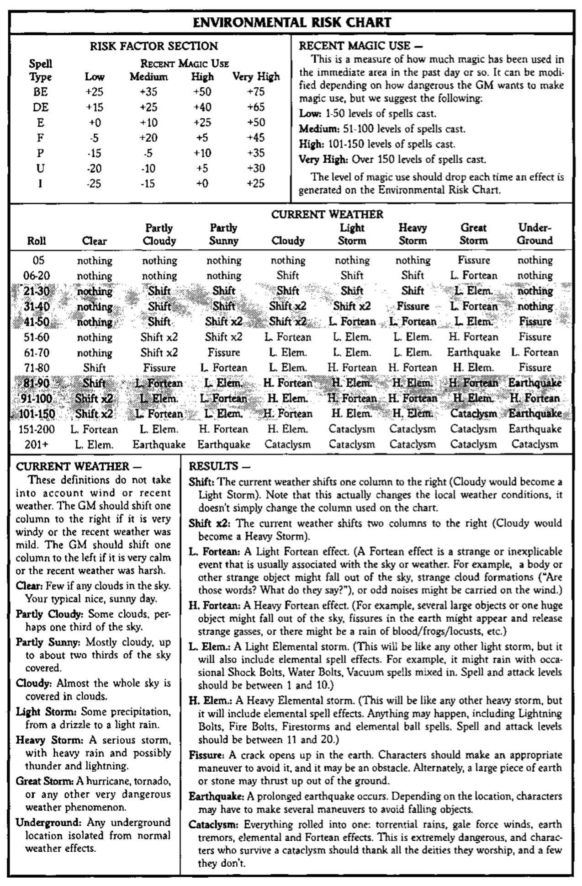
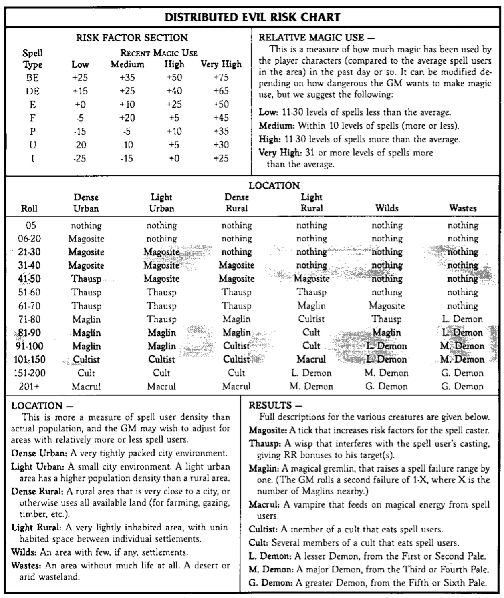

Thank you for purchasing the Skill Companion. This book is designed to be used by Gamemasters (GMs) and players to more precisely define the capabilities of the characters in their fantasy settings.
This book contains detailed rules and tables for all of the skills originally listed in Rolemaster Fantasy Role Playing (RMFRP) and Character Law. In addition, there are new options for skill development, skill resolution, and healing. Each skill category and individual skill is dissected in detail. Numerous examples are provided, especially for all non-combat skills.
The Skill Companion also contains material that focuses on characters who do not use spells. It provides 4 new professions, 18 new training packages, and optional GM material for balancing magic use.
This book does not examine combat skills or spells in any detail. These skills have been adequately dealt with in Arms Law and Spell Law. Additional details can be found in Martial Arts Companion, Arcane Companion, Channeling Companion, Essence Companion, and the Mentalism Companion.
When using this book with RMFRP, Character Law, Arms Law, and Spell Law, any information presented herein takes precedence. This book corrects a handful of minor misprints or oversights from RMFRP and Character Law. There is very little material that relates to Spell Law or Arms Law.
Any information contained within any other Companion takes precedence over the rules in this book. This reference material was designed (as much as possible) as a stand alone product. As a result, there are some discrepancies between this Companion and others. In such cases, the rules provided by the other Companions offer a more detailed analysis of a particular skill. For example, Essence Companion deals with Magical Rituals more intensively than is possible in this book.
Other source books (especially Castles & Ruins, Gamemaster Law, and Creatures & Monsters) are of great benefit, but not required to use this book. The information contained herein should not conflict with any information in those books. If discrepancies do arise in later source books, consider the specific source book to have the most applicable rules.
This book uses the standard notation found in RMFRP and Character Law. Whenever a stat is referenced (e.g., Strength), it refers to the stat bonus, unless otherwise indicated. In addition, for readability purposes, the standard masculine pronouns have been used when referring to persons of uncertain gender. In such cases, these pronouns are intended to convey the meanings: he/she, her/his, etc.
Every GM prefers his own style of play. This book attempts to accommodate this as much as possible. The GM should, however, decide on the power level of his campaign.
The goal of a mundane campaign is realism. The actions performed by the players are not heroic, but plausible. The character's immediate goals are small and manageable.
Most fantasy campaigns are heroic in nature. The characters are capable of performing feats not possible by mere mortals. The character's goals are grand; magic is a common occurance.
The focus of an epic campaign is immense. The players play characters whose actions move and shake the universe. The differences between good and evil are clear; the good guys usually win.
The penalties associated with performing maneuvers of various difficulties are presented below.
The difficulty level of a maneuver determines the penalty assigned to the maneuver roll. Throughout this book difficulty levels are also used for many other purposes. As a result, each difficulty has been assigned a numeric value, ranging from 1 to 9.
The first modifier applies to Static Maneuvers; the latter, to Moving Maneuvers. The Moving Maneuver modifiers are smaller since the difficulty of the maneuver is accounted for by the column on which the maneuver is resolved.
| Difficulty | Value | Mundane | Heroic | Epic |
|---|---|---|---|---|
| Routine | 1 | +30 (0) | +30 (0) | +50 (+20) |
| Easy | 2 | +20 (0) | +20 (0) | +25 (+5) |
| Light | 3 | +10 (0) | +10 (0) | +10 (0) |
| Medium | 4 | 0 (0) | 0 (0) | 0 (0) |
| Hard | 5 | -10 (0) | -10 (0) | -10 (0) |
| Very Hard | 6 | -25 (-5) | -20 (0) | -20 (0) |
| Extremely Hard | 7 | -50 (-20) | -30 (0) | -25 (+5) |
| Sheer Folly | 8 | -75 (-25) | -50 (0) | -35 (+15) |
| Absurd | 9 | -100 (-30) | -70 (0) | -50 (+20) |
In many cases, a single skill or person is insufficient to complete a task. In these cases, the following guidelines can be used by the Gamemaster (GM) to facilitate sequential or simultaneous skill resolution.
RMFRP provides one generalized static maneuver table (T-4.3). The Skill Companion provides a number of optional static maneuver tables, each keyed to a specific skill category. These specialized static maneuver tables are collected in Section 7.0.
Each of these specialized static maneuver tables has two additional parameters for each result: a "time multiplier" and a special modifier for subsequent related maneuvers. The General Static Maneuver Table T-4.3 provided on the next page is identical to Static Maneuver Table T-4.3 in RMFRP except for the inclusion of these two new parameters.
General modifiers common to all skills within the category may be found near the bottom of each static maneuver table, while modifiers specific to each skill may be found with the definition of that skill. On many static maneuver tables there is room for the GM to write down his own general modifiers.
Occasions will arise where a specialized static maneuver table for a skill category may not produce appropriate results for a particular application of a skill. In this circumstance, the GM should modify the results to his liking, or use the General Static Maneuver Table T-7.1 (or T-4.3).
If the initial unmodified roll is 66 or 100, the special optional entries for those values may be used instead of the modified result. The GM should examine these results carefully to appraise their suitability to his game; they have been highlighted to facilitate their exclusion if necessary.
Note that any modifier specified in the text of a result is not cumulative (i.e., an individual can only have one such modifier in effect at a given time for a particular skill).
Each result has a code associated with it:
##% • #.#~ • ##""
## % This indicates the extent to which a maneuver was successful. If partial or extra success is inappropriate, the GM should simply take 100% or higher as success and anything lower as failure.
## ~ This indicates a multiplier to the amount of time the task would ordinarily take to accomplish. The GM should determine how long a "standard" successful maneuver would take, and may, at his discretion, apply this multiplier to that time to determine the speed with which a character accomplished a task.
## "" This gives a modifier to a subsequent related action on the part of a character. Note that this modifier may only be applied to an activity that is both immediate and integrally related to the maneuver that yielded this result. For example, a mage makes a static maneuver using his Research skill to study the teachings of a famous mathemetician, and receives a Subsequent Action modifier of +30. He then makes an Advanced Math static maneuver to utilize those teachings to solve a complex problem. He may add the +30 modifier to his Advanced Math static maneuver roll. This modifier is cumulative with any modifier specified in the text of the result.
Note: The GM may determine that this modifier is innapropriate to a particular subsequent action, whereupon it should be ignored.
An uncoordinated effort occurs whenever a group of people are working together towards a common goal, but there is no clear master craftsman or organizer. Examples of such a situation might include a group (or pair) of people rowing a boat, or a group of spell casters all working towards the same ritual.
In this situation, the average bonus for the applicable skill should be determined. A single maneuver roll is made, and the average skill bonus is applied as a modifier.
Group Bonus for a Coordinated Maneuver = Average of the skill bonuses of the groupWhereas the average bonus might be significantly smaller than that of the best participant, by pooling one's efforts, tasks can be accomplished in a fraction of the time it would normally take to complete the task. The following formula indicates how many times faster the task will be accomplished than normal.
(Max + 1 - N) x (N) -;- (Max)Max indicates the maximum number of people that could work together (normally twice the number that could comfortably work together). N indicates the number of people currently working together. Note that if Max is very large, then the product is roughly equal to N.
Example: In a given kitchen, only 4 people can work together due to space constraints. 3 cooks are working on preparing dinner. Dinner could be made by one person in 60 minutes. These cooks can complete the task (4 + 1 - 3) × 3 + 4 = 1.5 times faster than normal, orin 40 minutes. Ifthey could find additional space so that up to 6 cooks could possibly work together, then the dinner would be finished in 30 minutes.
When there is a distinct leader or master craftsman coordinating the efforts of a group, the effective skill bonus of the group might be much higher (or lower) than in the uncoordinated circumstance. The group's skill bonus is based on the smallest skill bonus in the group. The leader then adds one to this value for every skill rank he has in the skill, minus one for each person he is coordinating, plus the number of ranks he has in Leadership. The bonus from Leadership cannot exceed the number of people being coordinated.
Group Bonus for a Coordinated Maneuver = smallest skill bonus in the group (may be modified) + leader's skill rank - number of group members (other than the leader) + leader's skill ranks in Leadership (limited)The leader can also assist the less skilled members of his staff. The leader can divide his skill rank bonus among any members of his staff as he sees fit. This will temporarily increase their skill, possibly elevating the group's overall bonus.
Example: Glim is attempting to sow the seeds of rebellion. He and a group of friends are attempting to perform a coordinated propaganda drive. Glim has 15 ranks of Propaganda and 5 ranks of Leadership. His friends' skill bonuses (in Propaganda) are +30, +45, +50 and +75. Glim divides his +40 skill rank bonus among his first three friends, increasing their bonuses to +55, +55, +55 and +75, respectively. The smallest skill bonus is now +55, to which Glim adds 15 - 4 + 4 = 15. The group's overall Propaganda skill bonus for a coordinated group maneuver is +70. If we assume that Glim's Propaganda bonus is +100, the group's average skill bonus (for an uncoordinated group maneuver) would only be +60 = [(100 + 30 + 45 + 50 + 75) ÷ 5].
The amount of time required to complete a coordinated maneuver is equivalent to that of an uncoordinated effort (see Section 2.2). Note that the leader does not count as a participant if his staff is larger than the number of ranks he has in Leadership.
Example: Continuing the above example, since a nearly unlimited number of people could blanket the city with pamphlets, the task can be accomplished in one fifth ofthe time normally required.
An aided maneuver is the converse of the coordinated maneuver. In this case a single person is attempting a maneuver, but he is being assisted by a number of people. For example, a general will often have a staff of tacticians in order to increase his Tactics bonus. The amount of time required to complete the maneuver is not reduced by the aid, but the character performing the maneuver has his skill bonus temporarily increased.
The character's skill bonus is increased by the total number of ranks of the skill possessed by his aides. This number is reduced by the number of aides, squared. It is possible to have one's skill bonus reduced by listening to too many assistants.
Modification for an Aided Maneuver = character's normal skill bonus + aides' total skill ranks - (# aides × # aides)
Example: Talen is planning a raid. He asks three ofhis friends for assistance. They have 3, 7 and 10 ranks of Tactics, respectively. Talen's Tactics bonus is increased by 20 - 9 = 11. If he asked three more friends for help, each of whom had 3 ranks of tactics, his skill bonus would be modified by -7 = (3+7+10+3+3+3) - (6x6). It's good to keep the advisory board small.
A subsequent maneuver occurs whenever a given maneuver must be completed before a second maneuver can be attempted. For example, a piece of music must be composed before it can be performed.
The GM should first determine the order in which the skills involved should be resolved. If the maneuvers are truly sequential, the order is obvious. If one or more of the maneuvers are occurring simultaneously, the GM must decide which skill is most significant. That skill is resolved last.
Example: A figure-skater is competing in ice-dancing. The GM decides that a Dance maneuver is the true goal of the maneuver, but that a Skating maneuver must also be completed.
To determine the success of the complete maneuver, the character attempts the first maneuver. If successful, the subsequent maneuver bonus (the final number on every Static Maneuver Table) is applied to the next maneuver.
The GM must also determine if the preliminary maneuvers are required to complete the overall maneuver. In the prior example, a failed Skating maneuver would indicate that the Dancing maneuver also failed. However, some skills are used simply to gain the subsequent maneuver bonus (e.g., Adrenal Balance, Meditation, Advanced Math). For example, it is not necessary for a character to successfully complete an Advanced Math maneuver before attempting an Architecture maneuver, but it may be necessary before attempting an Engineering maneuver.
If the character performing the preliminary maneuver is not the one performing the subsequent maneuver, any bonus resulting from the first maneuver should be halved. It is possible for a number of people to pass the subsequent maneuver bonus from one to another, provided each maneuver is successful.
When there are multiple skills being strung together, the overall maneuver is successful if every required maneuver results in Near Success or better. Characters can normally not re-roll Near and Partial Successes when attempting a sequential maneuver.
The amount of time needed to complete a maneuver depends on the maneuver being made and its difficulty. In general, the GM determines how long it will take to complete a given maneuver; this duration is modified by results from the various Static Maneuver Tables.
If the GM is interested in a more dynamic approach, the Moving Maneuver Table can be used. The GM determines how many points must be obtained, and how often the character gets to roll. For example, picking a lock might require 600 points, but the character gets to roll every round. Constructing a house might require 300 points; the character rolls each month.
The average amount of time is roughly equal to the number of points needed times the amount of time between rolls. The above examples would take 6 rounds and 3 months to complete, on average.
The character makes a maneuver roll, modified by his skill and all other modifiers, not including difficulty. The result should be indexed on the Moving Maneuver Table. If the result is a numeric result, the character gains that many points. Any other good result gives the character 150 points. Any bad results provide the character with no points. In some situations, the GM may even reduce the number of points gained if the maneuver roll is particularly bad.
Any subsequent maneuver bonuses or aided maneuver bonuses apply to each roll, not just the first.
Once the skill is completed, the character should make a final maneuver roll and reference the result on the Static Maneuver Table. If the result is less than a complete Success, the procedure may begin anew. Subsequent and aided maneuver bonuses would then be lost.
Normally, all skills within a category use the same stat bonuses. If a GM wishes a finer granularity in individualizing skills, he can assign two stat bonuses to the category and then a third to each individual skill. The two stats assigned to a category are the same as the first two stats given for the category in RMFRP and ChL).
Each skill description (Section 6.0) gives three stats under "Optional Stats Used." When using this optional rule, each skill category bonus uses the first two stat bonuses given. Then, each skill gets a special bonus that is equal to the stat bonus for the third stat given.
The net result is that 3 stat bonuses affect each skill bonus (just as they do if this optional rule is not used).
Example: The Awareness • Searching category has eight skills listed in it. The stats that give the stat bonuses for the category are "In/Re/SD." If this optional rule is being used, the skill category bonus would be figured as normal, except that only the In and Re stat bonuses would be added in. As each skill is developed, it would receive a special bonus equal to the stat bonus for the individual skill. Detect Traps and Locate Hidden would get a special bonus equal to the In stat bonus. Lie Perception would get a special bonus equal to the Em stat bonus. Poison Perception would get a bonus equal to the Me stat bonus. Observation, Reading Tracks, Surveillance, and Tracking would get a special bonus equal to the SD stat bonus.
A minor lord desires to have a manor built. He hires an architect, Bob, who in tum hires 3 drafters and a team of carpenters.
Bob begins by attempting an optional Advanced Math maneuver. Since he is not a mathematical genius (his bonus is only +30), he asks two of his academy buddies, Joe and Bill for help. They each have 5 skill ranks in Advanced Math, and so they provide an aided maneuver bonus of (5 + 5 - (2 × 2) = 6). Bob rolls an aided Advanced Math maneuver and rolls an 89. His total is (89 + 30 + 6 = 125) which is a Success.
Since his maneuver was successful, Bob can apply twice the subse· quent maneuver bonus (+20 × 2 = +40) to his Architecture maneuver (see Advanced Math). He must then complete a required Architecture maneuver. The GM considers the situation and determines that this will be a Medium maneuver. If this maneuver is not successful the project will be a disaster, although this may not be evident until much later! His Architecture skill bonus is +30, and he rolls a 16, so his final result is (16 + 30 + 40 = 86) a Partial Success.
Since the Architecture maneuver was successful, half of the subsequent maneuver bonus (+5 ÷ 2 = 2.5 = 3) is passed along to his three drafters. Not wanting to micro-manage, Bob does not attempt to coordinate their efforts. The drafters make a Medium Drafting maneuver, using their average Drafting bonus of +15. Since their workspace could comfortably house four people, the GM decides that the maximum number of drafters that could work together is eight. Thus, the drafting project is completed ((8 + 1 - 3) x 3 ÷ 8 = 2.25) times as fast as normal.
The lead drafter rolls a 90 for his maneuver, giving a combined result of (90 + 15 + 3 = 108). One half of the subsequent maneu· ver bonus (+10 ÷ 2 = 5) is passed along to the carpenters. The master carpenter (skill rank bonus of+30, category bonus of +20) is coordinating his staff of 5 carpenters (with skill rank bonuses of +5, +10, +15, +20 and +20), so he must decide how to allocate his skill rank bonus among his staff He decides to allocate 15 points to the least skilled worker, 10 points to the next most skilled and 5 points to the next most skilled. Once he has allocated his rank bonus, all bonuses are equal so the smallest bonus is +20.
The GM decides that the manor will take an average of six months to complete. He requires that the carpenters roll each month until they accumulate 600 points. These rolls are modified by the master carpenter's number of ranks in Leadership (3) and Carpentry (6) minus the number of workers (5), plus half of the drafters' subsequent maneuver bonus (5). Thus, each monthly roll is modified by (+20 + 3 + 6 - 5 + 5 = 29) and cross·referenced on the Moving Maneuver Table until 600 points are achieved.
After accumulating 600 points, the carpenters make a final Carpentry static maneuver roll. The master carpenter (Carpentry skill bonus of +50) rolls a 45 and gets a result of (45 + 50 = 95) a Near Success. This indicates that the structure is 80% complete. The carpenters must now accumulate another (600 * 20% = 120) points before the building is finished. The carpenters do not gain the benefit of the drafters' subsequent maneuver bonus on remaining maneuver rolls, but the Near Success does provide them with a +10 bonus instead.
Once these 120 points are accumulated, the manor will be complete if the final Carpentry maneuver result is a Success. As the project nears completion, it becomes clear to Bob whether or not he succeeded his initial Architecture maneuver.
These optional rules cover the specialization and generalization of the development of certain skills.
This option allows a character to focus his skill proficiencies more finely. Many skills (e.g., History, Religion, etc.) allow a character either to develop a broad understanding of an entire field or to develop a more precise understanding of a sub-field. Other skills provide a character with a similarly diverse set of abilities. See the skill descriptions in Section 6.0 for recommended specializations for each skill (some skills have none).
Specialization allows a character to select a sub-field of a skill in which he is an expert. If a maneuver roll falls within the character's specialty, he temporarily doubles the number of skill ranks he has in that skill. If the character cannot develop skill in the category (e.g., Spells, Awareness • Perceptions, etc.), the character temporarily increases the number of ranks in the skill by 50%.
To gain a specialization, a character must sacrifice a skill rank to the specialization when purchasing skills. This does not increase the number of ranks that can be bought in a given skill, however. For example, a Ranger wants to develop a specialization in Rigid Leather. Upon attaining level 2, he purchases three ranks of Rigid Leather. Two of these ranks are devoted to increasing his skill in Rigid Leather, the other towards specializing in AT 10. He could not purchase three ranks and sacrifice a fourth to gain a specialization because he can only develop three ranks of Rigid Leather per level.
It is not possible to specialize in a skill category. Suggested specializations are provided for each skill in Section 6.0.
The GM should carefully consider any proposed specialization to ensure that its parameters are sufficiently narrow. If a specialization is constructed such that a small number of specializations would cover every possible circumstance, the specialization is too broad.
It is strongly recommended that a character only have one specialization per combat skill (e.g., weapon skills, combat maneuvers, etc.) to prevent abuse of this option. A character may have multiple specializations in other skills.
Example: Anton, the Paladin, is not interested in learning general Religion. Instead, he specializes in the religion to which he belongs. He has 12 ranks in religion. These 12 ranks can be applied towards any religion, but if he needs information pertaining to his own religion, he has 24 ranks. Note that he has actually purchased 13 ranks, but had to sacrifice one in order to gain the specialization.Note that once a character has a specialization, he keeps that specialization until it is replaced by another specialization. Any ranks devoted to specializations are lost; a character cannot recover the rank by losing the specialization.
This option is the converse of specialization. Many skills require that a character develop the skill for each sub-category of the skill (e.g., Weapons, Riding, Metal-crafts, etc.). This option allows a character to learn all possible versions of the skill simultaneously.
If the skill is an Occupational or Everyman skill, it becomes a regular skill. If the skill is a regular skill, it becomes a Restricted skill. Restricted skills cannot be generalized. Once a skill is generalized, it can be used regardless of the sub-category. For example, a generalization in Riding would allow a character to ride horses, elephants and warcats equally well.
A skill cannot be both generalized and specialized. The GM may also decide that some generalizations do not apply to every sub-category, but rather a closely related group of sub-categories (e.g., a generalization in swords, rather than in one-handed edged weapons).
Example: Genn, the Animist, purchases Animal Healing as a generalization. Normally, Animal Healing would a normal skill for her. Since she has generalized, Animal Healing becomes a Restricted skill. She purchases a total offour ranks in Animal Healing (resulting in the acquisition oftwo ranks), but this skill can now be applied to any animal.
Section 24.1 of RMFRP provides guidelines for the length of time it takes to heal from an injury. These guidelines assume natural healing only. The following sections describe the effects of various healing maneuvers and how difficult they are to perform. The following skills are considered healing skills:
In general, use of a healing skill will reduce the amount of time it takes for a wound to heal. Without First Aid, many wounds will kill a character before natural healing is relevant, particularly when the victim is bleeding. First Aid is useful for stabilizing a victim, but a successful First Aid maneuver will not reduce the amount of time needed for a wound to heal. First Aid will help prevent re-injury. First Aid can also be applied to oneself (unlike any of the other healing skills).
A successful Second Aid maneuver will reduce the amount of time needed to heal by 25%. Thus, a wound that would normally take 12 days to heal will take only 9 days to heal. In addition, a Second Aid maneuver will reduce the penalty associated with the wound by 25%. Thus, a penalty of -40 would be reduced to -30.
Surgery is an intrusive process. It is needed when a limb must be amputated, or when a foreign object must be removed from the victim. Because of the traumatic nature of surgery, the amount of time needed to recover is not reduced, but Surgery might allow the victim to survive injuries otherwise fatal. A wound treated with Surgery or Second Aid allows the victim to add the subsequent maneuver bonus to his roll to prevent Nerve Damage. (See RMFRP)
Diagnostics is needed whenever a victim is affected by a poison or physical illness. Diagnostics is used to identify the symptoms of the ailment and prescribe an appropriate treatment and/or diet. Diagnostics can also be used to estimate a patient's chance of survival (prognosis).
Psychology is used to diagnose and treat mental illnesses. Of all of the healing skills, this one is the most difficult and time intensive. For a Psychology maneuver to have any chance of success, the victim must be willing to undergo treatment. If this is not the case, the psychologist can still diagnose the malady, but he may not make a maneuver to cure the affliction.
Bleeding wounds recover on the Skin/Tissue portion of the Healing Recovery Table T-5.4 (RMFRP). A Light wound is any wound that is bleeding 1-5 hits per round. A Medium wound is one that is bleeding 6-10 hits per round. A Severe wound is bleeding 11 or more hits per round.
First Aid can be used to stop up to 5 hits per round due to bleeding by applying direct pressure to the wound and/or presure points. This is a Medium maneuver. If the victim performs any action more rigorous than walking, the wound will reopen.
First Aid can also be used to stop more serious bleeding by using a tourniquet. A tourniquet must be loosened frequently, or the limb will die. This maneuver is Easy, but a result of Partial or Near Success indicates that the limb is lost.
Second Aid or Surgery can be used to stitch a wound. Second Aid can stitch a Light or Medium wound; Surgery can stitch any wound (that does not involve the loss of a limb). A wound that has been stitched is less likely to reopen. Every round of activity, the victim should roll and add the subsequent maneuver bonus provided by the Second Aid or Surgery maneuver and subtract 5 for every round of bleeding. If the result is zero or greater, the wound remains closed.
Example: Eirik stitches Kregon's arm after a fight. Eirik's Surgery maneuver results in an unusual success (+30). Kregon was bleeding 8 hits per round. Every round ofhe is active, he must roll and subtract 10 (30 - 8 × 5) - if the result is less than 0, the wound reopens.
Any character can cauterize a wound, provided he has a torch or a hot metal object. The character should make a First Aid maneuver. A Spectacular or Absolute Failure inflicts a D Heat critical and 4d10 hits and does not stop any bleeding. A Failure inflicts a C Heat critical and 3d10 hits, but half of the bleeding is stopped. A Partial or Near Success stops all of the bleeding and inflicts a B Heat critical and 2d10 hits. A Success inflicts an A Heat critical and 1d10 hits; an Unusual or Absolute Success causes no damage.
A simple fracture with a penalty of -20 or less is a Light wound. Any compound fracture, fracture with no specified penalty, or fracture with a penalty of -50 or less is considered a Medium wound. All shatters and fractures with a penalty of worse than -50 are Severe.
First Aid can be used to create a crude splint. This is a Medium maneuver for Light wounds and a Very Hard maneuver for Medium wounds. If a victim does not have a splint, he must roll whenever he maneuvers at faster than a walk. If the roll is less than the penalty (taken as a positive number), the penalty increases by 10.
Example: Kregon broke a rib (-5 penalty). The next round of combat he must roll. He rolls an 04. This is less than 5, so the penalty for the broken rib increases to -15. Another such increase, and the broken rib becomes a Medium wound.
Second Aid can be used to design a more permanent brace or setting. This is a Hard or Very Hard maneuver depending on whether the wound is Light/Medium or Severe. Setting a shatter is Absurd. Once the victim has such a brace, he can use the limb with little threat of re-injury.
Surgery is the best option for a shattered limb. The limb must be amputated to prevent gangrene. This is a Light maneuver.
Any critical that results in a light burn indicates a Light wound. A critical that results in a minor/medium burn or causes 1-5 hits per round of damage indicates a Medium wound. Any critical that results in a severe burn, causes 6 or more hits per round of damage, or involves the loss of a limb indicates a Severe wound.
First Aid can be used to treat Light and Medium wounds by applying cool water and a bandage. This is an Easy maneuver that restores 1-5 hits and prevents the possibility of blisters becoming infected. If First Aid is not administered, the wound will take twice as long to heal due to skin irritation.
Second Aid can also be used and usually includes the application of a salve. This is a Light maneuver.
Second Aid or Surgery can be used in the case of a Severe wound. The victim needs to have the burnt skin removed, and the wound properly dressed. This gory task is a Hard maneuver.
Injuries of this type recover on the Muscle/Tendon portion of the Healing Recovery Table T-5.4 (RMFRP). The number of days needed for recovery should automatically be doubled. The penalty associated with the injury indicates the severity of the wound: -20 or less indicates a Light wound, -21 to -50 indicates a Medium wound, and a penalty of more than -50 indicates a Severe wound.
First Aid can be used to brace a Light wound. This helps protect the victim from re-injury. This is a Light maneuver. If the victim does not have a brace, he must roll whenever he maneuvers at faster than a walk. If the number is less than the penalty (taken as a positive number), the penalty increases by 5. Once the injury is braced, the victim need only make such a roll when he fails a Moving Maneuver.
Second Aid can also be used to create a brace suitable for a Light or Medium wound. This is a Light maneuver. Torn ligaments can also be braced, but this is a Hard maneuver.
A surgeon can attempt to reconnect a severed ligament, but this is an Absurd maneuver. Failure indicates that the wound will never heal.
If a victim suffers a head injury, any healing maneuver performed on that injury is increased by one difficulty level. In addition, head wounds Healing are slow to heal.
The penalty associated with the injury indicates the severity of the wound: -20 or less indicates a Light wound, -21 to -50 indicates a Medium wound, and a penalty of more than -50 indicates a Severe wound.
First Aid can be used to bind a Light wound. This is a Light maneuver. First Aid can do nothing for more serious injuries.
If First Aid is not administered, the victim risks re-injuring himself. Whenever the victim attempts a maneuver more rigorous than a walk, he must roll below the penalty taken as a positive number, or the penalty increases by 10.
Surgery can be attempted to close more serious injuries. This is a Medium or Hard maneuver, depending on whether the wound is Medium or Severe. If the muscle or tendon was severed, this becomes an Absurd maneuver.
There is nothing that can be done for a nerve injury. The victim needs a magical herb or spell to recover from the injury.
The penalty associated with the injury indicates the severity of the wound: -20 or less indicates a Light wound, -21 to -50 indicates a Medium wound, and a penalty of more than -50 indicates a Severe wound.
There is not much that can be done when an organ is injured. In the case of a Light wound, First Aid or Second Aid can be used to cover the wound. This is a Sheer Folly or Extremely Hard maneuver. Until a successful maneuver is made, the victim must roll once per day. If the roll is below the penalty (taken as a positive number), that day does not count towards healing.
Example: A small creature scratches Kregon's eye. As a result, his vision suffers a penalty o f -20. Kregon rolls on the Healing Recovery Table, and determines that his eye will heal in 3 days. However, until Eirik administers First Aid, there is a 20% chance per day that Kregon will not get to count that day towards recovery.
If the wound is Medium or Severe, surgery is required. This is an Extremely Hard or Absurd maneuver.
Note that any organ that has been destroyed will not heal without magical intervention. Loss of a single eye may only result in a penalty of -50 to vision maneuvers, but this Medium wound will not heal.
Nearly all injuries require treatment for shock. The GM may rule that no other treatment can be administered until the healer treats for shock. Any injury that results in death in a given number of rounds can be delayed as long as First Aid is successfully administered. Shock treatment will also stop the loss of hits per round from burn injuries (since such damage indicates shock damage and not bleeding damage). Preventing death is an Extremely Hard maneuver; normal shock treatment is an Easy maneuver (subject to a penalty of -5 for every hit per round of shock damage).
Second Aid can also be used to temporarily revive a victim unconscious due to shock damage. If the victim's hits can be brought above zero the round he is revived (by consuming an herb, for example), he remains conscious. This Is a Sheer Folly maneuver.
Any injury that does not specify specific damage is considered to be a flesh wound. This includes any injury that causes bleeding and a generic maneuver penalty. The penalty associated with the injury indicates the severity of the wound: -20 or less indicates a Light wound, -21 to -50 indicates a Medium wound, and a penalty of more than -50 indicates a Severe wound.
First Aid or Second Aid can be used to dress the injury. This is a Light, Medium or Hard maneuver, depending on the severity of the injury. A successful maneuver allows the victim to apply the subsequent maneuver bonus to any resistance rolls versus infection. Healers may voluntarily provide skin dressings in order to provide their patients with this bonus, even if the injury is deeper than a flesh wound.
Bubonic diseases are the bane of every warrior. Every day that a character has an open wound, he must make a RR vs. a bubonic disease of a random level (1-10). This check must be made twice per day if the character is in a battlefield or other unsanitary situation. An RR should also be made once each month regardless of injuries, or once each week in unsanitary conditions.
Bubonic diseases can be treated using Diagnostics. A successful maneuver indicates that the healer has identified the disease. If the victim maintains the prescribed regiment of food and exercise (and prayer), the amount of time needed for recovery will be reduced by 25%. If the RR originally indicated an Extreme result, the victim may also make an additional RR (to avoid dying). If the second RR also indicates an Extreme result, the victim dies. (Bloodletting is another common treatment. The GM may consider giving the healer a bonus of +5 to a Diagnostics maneuver if he succeeds at a Light Surgery maneuver.)
Chemical diseases can be treated with Psychology. If the psychologist is successful, the victim may add the subsequent maneuver bonus to the Withdrawal roll. (See Gamemaster Law) This greatly increases a victim's chances of surviving withdrawal.
Neither Diagnostics, nor Psychology can assist a character with a genetic disease. If the disease is healed magically, Psychology can be used to reduce the recovery time by 25%.
Pneumonic diseases can strike at any time. Each month a character should make an RR versus a pneumonic disease (of a random level, 1-10). If conditions are crowded, this check should be made once each week. Pneumonic diseases are treated using Diagnostics in a manner identical to bubonic diseases.
Psychiatric diseases can be treated using Psychology. Until the victim receives treatment, he will not recover from a psychiatric disease. The amount of time needed to recover depends on the severity of the disease.
Note that trephination (removing a button of bone from the skull) is a more common approach to psychiatric illnesses in a medieval setting. This is a Very Hard Second Aid maneuver. If the GM is generous, he might give this procedure a 10% chance of success.
Reducing an Extreme disease to Severe requires a year of treatment. During this time, the psychologist must make a successful maneuver roll each month, or begin again. In addition, if the victim is not monitored closely, suicide or self-injury is a serious threat.
Reducing a Severe illness to Moderate requires one month for every six months that the victim has lived with the illness. The psychologist must make a successful maneuver roll each month, or begin from scratch. An Absolute Failure (or worse) results in the victim's condition worsening. These patients generally require constant supervision.
Curing a Moderate illness requires one month of outpatient therapy for every year the victim has had the condition. Curing a Mild illness requires therapy for one month for every two years the victim has had the affliction. The psychologist should make a maneuver roll each month, but a Failure does not require the psychologist to start over. An Absolute Failure causes the victim's condition to worsen.
The difficulty of any Diagnostics or Psychology maneuver depends on the severity of the illness. A Mild case is Easy to treat. A Moderate case is a Medium maneuver. A Severe case is Very Hard to treat, and an Extreme case is Sheer Folly (at best).
First or Second Aid can be used to prevent a poison from taking effect, provided the treatment is administered before any symptoms manifest. This treatment involves making a small incision and drawing the toxin out of the blood. If the poison was ingested, the healer must instead induce vomiting. This difficulty of either maneuver depends on the severity of the RR failure:
| Severity | Maneuver Difficulty |
|---|---|
| Mild | Light |
| Moderate | Hard |
| Severe | Extremely Hard |
| Extreme | Absurd |
The following sections provide options and general modifiers for all of the skill categories in RMFRP and Character Law. Most of the sections each cover a skill category or a group of skill categories (e.g., the Awareness skill categories). However, there are two general sections:
There are two types of artistic skills: passive and active. The goal of an artistic maneuver is the same, regardless of the category. The artist seeks to design a work of art, an object or performance of beauty and emotion. The artist expresses himself by presenting his work to the audience (in the gallery, on stage, or in the library).
The goal of an artistic maneuver is not the accumulation of wealth, although many artists would welcome fame and the accompanying wealth. Indeed, the greatness of an artist depends in large part on his audience's perception.
The difficulty of an artistic maneuver generally captures the depth or significance of the subject matter. The maneuver roll then indicates the beauty and elegance of the art. If the product of these two factors is determined, one can approximate the greatness of the result.
In more specific terms, the following formula indicates how widely known a given piece of art is generally recognized. Within this radius, the art can be considered part of the local culture. Beyond this radius, the public's familiarity with the piece of art diminishes until only serious collectors and fans are familiar with the art.
(Difficulty Level × (Maneuver Roll - 100) ÷ 20)2 in miles
Example: onya performs at the local pub. She is a fairly gifted flautist who attempts a Hard (DL = 5) maneuver. The maneuver roll results in a 165 after modifications. This impressive feat is mentioned as much as 264 miles away (= [5 × (165-100) ÷ 20)2).
An artist's fame grows and shrinks more slowly than the fame of a specific piece or performance. Each time the artist produces a work, his sphere of fame increases by one tenth of the difference or decreases by one twentieth of the difference, as appropriate.
Example: If Sonya had a sphere of fame equal to 100 miles, her fame would increase by 16.5 miles (= (265 - 100) ÷ 10). If she previously had a sphere offame of 400 miles (Wow!), her sphere would shrink by 7 miles (= (265 - 400) ÷ 20).
Over time, an artist's fame will be roughly equal to that of his works. Once the artist dies, his work may still gain fame, provided there is some way for future generations to enjoy the work (i.e., the art is passive, not active). If the artist had more than 10 ranks in his art, his reputation's sphere of fame will grow by a percentage equal to the number of ranks above 10, each decade. If the artist had fewer than 10 ranks, the sphere of fame will shrink by a percentage equal to the number of ranks fewer than 11, every five years. Note that an artist does not necessarily need to die for this to occur, he merely needs to stop producing work for five or more years.
The amount of time required to complete an artistic maneuver depends largely on the size (or length) of the artistic piece. In general, an artist can complete a piece of art of average size (depending on the medium) in 6 months to a year. This should be modified by the difficulty of the artistic maneuver. A simple sketch might take only a few minutes to complete, whereas a complete masterpiece might require years of effort. The GM might allow the artist to roll the maneuver after spending one fourth of the time required. At this point, the artist can decide whether or not to continue.
The Moving Maneuver Table can be used in a number of ways. The result from the table is often a number, which can be interpreted in a number of ways.
Allor Nothing: An all or nothing maneuver is a maneuver that either succeeds completely, or fails utterly. Examples include attempting to lift a great weight, and attempting to stop while skiing. The player must roll a second time and add the number from the chart. If the result is over 100, the maneuver succeeds.
Percentage: For these maneuvers, it is possible to succeed partially. This is definitely the case when attempting to maneuver a certain distance.
Both: Some.maneuvers may involve both of these options; these maneuvers are dangerous. There should be an obvious risk to the character to justify using this option. Examples might include climbing or tightrope walking. The danger of falling is very real.
Athletic maneuvers require the expenditure of exhaustion points (EPs). Each such skill description includes the exhaustion point cost of the maneuver. This indicates the number of EPs that must be expended each round. The normal exhaustion point modifiers also apply.
In addition, there is an exhaustion point modifier based on pace:
| Pace | Exh. Pt. Modifier |
|---|---|
| Walk | x1 |
| Jog | x2 |
| Run | x5 |
| Sprint | x120 |
| Fast Sprint | x360 |
| Dash | x3000 |
Example: Normally, acrobatics requires 1 exhaustion point every 6 rounds. An acrobatics maneuver performed at a sprint pace (x120) would cost 20 exhaustion points per round. This increases to 40 exhaustion points per round ifthe temperature is above 100°F
For every 5 exhaustion points spent, the character's pool of available exhaustion points is reduced by one. This reflects the effects of prolonged exertion. This effect lasts until the character sleeps (or drowses, see Drawsing). The character also loses one point from his pool of exhaustion points for every hour of consciousness.
Example: A charader with 40 exhaustion points fast sprints (6 EPs every round) for 5 rounds. This costs 30 exhaustion points. His pool of exhaustion points drops from 40 to 34; he currentlyhas 10 exhaustion points. After resting for a few minutes, he has recovered all of his available exhaustion points. However, until he sleeps, he cannot have more than 34 exhaustion points.
Most athletic skills also have a distance multiplier indicated. A character can normally maneuver a distance equal to his base movement rate each turn. The distance multiplier modifies this rate. Hence, skills like Climbing and Tightrope-walking are slow and methodical. Skills like Skiing and Flying can be quite rapid. In addition, a character can increase this rate by increasing his pace. This costs more exhaustion points and may increase the difficulty of the maneuver. Most skills are ideally performed while walking, but some (like Jumping) require a different pace. Each pace category faster (or slower) than the ideal pace increases the difficulty by one.
The amount of weight carried also increases the difficulty of a maneuver:
| Wt. Penalty (before St mod.) | Modification |
|---|---|
| 0 | -1 difficulty level |
| -1 — -10 | no modifier |
| -11 — -25 | +1 difficulty level |
| -26 — -40 | +2 difficulty levels |
| -41 — -65 | +3 difficulty levels |
| -66 — -100 | +4 difficulty levels |
| -101 and worse | +5 difficulty levels |
Note that the weight penalty also modifies a character's maximum pace. Even though this penalty can be offset by a character's Strength, wearing armor and carrying equipment greatly reduces a character's mobility. In addition, a character's Moving Maneuver Penalty will modify all moving maneuvers.
Athletic maneuvers must be resolved every round or every strategic turn. The maneuver is not complete until the character decides to stop maneuvering.
Most Awareness skills are based on visual observation. As a result, most Awareness maneuvers are modified by the lighting. Other obstructions (like fog or smoke) increase the difficulty of the maneuver.
| Lighting | Modifier |
|---|---|
| Direct bright light | -10 |
| Indirect bright light | +10 |
| Medium light | 0 |
| Twilight | -10 |
| Torchlight or Moonlight | -25 |
| Candlelight or Starlight | -50 |
| No light | -100 (at best) |
Races with excellent night vision can ignore these penalties, provided there is some source of light (like the moon). Races with dark vision (like Dwarves) can ignore these penalties within the range of their dark vision.
Maneuvers that rely on other senses have the difficulty level of the maneuver modified by the background interference. There are no general modifiers.
Awareness maneuvers can be performed whenever the GM or character deem a maneuver roll to be appropriate. It usually takes a single round to complete an Awareness maneuver in a single direction (60° field of vision) or one minute to complete an Awareness maneuver in all directions. An Awareness maneuver might take longer if a significant area must be searched (roughly one round for every 10' x 10' area examined closely enough to notice small objects).
Example: Searching one square mile for the prince's missing knife would require 775 man-hours = 32 days. A search o f this scope requires multiple people.
This includes Armor, Body Development, Combat Maneuvers, Martial Arts, Special Attacks/Defenses, and Weapons.
These skills are detailed in Arms Law and Martial Arts Companion. Note that every combat skill has an exhaustion point cost. This number indicates the number of rounds that must be spent performing that action before losing one exhaustion point. This may be modified by the normal exhaustion point modifiers. (See Section 5.1.) If multiple combat skills are used simultaneously, the exhaustion point cost of each is applied.
Combat skills (including attacks) can be used while maneuvering. It is often difficult to stop while maneuvering (e.g., while skiing or flying). The penalty associated with attacking while maneuvering depends on the difficulty of the maneuver:
| Difficulty | Modifier |
|---|---|
| Routine | 0 |
| Easy | -5 |
| Light | -10 |
| Medium | -25 |
| Hard | -50 |
| Very Hard | -75 |
| Extremey Hard | -100 |
| Sheer Folly | -150 |
| Absurd | -200 |
Note: The GM may allow characters to develop a skill called Moving Strike (in the Combat Maneuver skill category). This skill must be developed separately for each type of maneuvering while attacking-for example, charging on foot, skiing, flying, etc. The Moving Strike skill bonus is only used to reduce (or eliminate) the penalty based upon the difficulty of the maneuver (see above).
If a character is moving faster than his opponent (e.g., he is charging) and attacking while maneuvering, the attack is not resolved in the usual manner. Initiative is based solely on the length of the weapons (or attacks) used. The longer weapon strikes first. The attacker and defender both receive a bonus of +1 for every 10 feet/round of speed. If both combatants are charging, this bonus can become quite large. Double this bonus for a combatant with a pole arm. Finally, if a combatant is not moving, and has braced his pole arm, he doubles the number of concussion hits inflicted.
Example: Cedric is charging into battle with a spear. Sprinting is an Easy maneuver for him, so he suffers a penalty of -5 to his attack. However, since he is moving 180/round, he receives a bonus of +36. His opponent is using a sword, which receives a bonus of+18. Cedric's weapon is longer, so he will strike first. If his opponent were also charging (at 150'/round), these bonuses would increase to +66 and +33, respedively.
Combat Maneuvers must be resolved every round and are completed within the course of a round. Note that many Combat Maneuvers do not require a maneuver roll.
A maneuver roll is generally not necessary when communicating, especially when player characters are communicating with other player characters. In most cases, a player should restrict his vocabulary to that of his character.
A maneuver roll is necessary if information must be communicated. Partial and Near Successes indicate that some of the information is not communicated.
A maneuver roll is also necessary whenever a player wants to temporarily increase another character's linguistic skill (i.e. tell him what to say). Note that all participants have their skill temporarily increased, so this option cannot be used to increase another player character's linguistic skill in order to communicate with someone else in secret.
The length of time required to complete a Communications maneuver depends on the length of the communication. Game time and real time transpire at equal rates while communicating.
The goal of a crafter is the creation of some item. The difficulty of this attempt depends on the complexity of the object to be created, not on the size of the object. On the other hand, the size of the object to be created is the single most important factor when determining how long it will take to complete a project. Note that more difficult projects will automatically take longer than easier ones simply due to the fact that partial successes are more likely.
The average amount of time required to complete many common items is listed in RMFRP and Gamemaster Law. Other production times can be extrapolated from there; The length of time required to construct a building is described in Castles & Ruins.
A maneuver roll should not be made until the item is at least half finished. At this time, the GM may wish to allow the player to make the maneuver roll before deciding whether or not to finish the project.
Note that all craftsmen require tools and supplies. A complete set of tools generally costs from 10 silver pieces (sp) to 1000 sp depending on the size of the workshop. In addition, the craftsman must purchase raw materials. These generally cost half as much as the item. It takes years for a craftsman to become rich.
Finally, many cities require craftsmen to belong to the appropriate guild, which will invariably require the craftsman to pay yearly dues of 1-10 sp. However, the craftsman is more likely to receive work when he belongs to a guild, and he can usually get a discount on raw materials (5-10%).
Influence skills are one of the most difficult to quantify in any game. There are two main approaches to resolving Influence maneuvers. The appropriate solution depends on the skill of the player (at role playing) and the skill of the character (at the Influence skill).
Roll Playing: In many cases, the character has a much better idea how to get his way than does the player. In these cases, roll playing is an appropriate solution. Prior to role playing the influence attempt, the player should make a maneuver roll. The player then role plays the attempt in relation to the success of the maneuver. The GM should offer the appropriate amount of resistance. Note that this method of resolution requires greater skill on the part of player and GM alike.
Role Playing: Some players are more comfortable role playing an influence attempt prior to making the maneuver roll. If the player's attempt is especially clever (or entertaining), the GM might give the character a bonus to the maneuver roll. The drawback of resolving Influence maneuvers in this manner is that the player must have some idea of how the character would accomplish the attempt.
In reality, most GMs opt for a solution somewhere between these two extremes. The most important factor to keep in mind is that it is the character's skill that is most important, not the player's.
Many Influence maneuvers can be completed in a few minutes. More difficult maneuvers will take longer. A Routine maneuver will generally take one minute to complete. Each increase in difficulty level doubles the amount of time required. The amount of time required for a Propaganda maneuver is measured in days, not minutes.
Example: A Medium Duping maneuver would take 8 minutes to complete. An Extremely Hard Propaganda maneuver would take 64 days.
The maneuver roll cannot be made until the entire time has elapsed. If the attempt is abandoned prior to this point, it will automatically fail. In addition, the GM might decide that similar attempts in the future will be more difficult.
Lore skills can be resolved in one of two ways. The GM may want to provide each player with background information prior to play. The amount and type of information provided would depend on the character's skill in any relevant Lores. Alternatively, the player may desire a specific piece of information. This requires a maneuver roll during play.
The difficulty of a Lore maneuver depends entirely on the amount or depth of knowledge requested by the player. The obscurity of the information modifies what maneuvers can be attempted. See below.
The absolute number of ranks in a Lore determines the amount of knowledge the character has in the subject. For this reason, specialization is particularly useful with Lore skills. Determine the character's Knowledge Level on the table below:
| Ranks | Knowledge Level |
|---|---|
| 0 | 1 |
| 1-2 | 2 |
| 3-4 | 3 |
| 5-6 | 4 |
| 7-9 | 5 |
| 10-12 | 6 |
| 13-16 | 7 |
| 17-20 | 8 |
| 21+ | 9 |
The obscurity of a given topic should be determined by the GM. In some cases, this is equivalent to the rarity code found in Creatures & Monsters (e.g., Fauna and Flora Lore) or in Gamemaster Law (e.g., Herb and Poison Lore). In other cases, the Gamemaster must decide on the obscurity rating, which will range from 1 (common knowledge) to 9 (arcane trivia). A character cannot attempt a Lore maneuver if the difficulty level plus obscurity rating exceeds twice the character's knowledge level. If the obscurity rating is not obvious, assume that it is equal to the difficulty level.
Example: Asix, the scholar, has 7 ranks in Culture Lore. The GM has determined that information about the gypsy nomads is somewhat scarce and assigns information concerning these people an obscurity of 6. Asix has a knowledge level of 5. He can therefore not attempt any maneuver more difficult than Medium. If he specialized in the nomads, he could attempt Hard maneuvers.
If the sum of the obscurity rating and difficulty level do not exceed the character's knowledge level, he can attempt the maneuver without any resources. Otherwise, the maneuver will require research. Most non-research maneuvers can be attempted in one round. If research is required, the maneuver will require a number of hours equal to the difficulty level times the obscurity rating.
Example: Asix is not able to attempt any maneuver concerning the gypsies without doing some research. A Medium maneuver would take 24 hours of research. Better brew some coffee.
Many Outdoor maneuvers must be resolved every strategic turn. Due to the variety of maneuvers in these categories, the GM must determine the amount of time required to complete a given maneuver. Many of the animal skills resemble skills in other categories, which can be referenced for guidelines.
If the maneuver involves an animal, the following modifiers apply:
| Condition | Modification |
|---|---|
| Non-intelligent | -50 |
| Low-intelligence | -10 |
| Animal intelligence | 0 |
| Wild/Untamed | -20 |
| Befriended/Raised from birth | +30 |
| Amphibians | -10 |
| Arthropods (insects) | -50 |
| Avian (birds) | -20 |
| Bovine (cattle, buffalo, deer, etc.) | 0 |
| Canine (dogs, wolves, foxes, etc.) | +10 |
| Cetacean (all sea mammals) | -20 |
| Civets (skunks, badgers, etc) | -10 |
| Coelentrate Uellyfish, etc) | -10 |
| Equine (all horse types) | +10 |
| Feline (all cats) | -10 |
| Fish (all fish with bones, scales, fins) | -30 |
| Mollusca (snails, clams, squids, etc) | -40 |
| Mustelids (ferrets, weasels, etc) | 0 |
| Pacyderm (elephants, rhinoceros, etc) | 0 |
| Rodents (rats, beavers, rabbits, etc) | 0 |
| Saurians (dry-land, legged reptiles) | -10 |
| Serpentine (all snakes and serpents) | -10 |
| Simians (apes, monkeys, gorillas) | +50 |
| Swine (pigs, boars, etc) | 0 |
| Ursine (bears, wolverines, pandas, etc) | 0 |
These skills all come from the following skill categories: Directed Spells, Power Awareness, Power Manipulation, Power Point Development, and Spells.
Most Power maneuvers require one minute to complete. For every round less than this devoted to the skill, the maneuver roll should be reduced by -20. This cannot be reduced to less than a single round (-100). This allows characters a desperate chance to attune to a new item while in combat.
Note that spell casting requires the expenditure of exhaustion points. Casting a spell drains one exhaustion point every two rounds. Concentration drains one exhaustion point every six rounds (one minute). If a character desires to maintain concentration for an extended time, he should develop the Meditation skill, which allows him to concentrate without spending exhaustion points.
The length of time required to complete a Science/ Analytic maneuver depends on the difficulty of the maneuver. Note that some maneuvers may take longer (e.g., Biochemistry) and others may take less time (e.g., Basic Math).
| Difficulty | Time Required |
|---|---|
| Routine | 1 round |
| Easy | 1 minute |
| Light | 10 minutes |
| Medium | 1 hour |
| Hard | 6 hours |
| Very Hard | 12 hours |
| Extremely Hard | 24 hours |
| Sheer Folly | 1 week |
| Absurd | 1 month |
Use of a Science/Analytical skill assumes that the character has the necessary materials and tools to complete the maneuver. The cost of such materials can vary widely, and must be determined on a case-by-case basis. The quality of these tools may provide the scientists with a bonus or penalty range from -20 to +20.
A Science/Analytic maneuver roll cannot be made until the task is completed. The scientist has no way of knowing how successful he will be until this time.
Self Control maneuvers are used to perform some feat that requires mind over matter or requires the character to summon internal energies to accomplish some task. Many of these maneuvers are physically draining. Nearly all Adrenal maneuvers require the character to spend 5 exhaustion points per round. This includes the round of preparation (20% action), thereby raising the total cost to 6 exhaustion points (1 the first round and 5 the next).
Note: GMs may allow characters to sustain Adrenal maneuvers. The exhaustion point cost increases by a factor o f one for each round after the first, and there is a cumulativepenalty of-10 to the Self Control maneuver roll after the first.
Example: En-Shin, the Warrior Monk, spends the first round of combat preparing for Adrenal Speed (20% action, 1 exhaustion point). His maneuver is successful, so the next round he receives 200% activity (and spends 5 exhaustion points). He spends 20% of that round preparing for another Adrenal Speed maneuver. This attempt will be made at -10. It is successful, so the next round En-Shin spends 10 exhaustion points to maintain the Adrenal Speed. After 4 rounds of Adrenal Speed (requiring a total of 51 exhaustion points, not including those spent attacking or maneuvering), En-Shin attempts to maintain Adrenal Speed one more round. This attempt (at -40) fails, so En-Shin does not receive the benefits of Adrenal Speed the following round. (Neither does he spend 25 more exhaustion points).
Note that only Adrenal maneuvers and Frenzy require the expenditure of exhaustion points. No other Self Control skills require exhaustion points. In fact, Meditation can be used to prevent the loss of exhaustion points due to concentrating on a spell.
Subterfuge skills are generally used to prevent others from noticing some misdeed. The difficulty of such a maneuver should not depend on the skill of potential observers. The difficulty of Subterfuge maneuvers depends only on the nature of the maneuver itself. In addition, lighting conditions thwart vision, they do not make Subterfuge maneuvers more simple. In fact, it might be quite difficult to find a hiding place in the dark, but harder still to find the person hiding.
Whenever a Subterfuge maneuver is made, the GM should note the level of success attained by the character (e.g., Partial Success, Success, Failure, etc.). Intentional attempts to discover the Subterfuge maneuver (using an Awareness • Searching skill) requires a maneuver roll at least as successful as the Subterfuge maneuver. For example, if a thief attempted a Stealth maneuver and got a 159 (Success), an observer needs to roll a 111-175 (Success) to discover the hiding person. If the observer's result is a Partial Success or better, the observer might become suspicious even if the hiding person was not located.
If the observer is relying on unconscious Awareness skills (Awareness • Senses or Alertness), his result must exceed that of the hiding person. In the above example, the observer would need a 176 or better (Absolute Success) to locate the hiding person. If the maneuver result is equal to that of the Subterfuge maneuver, and the Awareness maneuver is a Partial Success or better, the observer might become suspicious.
Subterfuge • Stealth and Subterfuge • Attack maneuver rolls are required every round. These tasks take at most a single round, and occasionally less. Subterfuge • Mechanics maneuvers generally take one round times the difficulty level, squared. Notable exceptions include Forgery and Trap Building, which take longer.
The Technical/Trade categories encompass a large number of skills. The amount of time required to complete such a maneuver can vary widely, and must be determined on a case by case basis. Note that if tools are required, it is assumed the character has access to the necessary implements. If not, an additional penalty of at least -50 should be assessed.
These skills allow characters to assimilate into an urban setting, or locate a specific person or item. Assimilation maneuvers are attempted immediately upon entering the urban setting, or whenever it is important that the character blend in. It is not necessary to spend time performing these maneuvers, they occur automatically. Note that an assimilation maneuver can only be used to draw attention away from oneself. If the police are conducting door-to-door searches, you will need to use a Subterfuge skill to escape.
Locating people and items can take time. It generally takes one hour times the difficulty level, squared, of the maneuver to determine if the person or item exists in the area.
A character can designate one area within a city as an automatic specialization in all Urban skills. This assumes that the character
lives in this neighborhood and spends a considerable amount of time there. Assimilation maneuvers in this neighborhood automatically succeed, unless the character is performing some action that draws attention to himself. If the character moves, this specialization will disappear after one month. A new specialization will be gained for his new neighborhood after living there one month. If the character does not settle down, he will not have any automatic specialization until one month after he does settle down.
This section provides detailed material for each skill using the following parameters.
Each skill entry begins the skill's name-these correspond to the skill names in RMFRP and Character Law.
The category to which the skill belongs. See Section 5.0 for information on each skill category.
These are the stats that the skill uses if the optional rules in Section 2.7 are used.
This indicates how quickly exhaustion points are expended when the skill is used at a normal pace-usually at a walking pace (see Section 5.2.). If this parameter is not included for a specific skill, no additional exhaustion points are expended when using the skill. Increased paces require more exhaustion points:
| Pace | Exh. Pt. Modifier |
|---|---|
| Walk | x1 |
| Jog | x2 |
| Run | x5 |
| Sprint | x120 |
| Fast Sprint | x360 |
| Dash | x3000 |
Multiply the character's base movement rate by this value to determine the character's base rate while performing the skill. If this parameter is not included for a specific skill, a character may not normally move while using the skill.
What the skill does.
Additional information concerning maneuver resolution or other uses for the skill. This section also describes how to determine the difficulty of a maneuver.
Possible specializations. See Section 3.1.
The following sections provide example maneuvers of various difficulties. What follows here are guidelines for understanding the various difficulty levels.
Routine (1): A normal person without skill could complete the maneuver given time, and a bit of luck.
Easy (2): An apprentice could complete the maneuver with little difficulty.
Light (3): An apprentice could complete the maneuver given ample time.
Medium (4): This difficulty level represents the "average" difficulty. Whatever maneuver seems most common for a skill is generally a Medium maneuver.
Hard (5): An expert is needed to accomplish the maneuver.
Very Hard (6): An expert would need time to accomplish the maneuver.
Extremely Hard (7): Only a very skilled expert would be able to succeed at the maneuver.
Sheer Folly (8): This difficulty level is reserved for attempts that are at the edge of human capabilities. Refer to a record book for examples of Sheer Folly maneuvers.
Absurd (9): This difficulty level is reserved for maneuvers that exceed the possibilities of humans. Such maneuvers should only be attempted by heroes.
| Category: | Athletic • Gymnastics |
| Optional Stats Used: | Ag/Qu/Ag |
| Exhaustion Points Cost: | 1 every 6 rounds |
| Distance Multiplier: | 1 |
This skill provides a bonus for in-air maneuvers (e.g., flying or levitation) or swinging on objects. This skill includes the use of parallel bars, uneven bars, and other gymnastic activities in which the majority of the activity is spent in airborne maneuvers. A successful maneuver roll can reduce the severity of a falling critical by one (i.e., a 'B' becomes an 'A', a 'D' becomes a 'C', etc.).
The primary goal of an Acrobatics maneuver is the
successful (safe) completion of an in-air maneuver. Unlike Flying/Gliding, the maneuver is linear; the acrobat cannot change direction while in the air. Whereas Acrobatics maneuvers tend to be graceful and beautiful, if beauty is the goal, an artistic skill (like Dance) might be more appropriate.
The difficulty of an Acrobatics maneuver is determined by the amount of movement the acrobat must perform, combined with the timing of the maneuver. Simply swinging on a rope is not difficult, but in order to grab the hands of another acrobat while swinging requires careful timing. Rotations and somersaults make the maneuver even more difficult.
Note: Every 180° of rotation (in any direction) while performing an Acrobatics maneuver adds one to the difficulty. For example, a complete somersault (360°) combined with a half spin (180°) would add three difficulty levels.
Routine: Holding onto a swinging object (e.g., a rope). Partial Success requires a second roll to determine whether or not the character has lost his grip.
Easy: Swinging across a pit or other opening provided the rope is already in hand. Again, Partial Success requires another roll.
Light: A swing to a specific location. Partial Success indicates that the swing was successful, but misses the intended location by a similar percentage. (For example, Glimglad wants to swing from one balcony, across the room to the top of a staircase (a total of 50'). The result of the Light maneuver is a 70. Glimglad misses his intended location by 15' (30 percent). The Gamemaster decides that Glimglad has instead landed on the banister fifteen feet down the stairs.)
Medium: A swing onto or into a combatant. A successful result forces the victim to make a RR (level vs. number of ranks of Acrobatics) or take an Unbalancing critical (1 severity/20 faIlure). If the acrobat lands on the victim, the victim resists at a -20, but the acrobat falls if the victim makes the RR. This is a Very Hard maneuver if the acrobat has a weapon or other object in one hand.
Hard: Riding a curtain or a sail with a knife. Partial Success indicates the acrobat falls more quickly than intended and may take falling damage. (For example, E'Rollleaps out of a crow's nest and attempts to use the sail to brake his fall. He rolls and gets a 30. Since the crow's nest was 50' high, E'Roll takes damage for a 35' fall. Ouch!)
Catching a static object while falling and swinging around it before dropping further. (This is frequently done in comic books.) This maneuver is modified by -1 for every 10' fallen, but will reduce the severity of a falling critical by one. This is an extremely hard maneuver if the object being caught is in motion (e.g., a trapeze). Note that if there are several objects to brake the fall, the acrobat can reduce the critical several times, thereby eliminating the critical(s) entirely.
Very Hard: Swinging from rope to rope, vine to vine, etc. Partial Success indicates that the acrobat covers less than the normal distance. If one rope must be released prior to grasping the next, the maneuver becomes more difficult and all Partial Successes must be rolled again to avoid falling.
Extremely Hard: 1'-10' between ropes.
Sheer Folly: 11'-25' between ropes.
Absurd: 26'-50' between ropes.
| Category: | Artistic • Active |
| Optional Stats Used: | Pr/Em/SD |
This skill provides a bonus for simulating actions or reactions of others, as often used in drama performances, devising new identities, etc. This skill may be used to impersonate others, or hide one's own reactions from others. It may be used anytime a character wishes to behave or appear in a manner other than normal and natural to him under any given circumstances.
The goal of acting is the creation of a (fake) persona that facilitates the viewer's suspension of disbelief. The more complex or fantastic the persona, the more difficult the attempt. If the skill roll is successful, the actor has convincingly portrayed the persona he is acting. (This may result in nothing more than a laugh or tear, depending on the difficulty of the maneuver.)
It is relatively simple to remove a specific component of one's own demeanor; it is much more difficult to portray a believable character replete with idiosyncrasies and intricate emotions. Humor is also easier to portray, since plausibility is not a factor.
When attempting to fool a target, the target may be entitled to an Alertness roll.
Routine: Hiding a specific brief response. Success indicates that the actor has replaced his natural response with one chosen by him. This is particularly useful when receiving Winter Solstice gifts from great aunts and uncles.
Easy: Hiding one characteristic trait for an extended period of time. Each time the characteristic trait would have been exhibited, the actor makes a roll to hide it. Each consecutive Partial Success increases the chance of detection by +10. Any Absolute Success reduces the chance of detection by -10 until a failure is rolled.
Light: Adding one characteristic trait for an extended period of time. Each time the characteristic trait is exhibited, the actor makes a roll. See above for modifiers. (For example, an evil Doppelganger is pretending that he worships the Lord of Light. Every week he must roll while attending mass to convince his companions that he is devout.)
Medium: Portraying a simple character. The character has no emotional depth and is plausible only for a short time. Most minor theatrical roles fall into this category.
Hard: Portraying a specific individual to an audience or target who has only heard of the individual. (For example, the evil Doppelganger has assassinated the ambassador of Sherib while en route to Salin. The ambassador has never been to Salin, but has a definite reputation.)
Very Hard: Portraying a complex character. The character has real emotional depth and is plausible for an extended time. Most main and supporting roles fall into this category.
Extremely Hard: Portraying a specific individual to an audience or target who is familiar with the individual, but not a close friend or family member. The actor could, for example, portray the king at official functions to thwart assassination attempts. Portraying a complex character whose ethos is antithetical to that of the actor's. Many actors simply refuse such roles, due to the difficulty of the task.
Sheer Folly: Portraying a specific individual to that individual's close family and friends. Note that this implies that the individual has spent a great deal of time with the target. A person's own wife may not know her husband if he is always at war (but the generals would certainly recognize an impostor immediately).
Absurd: Portraying a specific individual whose ethos is antithetical to that of the actor's. Any attempt to fool magical detection would also fall into this category.
| Category: | Technical/Trade • Vocational |
| Optional Stats Used: | Me/In/Pr |
This skill provides a bonus for functioning successfully within a familiar government where record keeping, personnel interaction, and bureaucracy are present. Also useful in gaining public office and applying governmental power.
The goal of Administration is the successful application of political influence, graft, and legal loopholes towards some specific goal. That goal must be within the means of the local governmental system. Thus, gaining office and changing a law may be possible goals. However, if only the king can declare war, an Influence skill should be used to persuade the king. (Although gaining an audience will probably require an Administration roll.) The difficulty of the attempt is determined by the size of the effect desired. The public's willingness to accept the change can further modify the difficulty.
Routine: Applying for and obtaining a license. Some cultures may require a permit or license to carry a sword or to modify or build a dwelling. Bureaucracies with years of experience may require a permit for nearly every activity imaginable.
Easy: Being elected to or awarded a trivial position. Examples might include Lamp Inspector, Refuse Removal Coordinator for Baker Street, etc.
Light: Proposing and adopting a trivial law or regulation. Such a proposal should modify an extant law, and produce only the smallest of results. For example, changing the order of mail delivery within a small area or requiring all licensed blacksmiths to display credentials.
Medium: Preventing the prosecution of an innocent person. This may be modified by up to two degrees of difficulty by the evidence available and by the public perception of the individual. (It is easy to gain a conviction against a known killer, even if the charges are trumped.) Being elected to or awarded a minor position. Examples might include Magistrate, City Inspector, etc.
Hard: Eliminating records pertaining to a specific incident. This may pe modified by up to two degrees of difficulty by the amount of evidence to be deleted and by the importance of the incident.
Proposing and adopting a minor law or regulation. This law should affect a relatively small percentage of the population, or affect everyone in some small way. Examples include the addition of a holiday that does not disturb business, and requiring all mages to be licensed and certified every five years.
Very Hard: Obtaining the release of an innocent person. This may be modified by the importance and perceived threat of the individual. Partial or Near Success indicates that some measures are taken to prevent the individual from committing another crime. This depends on the technology level of the society in question.
Extremely Hard: Preventing the prosecution of a guilty person. This may be modified by up to two degrees of difficulty by the evidence available and by the public perception of the individual.
Proposing and adopting a major law or regulation. This law affects everyone in some significant way. Examples include the introduction of a new tax, or removal of some department or office.
Sheer Folly: Being elected to or awarded a significant position when the administrator's declared beliefs and intentions are contrary to the local populace's. It may be important to alter the local opinion via Public Speaking or Propaganda in order to simplify the attempt.
Absurd: Obtaining the release of a guilty person. This may be modified by the importance and perceived threat of the individual. Partial or Near Success indicates that some measures are taken to prevent the individual from committing another crime. This depends on the technology level of the society in question.
Proposing and adopting a major law or regulation that contradicts the local beliefs and traditions. Even Propaganda cannot simplify this attempt.
Being elected to or awarded a significant position. Examples might include Lord Advisor to the Crown, Guild Master, etc.
| Category: | Self Control |
| Optional Stats Used: | SD/Pr/Ag |
| Exhaustion Points Cost: | 5 every round |
This skill enhances the ability of the character to maintain his balance in one maneuver action (requiring balance). The skill rank bonus is added to any maneuver roll required for the action (even if it takes several rounds). This skill requires taking a 20% activity action in a "preparation round" immediately prior to the use of this skill (ExP cost is 1 during the preparation round).
This skill provides an additional bonus to maneuvers that involve balance. Unless this skill is followed by such a maneuver it is useless. In essence, Adrenal Balance is the act of mentally preparing for a balance maneuver.
If the Adrenal Balance maneuver is successful, the character may add his skill rank bonus only to the subsequent maneuver. (Stat bonuses, category bonuses, etc. are ignored.) The subsequent maneuver may include nearly any moving maneuver. The more distractions that are present, the more difficult the maneuver. The number of distractions only affects the difficulty of the Adrenal Balance maneuver, not the subsequent moving maneuver.
Note: The size ofthe audience can be reduced by up to two levels if they are quiet.
Routine: Practicing in a quiet and sedate setting. Easy: Practicing in a noisy setting.
Light: In front of a tiny audience (1-10 people).
Medium: In front of a small audience (11-100 people) or during a combat in which the character is not a combatant or target.
Hard: In front of a large audience (101-500 people).
Very Hard: In front of a huge audience (501-2500 people).
Extremely Hard: In front of a gigantic audience (2501+ people) or during fireworks.
Sheer Folly: While under missile fire.
Absurd: While in melee combat.
| Category: | Self Control |
| Optional Stats Used: | SD/Pr/Pr |
| Exhaustion Points Cost: | 5 every round |
This skill provides a bonus for achieving a special +25 bonus on any activity attempted using concentration and the focusing of internal reserves. If the user makes a successful static maneuver, +25 is added to any such activity the next round. However, this static maneuver requires 75% activity the round it is attempted.
This skill provides an additional bonus to moving maneuvers, attacks and Adrenal skills. (Static maneuvers are modified by meditation.) This skill is modified by how strongly the character feels about the successful completion of the action. Life-long goals should be realized once during the life-time of the character. Major goals are realized after several adventures. Minor goals should be realized at most once per adventure.
This skill is also easier during cinematic high points. Thus, the usefulness of Adrenal Concentration is dependent on the storyline as determined by the GM. There can be multiple climaxes during a single adventure, but only a single scene involving plot resolution. The GM may rule that during some scenes Adrenal Concentration is practically useless (e.g., when the plot demands the failure of the characters in some endeavor). These scenes should be used sparingly.
Routine: One of the character's life-long goals or ambitions is about to be realized.
Easy: One of the character's major goals or ambitions is about to be realized.
Light: One of the character's minor goals or ambitions is about to be realized or during the plot resolution (final climax).
Medium: During a climactic scene.
Hard: During a scene significant to the adventure plot.
Very Hard: During a minor scene.
Extremely Hard: During a scene where the failure of the character is useful.
Sheer Folly: During a scene where the failure of the character is crucial.
Absurd: When the GM really wants the character to fail!
| Category: | Special Defenses |
| Optional Stats Used: | none |
| Exhaustion Points Cost: | 1 every round |
By using this skill, attacks with melee or missile weapons may be dodged or deflected (wholly or partially). The skill bonus of the defender is added to his DB versus melee attacks. Against missile attacks the skill bonus is halved and added to the DB.
To use Adrenal Defense, the character must be aware of the fact that he is under attack. In addition, the character must not be wearing any armor and cannot have a shield or other large object in his hands.
See Martial Arts Companion.
| Category: | Combat Maneuvers |
| Optional Stats Used: | Ag/Qu/SD |
| Exhaustion Points Cost: | 5 every round |
This skill provides a bonus for using the body (hands, etc.), a weapon, or a shield to deflect or even catch a thrown weapon or missile directed at the user. To determine the effect of such an attempt, roll (open-ended) and add the Adrenal Deflection skill bonus. Then refer to the Maneuver/Movement table, using the "Extremely Hard" column against thrown weapons and the "Sheer Folly" column against missile weapons. If the result is a number it is subtracted from the weapon's attack roll (in addition to the normal DB). If the missile or thrown object misses, the character has a chance of catching the item. Roll d100 (open-ended) and add the modification received earlier from the Movement Maneuver table; if the result is over 100, the item has been caught if desired.
See Martial Arts Companion.
| Category: | Self Control |
| Optional Stats Used: | SD/Pr/Ag |
| Exhaustion Points Cost: | 5 every round |
| Distance Multiplier: | N/A |
With a successful static maneuver, a character may decrease the severity of a fall by his skill rank bonus times one foot. For example, if a character's skill rank bonus was +60, a 100' fall would be treated as a 40' fall. The severity of a fall can never be reduced below that of a l' fall (requiring a roll of the Fall/Crush Attack Table with a +1 modification). A 20% activity is required the round after the fall (assuming he's alive and conscious). This is the "recuperation" round (ExP cost is 1 during the recuperation round).
This skill reduces the damage taken from falling. This skill does not assume that the character has any means by which to slow his descent (unlike Acrobatics). It can be used in conjunction with Acrobatics, but a +1 Fall/ Crush attack must be made regardless. The character must choose between this skill and Tumbling. Note that Tumbling could be used to provide a subsequent maneuver bonus, or vice versa.
If there are obvious means by which to slow the descent this skill becomes easier. Conversely, it is difficult to les~enthe effects of having been thrown by a Dragon.
N/A
Routine: Being knocked down (+0 Fall/Crush) or falling down a 45' slope with ample cushioning (moss, loose dirt, etc.).
Easy: Falling down a 60' slope with ample cushioning, or falling down a 45' hard slope.
Light: Being knocked off a horse (+5 Fall/Crush) or falling down a 60' slope.
Medium: Falling down a 90' slope with suitable ledges, protrusions, etc.
Hard: Falling down a 90' smooth slope.
Very Hard: Being thrown by a man-sized creature.
Extremely Hard: Falling without any means of slowing thedescent (the nearest wall is more than 10' away).
Sheer Folly: Being thrown by a large creature (e.g., Troll).
Absurd: Being thrown by a huge creature (e.g., Dragon).
| Category: | Self Control |
| Optional Stats Used: | SD/Pr/St |
| Exhaustion Points Cost: | 5 every round |
| Distance Multiplier: | 0.5 |
This skill allows the character to automatically increase the distance he can successfully leap from either a standing or running start. The Maneuver/Movement Table can be used, with the skill bonus being added. A 100% would indicate a normal leap and results above that a longer jump. This skill requires taking a 20% activity action in a "preparation round" immediately prior to the use of this skill (ExP cost is 1 during the preparation round).
This skill represents the ability to perform the amazing leaps found in many kung fu movies. If the GM is running a low-powered campaign, he should treat Adrenal Leaping as Jumping.
Otherwise, Adrenal Leaping allows the user to spend a 20% action one round in order to leap the following round. The leap itself takes no further action. Thus, the character can perform any action while leaping (including missile and melee attacks). The round he is in the air, the character can only be attacked by missile weapons, other airborne characters, and melee attacks in the Snap Action Phase.
The base distance a character can Adrenal Leap (Base Leap) is equal to his base movement rate divided by two. Hence, a common man can has a base of 25'.
Routine: Up to 1/2 of Base Leap forward.
Easy: Up to 1/2 of Base Leap up, or back.
Light: Up to 1/2 of Base Leap forward (or back) and up to 1/2 of Base Leap up.
Medium: Up to Base Leap forward.
Hard: Up to Base Leap up, or back.
Very Hard: Up to Base Leap forward (or back) and up to Base Leap up.
Extremely Hard: Up to twice Base Leap forward.
Sheer Folly: Up to twice Base Leap up, or back.
Absurd: Up to twice Base Leap forward (or back) and up to twice Base Leap up.
| Category: | Self Control |
| Optional Stats Used: | SD/Pr/Ag |
| Exhaustion Points Cost: | 5 every round |
Bonus for drawing your weapon with 0% activity. Success indicates that you have your weapon ready and failure indicates you take the normal 20% activity for drawing your weapon. This skill does count against the one adrenal move each round limit (see ChL). It must be developed separately'for each type of weapon (1- handed edge, 1-handed crushing, 2-handed, thrown, etc.).
This skill is nearly identical to Quickdraw. If this skill is performed successfully, a weapon can be both drawn and used during the snap action phase (since drawing the weapon is a 0% action). If used with a thrown weapon, it is possible to throw two weapons in one round (provided one is already in hand). The GM may even wish to allow this skill to be used with missile weapons (representing Zen archery).
The difficulty of the skill is based entirely on the size of the weapon.
Routine: Readying a thrown weapon.
Easy: Readying a one-handed edged weapon.
Light: Readying a one-handed crushing weapon.
Medium: Readying a two-handed weapon.
Hard: Readying two weapons (both are one-handed edged or thrown).
Very Hard: Readying two weapons.
Extremely Hard: Readying a short bow or sling.
Sheer Folly: Readying a composite bow or long bow.
Absurd: Readying any other weapon (subject to GM approval).
| Category: | Self Control |
| Optional Stats Used: | SD/Pr/Qu |
| Exhaustion Points Cost: | 5 every round |
This allows a character to move at twice normal speed (as if Hasted) and thus increase his activity for one round. This skill requires taking a 20% activity action in a "preparation round" immediately prior to the use of this skill.
This skill is modified by how strongly the character feels about the successful completion of the action. Life-long goals should be realized once during the life-time of the character. Major goals are realized after several adventures. Minor goals should be realized at most once per adventure.
This skill is also easier during cinematic high points. Thus, the usefulness of Adrenal Speed is dependent on the storyline as determined by the GM. There can be multiple climaxes during a single adventure, but only a single scene involving plot resolution. The GM may rule that during some scenes Adrenal Speed is practically useless (e.g., when the plot demands the failure of the characters in some endeavor). These scenes should be used sparingly.
N/A
Routine: One of the character's life-long goals or ambitions is about to be realized.
Easy: One of the character's major goals or ambitions is about to be realized.
Light: One of the character's minor goals or ambitions is about to be realized or during the plot resolution (final climax).
Medium: During a climactic scene.
Hard: During a scene significant to the plot of the adventure.
Very Hard: During a minor scene.
Extremely Hard: During a scene where the failure of the character is useful.
Sheer Folly: During a scene where the failure of the character is crucial.
Absurd: When the GM really wants the character to fail!
| Category: | Self Control |
| Optional Stats Used: | SD/Pr/SD |
This skill provides a bonus for keeping oneself alive after being injured. This skill puts the character's body into a near death condition (coma) for 1 day/round before death. (Rounds before death is obtained from the description of the critical strike taken.) Due to the slowing down of the character's body's metabolic rate, he will appear dead to all but the closest of scrutiny (-75 to other characters' Awareness maneuvers).
If the character fails to make a successful static maneuver, he immediately goes into a coma but you still die at the appointed time. He may be awakened from this state by one or more of the following: Within 1 hour of the preset time, an Awaken spell, or vigorous physical disturbance lasting more than 3 minutes. If the character receives a critical that kills instantly, this skill will have no effect.
Certain types of damage may make it impossible to use this skill (e.g., massive brain damage, head being completely ripped off or destroyed, body dissolving in acid, heart being ripped out of chest, etc.). Note: This skill should only be available under unusual circumstances (e.g., Healers, exotic monastic order, fanatic assassin training, etc.).
This skill can also be used to enter a catatonic state in order to survive submersion, deprivation, or to be presumed dead. If the skill roll is failed, the catatonic state is not entered. Partial and Near Success results in a semi-catatonic state. While in this state, the body requires 1% of the oxygen normally required. This state can be maintained for 1 day per difficulty level.
N/A
Routine: Practicing Adrenal Stabilization or entering a catatonic state (1 day).
Easy: Bleeding 1/round or a 2 day catatonic state.
Light: Bleeding 2/round or a 3 day catatonic state.
Medium: Bleeding 3/roundor a 4 day catatonic state.
Hard: Bleeding 4/round or a 5 day catatonic state.
Very Hard: Bleeding 5/round or a 6 day catatonic state.
Extremely Hard: Bleeding 6+/round or a 7 day catatonic state.
Sheer Folly: One limb amputated or a 10 day catatonic state.
Absurd: Two limbs amputated or a 14 day catatonic state.
| Category: | Self Control |
| Optional Stats Used: | SD/Pr/St |
| Exhaustion Points Cost: | 5 every round |
This skill gives a character a +10 modification on his melee OB and doubles the number of concussion hits that he delivers from melee attacks. This skill requires taking a 20% activity action in a "preparation round" immediately prior to the use of this skill (ExP cost is 1 during the preparation round). Alternatively, this skill can be used to increase the character's Strength stat bonus by +5 for the purpose of one maneuver.
This skill is modified by how strongly the character feels about the successful completion of the action. Life-long goals should be realized once during the life-time of the character. Major goals are realized after several adventures. Minor goals should be realized at most once per adventure.
This skill is also easier during cinematic high points. Thus, the usefulness of Adrenal Strength is dependent on the storyline as determined by the GM. There can be multiple climaxes during a single adventure, but only a single scene involving plot resolution. The GM may rule that during some scenes Adrenal Strength is practically useless (e.g., when the plot demands the failure of the characters in some endeavor). These scenes should be used sparingly.
N/A
Routine: One of the character's life-long goals or ambitions is about to be realized.
Easy: One of the character's major goals or ambitions is about to be realized.
Light: One of the character's minor goals or ambitions is about to be realized or during the plot resolution (final climax).
Medium: During a climactic scene.
Hard: During a scene significant to the plot of the adventure.
Very Hard: During a minor scene.
Extremely Hard: During a scene where the failure of the character is useful.
Sheer Folly: During a scene where the failure of the character is crucial.
Absurd: When the GM really wants the character to fail!
| Category: | Special Defenses |
| Optional Stats Used: | none |
| Exhaustion Points Cost: | 5 every round |
By using this skill, the individual may toughen his body to withstand blows that would otherwise inflict damage. This skill requires taking a 20% activity action in the round immediately prior to the use of this skill or during the snap action phase of the same round (ExP cost is 1 during the preparation round). Then, the character must make a static maneuver modified by this skill bonus. If successful, the individual may reduce the severity of any critical that he receives by one (i.e., an 'E' becomes a 'D', a 'B' becomes an 'A', etc.) during the next round (or remainder of the current round). In addition, any self-inflicted critical stemming from the individual striking a surface or object is nullified completely (e.g., no Krush critical would be sustained from attempting to break a brick with one's hand).
See Martial Arts Companion.
Routine: Clay or bamboo or vs. Tiny criticals.
Easy: Soft wood (e.g., pine) or vs. Unbalancing criticals.
Light: Hard wood (e.g., oak) or vs. Impact criticals.
Medium: Glass, shale, or vs. a crushing weapon (Krush criticals).
Hard: Ice, bone, or vs. a thrusting weapon (Puncture criticals).
Very Hard: Soft stone (e.g., sandstone) or vs. a slashing weapon (Slash criticals).
Extremely Hard: Brick or cement or vs. Fire, Cold or Electricity criticals.
Sheer Folly: Enchanted wood or hard stone (e.g., granite).
Absurd: Enchanted materials or gem stones.
| Category: | Science/Analytic • Specialized |
| Optional Stats Used: | Re/Me/Re |
This skill provides a bonus for using higher levels of mathematics (e.g., calculus, differential equations, basic relativity, etc.). You must develop a higher skill rank in Basic Mathematics (e.g., if your rank in Basic Math is 12 you may only develop this skill to 11 skill ranks).
The goal of this skill is the correct application of mathematical theory to an actual problem. Such a problem may originate from physics, magical inquiry, encryption, etc. The mathematician applies the tools and tricks of mathematics to convert the complex into the mundane. Difficult problems are broken down into several easier problems until each sub-problem is trivial.
In a medieval setting, mathematics and physics were wholly intertwined. In a fantasy setting, mathematics and magic can also easily be intertwined. (Read any Jack Chalker novel as an example.) In any event, however, mathematics is rarely pursued for the sake of mathematics. In most cases, the mathematical solution must be converted to a real solution. (For example, a mathematician can calculate a parabolic trajectory, but a siege engineer is needed to shoot a catapult.)
Note: If a successful Advance Math maneuver is requiredfor a subsequent maneuver, the GM may want to double the skill bonus provided by Advanced Math for the subsequent maneuver. See Section 2.5 for more details.
Note: The following examples assume one dimension or variable. Every time the number of variables doubles, an additional penalty of -10 should be assessed.
1 variable: 0 2-3 variables: -10 4-7 variables: -20 8-15 variables: -30 etc. etc.
Routine: Calculating a limit. Limits allow mathematicians to study the behavior of a function at a specific value, without actually reaching that value. If the laws of magic are governed by the principles of mathematics, then the successful application of the limit may allow a magical researcher to perform research more safely (e.g., study the effects of fire by getting very close to the flame, but not entering).
Easy: Calculating a linear derivative. Derivatives are important in calculating the effects of gravity on an object, or in any parabolic trajectory. Derivatives also measure rates of change (acceleration, growth, etc.) and help in identifying maximums and minimums.
A successful application of the derivative may alIow a mathematician to identify a maximally (or minimally) disruptive social change. The derivative is also crucial to siege engineering.
Light: Calculating basic probabilities. Basic probability is important to gamblers and experimenters alike. The basic laws of probability allow the mathematician to deal with results that are not mutually exclusive, and provide him with powerful counting methods. These tools allow the mathematician to predict distributions and likely outcomes.
For example, after careful research, a mathematician could use the laws of probability to determine how long (on average) it takes for a magic item to recharge. In addition, he can calculate how likely it is for the recharging process to take twice as long (as normal). Probability is also the basis for every casino.
Medium: Calculating an integral. The integral is the opposite of the derivative; their uses are similar. The integral can be used to calculate the area or volume of an irregular object. When the integral is applied to multiple dimensions, the effects of torque and torsion can be understood. The integral measures cumulative effects over time (force, growth, etc.) and helps to identify balance points.
Hard: Calculating advanced statistics/probabilities. Advanced probability is important largely to experimenters. Using the techniques of advanced statistics, a mathematician can determine not only the average and extreme behavior of a model (or event), but also the probability of his answers being correct. In addition, these methods allow a mathematician to combine several people's work and merge the results into a single result (which will necessarily be more accurate than each individual result).
Advanced statistics can be used to study the effects of social policy on behavior. These results can then help modify the behavior of a population (although the number of variables should put the mathematician at a severe penalty).
Very Hard: Calculating differential equations. These equations are sophisticated applications of the integral and derivative. Differential equations allow the rate of change to depend on the rate of change as well as time (e.g., population growth increases as time progresses, but decreases as population growth increases). These conundrums can only be solved with a differential equation.
Problems that involve differential equations are common in architecture and dynamic physical structures (complex machines rather than simple machines).
Extremely Hard: The successful application of the integral may help the mathematician determine the cumulative effects of casting Calculations in any branch of mathematics that has not yet been discovered. Examples (in a fantasy setting) might be applying the same spell multiple times on the same target. The integral is particularly crucial to most physics applications including quantum mechanics, relativity, etc.
Sheer Folly: Applying any mathematics techniques (Medium or easier) to a dimension/plane with different laws of nature, or rules of mathematics.
Absurd: Applying any mathematics techniques (Hard or worse) to a dimension/plane with different laws of nature, or rules of mathematics.
| Category: | Technical/Trade • Professional |
| Optional Stats Used: | Re/Me/In |
This skill provides a bonus for successfully marketing a product or service. Must be developed separately for each culture encountered.
The goal of advertising is the successful sale of products and/or services to the general public. Mercenary companies use the skill to find employers. Craftsmen use the skill to find buyers.
Advertising is most useful in large towns or cities; the number of potential buyers is larger. It is also more useful when the goods or services being offered are useful and inexpensive.
There are two main uses for advertising:
The sale of large numbers of goods to the mass market. Since bargaining may not be involved, Trading may not be appropriate, but Advertising can be used to encourage sales.
The location of employers or employees. An advertising roll determines the number of such persons, relative to the number available.
In general, 10% of all possible buyers/employees/employers can be contacted with a successful skill roll. Partial Success yields 2%, Near Success 8%, Absolute Success 13%, and Unusual Event 20%. (If there are competitors in the market, successful advertising increases market share by one percentage point.)
Note that the number of potential buyers is based on the number of people exposed to the advertisements who may be interested in purchasing the advertised product. It is not possible to sell rune paper to the common person; it would make more sense to advertise in the Mage's Guild than on the street.
The following examples assume that the product is either a consumable or is useful on a daily basis. For employment, it assumes a contract for at least one year, or a single assignment. Each step longer (for products) or shorter (for services) increases the difficulty by one. The steps are: Hour, Day, Week, Month, Year, Decade.
Routine: The product or service is practically free.
Easy: The product or service is useful on a daily basis and is priced between 25% and 50% of normal.
Light: The product or service is useful on a daily basis and is priced between 50% and 75% of normal.
Medium: The product is free (people are suspicious of such offers). The product or service is useful on a daily basis and is priced between 75% and 100% of normal. Employment in a mundane or menial field (e.g., street sweeper, porter, etc.)
Hard: The product or service is useful on a daily basis and is priced between 100% and 125% of normal. Employment in a vocational field (e.g., craftsman, manager, herbalist, etc.).
Very Hard: The product or service is useful on a daily basis and is priced between 125% and 150% of normal. Employment in a professional field (e.g., Seer, Lay Healer, etc.) or in a field involving some danger (e.g., city guard, hunter, etc.).
Extremely Hard: The product or service is useful on a daily basis and is priced between 150% and 200% of normal. Employment in a field involving danger (e.g., adventurer, soldier, magical researcher, etc.).
Sheer Folly: The product or service is useful on a daily basis and is outrageously priced. Employment involving a very unique set of skills and little danger (e.g., a blacksmith fluent in Old Norse who is also a skilled sailor).
Absurd: Employment involving a very unique set of skills and danger (e.g., a Magician spy well-versed in Influence skills and Star-gazing).
| Category: | Science/Analytic • Specialized |
| Optional Stats Used: | Re/Me/In |
This skill provides a bonus for identifying and mixing various non-magical substances with relatively predictable results. Acids, itching powders, toxins, etc. are just a few of the possible results. The GM may deem some combinations inappropriate for his world (e.g., he might disallow gunpowder or petroleum products). This skill allows the user to know elemental composition, reactions, compounds, etc. Skill is modified from -30 to -70 for lack of laboratory equipment, supplies, etc.
The creation or idetification of an alchemical compound is the alchemist's goal. The more general the results, the easier it is to create or identify a given compound. It is more difficult to invent a new compound than it is to recreate an existing one. For example, there are many acids capable of devouring most metals that can be stored in glass. It is more difficult to design an acid that destroys only steel, but leaves iron untouched, or to design an agent that causes steel to revert to iron.
Routine: Extracting a dissolved compound from solution (e.g., extracting the salt from salt water).
Easy: Separating a non-acidic liquid from a solid (e.g., separating wood into an oil and charcoal).
Light: Purifying a common element (or compound).
Medium: Recreating a known compound that produces general results (e.g., an acid).
Hard: Identifying a compound that contains no obscure elements.
Very Hard: Creating a new compound that produces general results (e.g., a toxin that kills fungi, a flame suppressant).
Extremely Hard: Recreating a known compound that produces specific results (e.g., aqua regia, which dissolves gold and platinum).
Sheer Folly: Identifying a compound that contains obscure elements (e.g., xylene, a powerful solvent).
Absurd: Creating a compound that produces specific results (e.g., a powder that causes Elves to belch uncontrollably).
| Category: | Awareness • Perception |
| Optional Stats Used: | In/SD/In |
This skill provides a bonus for unconscious observation and assimilation of information from the general environment. The GM should use this skill to allow characters a chance to notice objects, events, and other phenomena around them. Note that use of this skill assumes that the character has not indicated that he is looking for such a thing. If the player is actively seeking something within the environment, the appropriate Awareness • Searching skill should be used.
The existence of this as an acquirable skill indicates one's ability to train one's level of sensitivity to such things, but more active observation should be handled by the skills of Observation and Situational Awareness.
This skill functions like any of the Awareness • Searching skills, but on an unconscious basis. As a result, it provides characters with profession bonuses in Awareness or with high Intuition bonuses to become quite good at all of the Awareness • Searching skills by developing this skill. It is strongly recommended that the difficulty of the Awareness maneuver be made more difficult when using Alertness as follows:
Subtract the number of ranks of the relevant Awareness • Searching skill from the number of ranks of Alertness.
| 0 or less | Equal difficulty |
| 1-5 | +1 difficulty level |
| 6-10 | +2 difficulty levels |
| 11+ | +3 difficulty levels |
Thus, a Routine Lie Perception (3 ranks) attempt would be a Medium maneuver if using Alertness (20 ranks).
N/A
| Category: | Subterfuge • Attack |
| Optional Stats Used: | Ag/SD/In |
This skill is the ability to make a very precise attack. To use his Ambush skill a character must approach his foe undetected and be able to strike before the foe can react. At this point, the character must declare whether he is striking to kill or subdue. An attack is then made normally, and an Ambush static maneuver is made (0% activity) and modified by position, target's Sense Ambush (a change from RMFRP), and other factors (e.g., position, lighting, etc.).
If the Ambush static maneuver is successful, the character may modify his result on the resulting critical strike roll (using the normal Arms Law Critical Strike Table if the intent was to kill, or the Subdual Critical Strike Table if the intent was to subdue). This modification consists of being allowed to adjust the critical strike roll by any number up to the Ambush skill rank (not bonus) of the attacker. This adjustment may be either up or down. Note that to use this bonus, the attacker must first get a normal critical strike result on an attack table. If he does, however, this ability greatly increases the chance of a killing or incapacitating blow and tremendously increases the chance of a result that takes effect instantly.
Since position is relatively unpredictable in a general melee situation, Ambush skill is halved if an ambushed foe is in a melee situation. (Note: The character must still approach the foe undetected and strike before he can react.)
If a "Large" or "Super Large" creature is ambushed, the ambushing character·may not declare a strike to subdue, and the Ambush skill rank is added to the critical roll. If the resulting modified roll is above 95, a second roll is made and added to the modified critical as in a normal open-ended roll.
The difficulty of an ambush maneuver is dependent on two factors. Small, blunt objects are the most useful when attempting to subdue. Small, sharp objects are the most useful when attempting to kill. In addition, the ambusher needs access to the target's head (or other weak point).
For each difference in size, the difficulty level is increased by one. For example, a Halfling is attempting to ambush a large Ogre. Since the Ogre is two sizes larger, the maneuver is increased by two levels of difficulty.
Routine: Attacking to subdue or kill while invisible, or otherwise undetectable (beyond the abilities of Stalking or Hiding).
Easy: Attacking to subdue with a blackjack, garrote, or other small subdual weapon.
Light: Attacking to subdue with the pommel of a weapon. Attacking to kill with a small, sharp weapon (e.g., dagger).
Medium: Attacking to subdue with a medium sized blunt weapon (e.g., club, mace, etc.). Attacking to kill with a medium sized sharp weapon (e.g., axe, long sword).
Hard: Attacking to subdue with a large, blunt weapon (e.g., war mattock, staff, etc.) or a sharp weapon. Attacking to kill with a large, sharp weapon (e.g., battle axe, bastard sword, etc.).
Very Hard: Attacking to subdue with a large, sharp weapon. Attacking to kill with a chain weapon (e.g., morning star, flail, etc.).
Extremely Hard: Attacking to subdue with a chain weapon.
Sheer Folly: Attacking to kill with a ranged weapon.
Absurd: Attacking to subdue with a ranged weapon.
| Category: | Outdoor • Animal |
| Optional Stats Used: | Em/Ag/Em |
This skill provides a bonus for the care and feeding of animals including bedding, hobbling, etc. This skill must be developed separately for each different type of animal. This skill is normally used in the handling of one animal at a time.
The animal handler's primary concern is the well-being of the animal(s) in his care. Over the course of time, poor treatment, malnutrition, etc. will lead to the deterioration of the animal. It is the animal handler's responsibility to prevent this from happening. Any (non-herd) domestic animal that is not cared for properly at least once each week may suffer as a result. Each week there is a 5% (cumulative) chance that some malady will afflict the animal. In addition, each month without care will result in the deterioration of the animal's stats (1d10 from each stat). Note: this assumes that the animal has a ready supply of food and water.
One successful Animal Handling maneuver each week (one attempt per day) will prevent the animal from suffering any penalties. A failed skill roll will not cause damage, but it may annoy the creature (all maneuvers with that animal for the next 24 hours are at -10). An Absolute Failure or worse, may result in the animal's injury.
Note: The normal Outdoor • Animal modifiers do not apply to this skill.
Routine: Providing appropriate food.
Easy: Care of a non-intelligent creature (e.g., fish, insects, etc.).
Light: Care of small herbivores (e.g., rabbits, birds, etc.).
Medium: Care of a trained, domestic animal (e.g., dog, cat, horse, etc.).
Hard: Care of a trained exotic or hunting animal (e.g., hawk, monkey, elephant, etc.).
Very Hard: Care of a wild, domesticable animal (e.g., wild horse, coyote, etc.).
Extremely Hard: Care of a wild animal (e.g., eagle, komodo dragon, etc.).
Sheer Folly: Care of an untrained creature (non-animal).
Absurd: Care of an untrained, hostile, creature (non-animal).
| Category: | Outdoor • Animal |
| Optional Stats Used: | Em/Ag/Em |
This skill provides a bonus for administering medical aid to injured animals. Allows one to stabilize or repair light wounds and illnesses. A successful static maneuver can stop (or reduce) up to 5 hits/round of·bleeding. The general modifications to Outdoor • Animal skills do not apply to this skill. This skill must be developed separately for each different type of animal.
This skill functions like First Aid and Diagnostics, but only on animals of the appropriate type. See Healing, Section 4.0.
| Category: | Outdoor • Animal |
| Optional Stats Used: | Em/Ag/Pr |
This skill provides a bonus for simple communicating wtih, and (if possible) the mastering of an animal. This skill must be developed separately for each different type of animal. The animals that are controlled by this skill do not have to be trained or tame. The animal will only do what is within its capabilities. If the skill roll fails, the animal will revert back to its basic tendency.
his skill has two main uses. The animal master can attempt to establish communication with the creature. This does not imply any attempt to coerce the animal into performing any action. It merely allows the human and animal to communicate as if each had 1-4 ranks of the other's language. Note that most animals are incapable of duplicity.
The animal master may also desire to control the animal's behavior. In this case, the difficulty of the maneuver is dependent on the natural tendencies/behaviors of the animal (see Creatures & Monsters). The difficulty level should be increased if the animal is not familiar with the action requested by the animal master, or if the action is contrary to the animal's demeanor (e.g., convincing a rabbit to attack a wolf).
Routine: Communicating with an animal as if each had 1 rank of the other's language.
Easy: Communicating with an animal as if each had 2 ranks of the other's language.
Light: Communicating with an animal as if each had 3 ranks of the other's language.
Medium: Communicating with an animal as if each had 4 ranks of the other's language. Controlling a tame, domestic animal and convincing it to perform an action with which it is familiar (via training or natural instincts). The animal must consider the human to be its master or friend.
Hard: Controlling a "docile" or "passive" animal.
Very Hard: Controlling a "normal," "hungry," or "inquisitive" animal.
Extremely Hard: Controlling an "aggressive," "jumpy," or "protective" animal.
Sheer Folly: Controlling a "belligerent," "hostile," or "timid" animal.
Absurd: Controlling any other animal.
| Category: | Outdoor • Animal |
| Optional Stats Used: | Em/Ag/SD |
This skill provides a bonus for training a particular type of animal, such as birds of prey, dogs, bears, big cats, etc. Skill normally results in the taming of the animal. This skill must be developed separately for each different type of animal.
This skill can be used to tame an animal, i.e., it will accept the presence of a human. If the animal is naturally aggressive, it will not attack unless provoked. The difficulty of this maneuver is two levels easier than an Animal Mastery maneuver on a similar animal.
Once tame, a tame animal can be taught tricks and commands. The difficulty of this maneuver is based on the complexity of the trick to be mastered (from the animal's perspective) and the number of tricks already known. Each trick or command after the first has a cumulative -1 penalty. (For example, Rarl desires to train her great cat another command, drop it. The cat already knows attack, fetch, come, stay and protect. Hence, this training maneuver will be at -5.) Most animals are intelligent enough to understand multiple commands that are strung together to produce new commands.
Note that in many cases, the animal will need to make a maneuver roll to perform the requested maneuver successfully.
Routine: Teaching an animal to use a litter box.
Easy: Training a horse or other riding animal to allow it to be ridden.
Light: Taming a "docile" or "passive" animal. Teaching an animal to heel, or obey simple directions (forward, left, right, stop, etc.).
Medium: Taming a "normal," "hungry," or "inquisitive" animal. Teaching a predatory animal to attack on command. Teaching an animal to vary its pace (trot, gallop, walk, etc.). Teaching an animal instinctual commands (e.g., training a bloodhound to follow a scent).
Hard: Taming an "aggressive," "jumpy," or "protective" animal. Teaching an animal complex directions (jump, twist, etc.). Teaching an animal non-instinctual commands (play dead, roll over, beg, etc.).
Very Hard: Taming a "belligerent," "hostile," or "timid" animal. Teaching a horse or other riding animal not to bolt when its rider vaults into the saddle. Teaching a non-aggressive animal to attack on command.
Extremely Hard: Taming any other animal. Training an animal not to flee upon encountering a dangerous or hostile situation. (A horse cannot be considered a warhorse until it learns this.)
Sheer Folly: Training an animal to operate independently within simple predefined parameters. (Most search and rescue dogs fall into this category.)
Absurd: Training an animal to operate independently within complex predefined parameters. This effectively raises the animal's intelligence one category.
| Category: | Science/Analytic • Specialized |
| Optional Stats Used: | Re/Me/Em |
This skill provides knowledge of linguistic trends, customs, habits and cultural trends of any known races and cultures. Skill may be developed for any specific race or culture from the character's home world. Several different anthropology races or cultures may be developed simultaneously, assuming research materials are available.
Anthropology allows a character to identify the customs and trends of a culture based on either archeological remains, or prior experience. As a general rule, an anthropologist is familiar with one race for every rank of this skill. This skill studies extinct cultures and peoples. The study of living cultures is Culture Lore (or Influence skills).
The difficulty of this skill is dependent on the amount of information that has survived to the present day. The more infrequently a given practice was performed, the less information there will be. Many natural disasters will destroy or obscure archaeological information, but some (e.g., ash eruptions) may preserve the remains for an extended time.
Routine: Identifying the daily practices of a culture that left written documentation in the form of pictograms or hieroglyphs.
Easy: Identifying the rites and beliefs of a culture that left written documentation in the form of pictograms or hieroglyphs.
Light: Identifying the daily practices of a culture when there is ample archaeological evidence or very sparse written documentation.
Medium: Identifying the rites and beliefs of a culture when there is ample archaeological evidence or very sparse written documentation.
Hard: Predicting the location of specific remains (e.g., a tomb) based on the practices of a familiar culture.
Very Hard: Identifying particular remains as belonging to a race or culture with which the anthropologist is familiar. ("Yes, yes, these coffins certainly remind me of the ancient desert people renowned for their advanced mummification process.") Identifying the daily practices of a culture when there is little archaeological evidence.
Extremely Hard: Identifying the rites and beliefs of a culture when there is little archaeological evidence.
Sheer Folly: Identifying the practices of a culture whose behavior was contrary to the location and time period (e.g., Atlantis).
Absurd: Identifying the practices of a culture from another planet/dimension based on the evidence gathered from visitation sites.
| Category: | Technical/Trade • Vocational |
| Optional Stats Used: | Me/In/Re |
This skill provides a bonus for determining or estimating the value of an object or goods other than armor, metal, stones, or weapons.
The goal of the appraiser is the accurate determination of an item's value. This is a relatively simple task when the object is commonly available and therefore subject to standard market forces. It is more difficult to appraise art, collections, and other rare objects.
Routine: Determining the value of a commodity whose price is strictly regulated.
Easy: Determining the value of a raw commodity whose price is tracked by a large number of investors. Modern examples include oil and grain. Many agricultural products may be monitored in this way.
Light: Determining the value of a common item (e.g., a pot, clothing, etc.). Determining the value of a raw commodity whose price is not tracked. Many non-agricultural goods may fall into this category.
Medium: Determining the value of a rare item (e.g., an herb, a map, exotic furs, etc.) that has practical value. Determining the value of an object of art produced by a well known artist.
Hard: Determining the value of an object of art produced by an obscure artist.
Very Hard: Determining the value of a rare item with little or no practical value and no artistic value (but possible historical significance, e.g., a scientific text whose material is outdated).
Extremely Hard: Determining the value of a collection of objects that are collected by a large number of people (e.g., coins or stamps).
Sheer Folly: Determining the value of a collection of objects of interest only to other collectors of the same objects (e.g., collectible cards).
Absurd: Determining the value of an item whose origin and utility is unknown.
| Category: | Technical/Trade • Professional |
| Optional Stats Used: | Re/Me/In |
This skill provides a bonus for designing buildings, reading or creating blueprints and technical diagrams, and evaluating or appraising structures. This skill may also provide a bonus for locating hidden spaces within a structure.
The architect's ultimate goal is the design of a building that is both aesthetically pleasing as well as sound. Towards this end, an architect must have some mathematical training. The difficulty of the maneuver is determined by the intricacy of the structure and by how strong the building must be.
Note: For each 10% increase in building integrity, the difficulty level should be modified by one.
Note: A dishonest architect may attempt to disguise frail construction. If measures are taken to hide shoddy workmanship, one halfofthe designer's skill bonus should be subtracted from the inspector's maneuver roll.
Routine: Determining the style in which a building is created. This may (GM discretion) allow the architect to gain insight into the floorplan.
Easy: Designing a simple remodeling (e.g., adding a window or door to an existing wall).
Light: Determining a building's architect, provided the inspector is familiar with the designer's work. Designing a simple structure (e.g., a single story dwelling).
Medium: Determining the integrity of a building. This may be modified if poor construction is deliberately obscured (see above). Designing a simple, multi-story structure (e.g., an inn).
Hard: Designing a complex structure (e.g., a guild hall).
Very Hard: Designing a collection of simple structures (e.g., an apartment building).
Extremely Hard: Designing a collection of complex structures (e.g., a castle complete with towers, walls, and keep). Designing a complete remodeling of a simple structure.
Sheer Folly: Designing a structure that mimics the style of another architect. If this maneuver is an Absolute Success, future scholars will be convinced that the struct'lre was built by the architect being copied.
Absurd: Designing a complete remodeling of a complex structure.
| Category: | |
| Optional Stats Used: |
|
| Exhaustion Points Cost: |
|
Each armor type has a Moving Maneuver Penalty (MMP) associated with it for untrained individuals. This penalty modifies Moving Maneuver rolls. The different armor types are divided into five groups based upon the composition of the armor: type 1-4 = No Armor; types 5-8 = Soft Leather; types 9-12 = Rigid Leather; types 13-16 = Chain; and types 17-20 = Plate. There are no Moving Maneuver Penalties associated with No Armor, and therefore there is no need to apply skill ranks towards it.
The Soft and Rigid Leather skills are both found in the Light Armor Skill Category; Chain is found in the Medium Armor Skill Category; Plate is found in the Heavy Armor Skill Category.
Every encumbering armor has a minimum maneuver penalty associated with it. The skill bonus for maneuvering for a group of armor types reduces the maximum penalty for maneuvering until the minimum maneuver penalty is reached. This limit represents the fact that weight and constriction of the armor will always hinder the character to some extent. These minimums may vary for certain superior or magical suits of armor.
In addition, each armor type has a Quickness penalty associated with it.
An Armor Quickness penalty can reduce or cancel a combatant's Quickness stat bonus for his DB (see RMFRP). It will not reduce a combatant's overall DB below the level that it would be at with a zero Quickness stat bonus.
The GM may require the character to make maneuver rolls for various activities in combat. The most common examples are standing up and dropping to the ground.
It should be difficult to injure oneself by standing. It merely takes time. Conversely, a drop or dive is always successful, but the character may be injured in the process (+0 Fall).
Routine: Careful drop.
Easy: Standing while in AT 1-6 or 9.
Light: Rapid drop. Standing while in AT 10 or 13.
Medium: Standing while in A T 7, 14, or 17.
Hard: Standing while in AT 8, 11, or 12.
Very Hard: Standing while in AT 15, 16 or 18.
Extremely Hard: Standing while in AT 19.
Sheer Folly: Standing while in AT 20.
Absurd: Diving for cover.
| Category: | Lore • Magical |
| Optional Stats Used: | Me/Re/Me |
This skill provides a bonus for recognizing and knowing the powers of potent magical items.
This skill provides characters (and players) with information about magic items they encounter or with which they are familiar. This skill is only useful if some source of information exists about the item in question. This may include legends, bardic recitations, word of mouth, reputation, etc. The potency of magic items that can be identified with this skill is dependent on the amount of magic in the campaign. In a standard fantasy game, this skill can only identify those items that require an Alchemist of at least 11th level. The item must also have specific abilities (e.g., a scholar may recognize Celebtil, sword of the High Elves, but could not identify a +20 magical blade). The maneuver is one difficulty level harder if the scholar is attempting to identify an item from its description and cannot see the item.
Routine: Identifying an object created by one or more divine entities (gods) about which ballads are sung. Identifying the purpose of such an object.
Easy: Identifying an object of divine origin. Identifying the general function of such an object.
Light: Identifying an object of great historical significance (e.g., Rolan's sword). Getting a general description of the most powerful abilities of such an object.
Medium: Identifying an object that requires an Alchemist of at least 26th level. Getting a general description of the abilities of such an object.
Hard: Identifying an object that requires an Alchemist of at least 21st level. Getting a general idea of how to destroy or counter such an object.
Very Hard: Identifying an object that requires an Alchemist of at least 16th level. Getting a general idea of how to destroy or counter such an object.
Extremely Hard: Identifying an object that requires an Alchemist of at least 11th level. Getting a specific description of the abilities of such an object (including charges, ranges, etc.).
Sheer Folly: Identifying the steps involved in creating a magical item. Getting a general idea of the location (if lost or missing) of such an object.
Absurd: Identifying nearly every aspect of a magical item's history. Getting a specific idea of the location (if lost or missing) of such an object.
| Category: | Science/Analytic • Specialized |
| Optional Stats Used: | Re/Me/Pr |
This skill provides a bonus for stellar analysis and survey. Skill is useful for aiding in divinations, and obtaining detailed knowledge of stars, planets, moons, etc.
The goal of this skill is the accurate study of celestial bodies and their motions. Depending on the setting, the character's home world may circle the sun, or vice versa. It is the astronomer's job to determine which is true. Through the use of astronomy, a character can determine his latitude and the current time. By constantly measuring the movemnts of celestial bodies, the astronomer can identify anomalies and propose forces to explain these anomalies.
Routine: Identifying the major constellations.
Easy: Predicting when a constellation will rise or set.
Light: Predicting when a planet will rise or set.
Medium: Determining the time of night, based on latitude. Determining latitude, based on time of night.
Hard: Predicting the next lunar eclipse. Plotting the path of one or more planets.
Very Hard: Determining both time of night and latitude.
Extremely Hard: Predicting the next solar eclipse. Plotting the path of multiple constellations.
Sheer Folly: Predicting the approach of a comet.
Absurd: Inventing a revolutionary new approach to astronomy. (You know, the moon does look like green cheese!)
| Category: | Athletic • Brawn |
| Optional Stats Used: | St/Co/Ag |
| Exhaustion Points Cost: | 3 |
| Distance Multiplier: | 4 every 3 rounds |
This skill encompasses any athletic game that primarily involves brawn (e.g., wrestling, etc.). Skill in each game must be developed separately, and includes rules, techniques, etc.
Arterion (fictitious); This game is similar to modern dodge ball. There are two teams, each of which begin with two small leather balls, roughly the size of softballs. The goal of the game is to be the only team with players remaining on the field. When a ball strikes a player with sufficient force to knock him down, he must leave the field. When a player is holding a ball, he cannot move his feet. Players without a ball may move freely.
There are a number of possible maneuvers:
Routine: Tossing a ball to a teammate.
Easy: Striking an immobile player with a ball. Retrieving a downed ball.
Light: Remain standing when struck by one ball.
Medium: Catching a toss. Striking a mobile player with a ball.
Hard: Remain standing when struck by two balls.
Very Hard: Striking a mobile player while simultaneously catching a toss.
Extremely Hard: Remain standing when struck by three balls.
Sheer Folly: Striking a mobile player while being struck by one or more balls.
Absurd: Remain standing when struck by four balls.
| Category: | Athletic • Endurance |
| Optional Stats Used: | Co/Ag/Co |
| Exhaustion Points Cost: | 1 every 2 rounds |
| Distance Multiplier: | 1 |
This skill encompasses any athletic game that primarily involves endurance (e.g., track events, etc.). Skill in each game must be developed separately, and includes rules, techniques, etc.
Soccer: (Current rules preclude frequent substitution, making soccer a game of endurance.)
Routine: Simple dribbling while running.
Easy: Light passing (to a teammate), throw-ins, tackles (sliding foot-first towards an opponent to kick the ball loose).
Light: Stealing possession.
Medium: Dribbling while feinting. Kicking for distance (e.g., down-field). Blocking/stealing a pass.
Hard: Trapping a pass (while on the run). Blocking a shot on goal from long range.
Very Hard: Header, tackle (vs. a feint), juggling (divide the numeric result from the Movement/Maneuver Table by 5 to determine the number of bounces).
Extremely Hard: Trapping a kick, shooting on goal, stealing (vs. a feint), blocking a shot on goal from medium range.
Sheer Folly: Bicycle kick.
Absurd: Blocking a shot on goal from close range.
| Category: | Athletic • Gymnastic |
| Optional Stats Used: | Ag/Qu/Co |
| Exhaustion Points Cost: | 1 every 4 rounds |
| Distance Multiplier: | 0.5 |
This skill encompasses any athletic game that primarily involves gymnastic skills (e.g., gymnastic events, basketball, etc.). Skill in each game must be developed separately, and include rules, techniques, etc.
Darts: If a specific number is being aimed for and the maneuver fails by less than 30, the board is hit. Roll (open-ended) on the following table to determine the result:
| 01-80 | random number |
| 81-100 | bull's eye |
| 101-150 | random double |
| 151-190 | random triple |
| 191+ | double bull's eye |
Routine: Hitting the board.
Medium: Hitting a specific number.
Hard: Hitting the bull's eye.
Very Hard: Hitting a specific double.
Extremely Hard: Hitting a specific triple.
Sheer Folly: Hitting the double bull's eye.
Absurd: Hitting the end of another dart.
| Category: | Power Awareness |
| Optional Stats Used: | Em/In/Pr |
This skill enables a character to use the spell abilities of a staff, wand, or any item with spell casting capabilities. In order to cast spells from an item, the wielder of the item must have made an Attunement static maneuver.
If an item has several spells or groups of spells that are widely separated in power or type, the GM may require separate Attunement static maneuvers for each spell or group of spells.
"Teaching" someone else an item is not permitted because using an item is a personal experience between the individual and the item. Although you may tell someone what the item does and thus remove any penalty for not knowing the spell(s) in the item, you cannot aid them. Certain spells on items do not normally require Attunement rolls, subject to GM stipulation. They include spells that operate constantly, bonuses built into items, and spells in intelligent items.
All of these cases include spells that do not require the conscious casting of any spell by the wielder of the item. A character should be given one chance to attune to an item. If he fails, he may not try again until he improves his skill rank with Attunement.
The GM may wish to allow characters to attune to locations or people rather than just items. This might allow the character to determine the approximate power (or potential for power) of a person, or whether or not a location is cursed.
| Condition | Modifier |
|---|---|
| Realm of the spell is unknown | -20 |
| Realm of the spell is known | +10 |
| Spell is not known | -10 |
| Spell is known | +20 |
| Realm of the spell differs from character | -30 |
| Character can cast spell intrinsically | +30 |
N/A
| Category: | Science/Analytic • Basic |
| Optional Stats Used: | Re/Me/Re |
This skill provides a bonus for everyday math. This includes simple counting through proficiency at basic mathematical manipulations. Generally, the major mathematical functions (multiplication, division, addition, subtraction, etc.) may be acquired through the use of this skill. At much higher levels, skill in geometry and even algebra is possible. Calculus, trigonometry, tensor math, etc. all require the acquisition of Advanced Math.
The goal of this skill is the correct application of mathematics to an actual problem. Such a problem may originate from accounting, drafting or splitting the bar tab. Note that these maneuvers assume that the mathematician has some writing implement. If not, the GM may want to increase the difficulty by one or two levels.
In a medieval setting, basic mathematics may not be widely understood. Without skill in basic mathematics, a character can count using his fingers (and toes), but little more.
Routine: Counting beyond one's fingers and toes. Single digit addition and subtraction.
Easy: Addition and subtraction. Basic accounting.
Light: Multiplication. Complex accounting.
Medium: Integer division. Simple geometry (e.g., squares and triangles). Calculating the area of a rectangular space.
Hard: Fractions and ratios. Intermediate geometry (e.g., circles and trapezoids). Triangulation: calculating a person's location based on his distance from three distinct points.
Very Hard: Advanced geometry (e.g., ellipses and solids). Calculating the volume of a fireball.
Extremely Hard: Basic algebra. Solving simple time-dependent relationships.
Sheer Folly: Intermediate algebra. Solving non-linear algebraic equations, like a trajectory.
Absurd: Advanced algebra. Determining a solution that is dependent (in terms of) one or more other variables. (Thus preventing the need to solve the same problem numerous times.)
| Category: | Technical/Trade • General |
| Optional Stats Used: | Re/Me/Pr |
This skill provides a bonus for eliciting a sympathetic response from the person being solicited.
The goal of this skill is usually some tangible reward. The reward may include money, food, etc. In some cases, though, the beggar is seeking an intangible reward or service. A truly desperate king might be forced to beg a mighty Dragon to return his daughter.
Routine: The target is seriously considering offering the reward before the begging attempt was made (e.g., convincing a lover to give you a good-bye kiss).
Easy: The target is naturally charitable, especially to this particular cause. Perhaps the target was once in a condition similar to that of the beggar.
Light: The target is naturally charitable.
Medium: The target is neither charitable, nor stingy.
Hard: The target is generally stingy, but empathizes with the beggar's condition.
Very Hard: The target is stingy.
Extremely Hard: The target is stingy and bears a particular dislike towards the beggar.
Sheer Folly: The target's plans/goals would be directly hindered by providing the reward. (Please, won't you release just one of the two hostages?)
Absurd: Providing the reward would seriously damage the target. This includes social, physical or emotional damage.
| Category: | Science/Analytic • Specialized |
| Optional Stats Used: | Re/Me/In |
This skill allows understanding and analysis of basic biochemistry and genetics for the life forms of a specific area.
The most common goal of biochemistry is breeding. The biochemist is interested in producing animals/plants that exhibit specific (desirable) traits. The result is generally considered to be a distinct sub-species (e.g., Labrador Retriever, German Shepherd, etc.).
In some cases, the biochemist may desire to create a hybrid creature, the result of mating animals/plants of two different species. The resulting offspring is usually sterile (unless the biochemist rolls an Absolute Success or unmodified 100).
Routine: Breeding a pure member of a sub-species from pure parents.
Easy: Generating a new strain of plant that is a modification of a current strain. For example, breeding an apple tree that produces smaller apples of the same variety.
Light: Analyzing a family tree to determine the likelihood of an unborn child exhibiting specific traits.
Medium: Generating a new sub-species that exhibits traits common to the creature. For example, breeding a longhaired housecat whose fur is generally black with white features.
Hard: Determining a person's parents based on a pool of likely candidates.
Very Hard: Generating a new sub-species that exhibits traits that are rarely exhibited by the creature, but do occur naturally. For example, breeding a horse that can instinctually walk backwards.
Extremely Hard: Identifying if two creatures are genetically compatible (i.e., can produce viable offspring).
Sheer Folly: Generating a new sub-species that exhibits one or more traits of a different species. For example, breeding a peach that has the rind of an orange.
Absurd: Generating a new sub-species that combines two (or more) creatures into one. For example, breeding a winged horse. (The GM may require the biochemist to use magic to facilitate this combination.)
| Category: | Martial Arts • Sweeps |
| Optional Stats Used: | Ag/St/St |
| Exhaustion Points Cost: | 1 every 4 rounds |
This skill is used to knock down or hold a person at bay without intent of injury. Note that it is merely to keep a person from crossing some line or location, not to immobilize them. The Arms Law Martial Arts Sweeps Attack table is used with a maximum result equal to an equivalent Sweeps Degree 1 attack, and Unbalancing Criticals are used.
See Martial Arts Companion.
| Category: | Technical/Trade • Vocational |
| Optional Stats Used: | Me/In/Ag |
This skill provides a bonus for knowledge of water courses such as the location of sand bars, rapids, waterfalls, whirlpools, currents, reefs, icebergs, vegetation clogs (underwater snags and roots or overhead hanging branches and vines), etc. Skill is very useful for navigating water ways. Each water course must be learned separately.
The Boat Pilot skill allows a character to determine if a particular vessel can navigate a given water course and how,to navigate that course most efficiently. In general, the smaller the vessel is, the easier the maneuver. These examples also assume that boats are used for river travel and ships for ocean travel. If this is not the case, the maneuvers should be made more difficult.
Routine: Identifying the location of the most obvious hazards in a particular portion of a water course.
Easy: Determining if a craft is capable of navigating a particular water course. This includes determining if the craft is too deep for the water, too wide to navigate the corners, or too small to avoid capsizing under the waves. Note that some hazards are impossible to overcome, while others are merely dangerous.
Light: Successfully navigating through a wellmarked port or harbor.
Medium: Navigating a route that does not include any hidden dangers (like undercurrents).
Hard: Navigating a route that includes hidden dangers including reefs, sand bars, etc.
Very Hard: Navigating a safe route while attempting to outrun another vessel or storm.
Extremely Hard: Navigating a dangerous route while attempting to outrun another vessel or storm.
Sheer Folly: Piloting a vessel through rapids or a whirlpool. Partial and Near Successes indicate that the vessel survives the experience, but one or more crew members are lost in the attempt.
Absurd: Piloting a boat over a waterfall. A successful skill roll indicates that the craft has found the safest path over the waterfall. This may still result in the destruction of the craft upon impact, but there will be minimal crew losses (0%-30% based on the circumstances).
| Category: | Body Development |
| Optional Stats Used: | Co/SD/Co |
The number of hits a character can take is equal to his Body Development skill bonus.
This skill enhances the character's ability to resist damage, and withstand pain and shock. A character's Body Development skill bonus determines how many hits (concussion hits) a character can take without passing out. Note that this is not merely strength training — training in this skill provides a greater tolerance for pain, physical toughness and discipline in the face of wounds and bleeding. An individual might remain a very slight and frail-looking individual but still hold a large number of ranks of Body Development.
Whenever this skill is developed, consult the chart on Races (or Skills) of RMFRP and reference the character's race against the column titled Body Development. These numbers show the skill bonus progression for the character's race.
All characters receive a special +10 bonus to this skill.
N/A
| Category: | Martial Arts • Striking |
| Optional Stats Used: | St/Ag/St |
| Exhaustion Points Cost: | 1 every 2 rounds |
This is the skill of using one's fists to strike at an opponent's upper body and torso, while protecting oneself from similar blows. This skill uses the Arms Law Martial Arts Strike Attack Table and may not exceed the damage done by an equivalent Striking Degree 1 attack.
See Martial Arts Companion.
| Category: | Special Attacks |
| Optional Stats Used: | St/Ag/St |
| Exhaustion Points Cost: | 1 every 2 rounds |
This skill provides a bonus to combat in which there is no organized melee (tavern brawls, riots, etc.). Targets are chosen on the basis of proximity and blows are exchanged in an essentially random fashion. This skill allows one to better handle oneself in such situations.
Sometimes a character will find himself in combat without a weapon. If it is a general melee situation (Le., combatants are using weapons designed to kill each other), such a character may make "Martial Arts" attacks. He may not use Brawling attacks in such a situation.
If such a combatant has a substantial object in his hands capable of blocking a weapon blow (e.g., a stool, a mattress, a log, a body), he may even be given a shield bonus for the item. In such a case, a GM may even allow the combatant to make a "club" attack.
In a similar manner, a combatant may "parry" with suitable terrain features (e.g., dodge around a tree, duck under a large branch, step behind a door). As always, the GM is the final judge as to the appropriateness of such "parrying" situations.
In a brawl (i.e., a general fracas, the combatants are not using killing weapons; e.g., a barroom brawl), an unarmed character can make Brawling attacks or Martial Arts attacks as he chooses.
If the character chooses to make Brawling attacks, the Arms Law Brawling Attack Table 3.3 should be used with Brawling criticals. The benefit of such a choice is in the relative non-lethality of Brawling attacks.
See Martial Arts Companion.
| Category: | Influence |
| Optional Stats Used: | Pr/Em/In |
This skill provides a bonus for offering a bribe to an individual in the proper and unobtrusive manner. At the GM's discretion, this may also allow the identification of bribable individuals; the GM may also allow the use of this skill to help in identifying persons likely to have been bribed by the evidence of some unusual behavior.
he goal of bribery is the exchange of money (or some other form of payment) for political or legal influence. Bribery also implies that it is not legal to purchase the favors being requested. Legal transactions should use the Trading skill.
The difficulty of a bribery maneuver is dependent on two key factors. First is the receptiveness of the target. The other is the risk involved for the person being bribed. If the favor requested is minor, the chance of discovery small, and the punishment minor, a bribery attempt is trivial. This skill is much easier in a society rife with corruption.
Routine: Bribing an individual who is actively seeking a bribe.
Easy: Bribing a low-ranking clerk to provide a minor service or advantage.
Light: Bribing a low-ranking guard not to notice a minor offense.
Medium: Determining how receptive a target is to a bribery attempt.
Hard: Bribing a petty diplomat for long-term political gain.
Very Hard: Determining if a particular person has been bribed. Bribing an officer of the law not to notice a major offense.
Extremely Hard: Bribing a judge or other individual whose actions are watched closely.
Sheer Folly: Bribing an individual who is under oath and believes strongly in that oath.
Absurd: Bribing a fanatic.
| Category: | Subterfuge • Mechanics |
| Optional Stats Used: | In/Ag/Em |
This skill provides a bonus in hiding or concealing an item or another person by using the natural attributes of the surrounding environment.
Camouflage is used to prevent casual observers from noticing a person or object. It involves using disguise, coloring and natural obstructions to prevent the object from being seen. This skill will only prevent a casual observer from noticing the camouflaged item; a more rigorous search will almost always be successful. More comprehensive skill is gained from Hiding and Hide Item. Any Alertness or Awareness • Senses maneuver made to detect a camouflaged object is 1-3 difficulty levels more difficult (depending on the success of the Camouflage maneuver).
Whereas this skill does not thwart a concerted search effort, it does allow the camouflager to hide objects of considerable proportions. It also allows the camouflager to hide other people, thereby making it more difficult for them to be seen (regardless of hiding ability).
Larger objects are more difficult to conceal. In addition, any object that calls attention to itself or is unusual in any way (e.g., a music box) is more difficult to conceal.
Routine: Camouflaging a tiny object, no larger than a small knife.
Easy: Camouflaging a small object, no larger than a sword or military radio. Camouflaging a tiny creature (e.g., a mouse).
Light: Camouflaging a man-sized object. Camouflaging a small creature (e.g., a dog).
Medium: Camouflaging a person. This allows the target to maneuver through moderate cover at one half of normal movement and still receive the benefits listed above. The amount of cover may modify this ability by up to two levels of difficulty in either direction.
Hard: Camouflaging a large object, up to the size of a tent.
Very Hard: Camouflaging a large creature (e.g., an elephant). See above.
Extremely Hard: Camouflaging a huge object, up to the size of a small house.
Sheer Folly: Camouflaging a huge creature (e.g., a Dragon — although it could be smelled a mile away).
Absurd: Camouflaging an immense object (e.g., a castle).
| Category: | Technical/Trade • Vocational |
| Optional Stats Used: | Me/In/Re |
This skill provides a bonus to the analysis, preparation and use of advanced maps and mapping techniques, using cartographic tools. This skill complements the skill of Navigation.
Cartography is the art of creating an accurate and detailed map. Unlike mapping, this skill allows a character to generate a professional quality map. The distances will be accurate and to scale, altitude information may be included, contours drawn, etc. This skill is very timeintensive, but the result is a map that can be easily understood by others.
The difficulty of this skill is determined by the detail the cartographer wishes to add to the map. The larger the scale of the map, the more difficult the cartography maneuver (since large distances are harder to measure). To produce a map that includes information that is not purely geographic (e.g., a map of imports and exports) requires other appropriate knowledge.
Note that a successful skill roll indicates that the cartographer produced a map of average quality for the time period. In a medieval setting, the map may still have serious flaws.
Routine: Designing a map of a tiny geographical region, for example, a city park.
Easy: Designing a road map of a village or hamlet that includes the roads, paths and a couple of buildings.
Light: Designing a map of a small geographical region (e.g., a county) that includes contours, major paths and roads, and land ownership.
Medium: Designing a road map of a small town or city that includes the important buildings and features.
Hard: Designing a map of a large geographical region (e.g., a barony) that includes all prominent features including terrain. The GM's map of the area is probably drawn at this level.
Very Hard: Designing a road map of a large city or capitol that includes every building and many minor features (such as sewer entrances — the thieves always ask).
Extremely Hard: Designing a map of a huge geographical area (e.g., a kingdom or sub-continent). Many campaign settings include maps of this scale that can be recreated by a cartographer.
Sheer Folly: Designing a map of the known world. The creation of this map may take a lifetime of work.
Absurd: Designing a map of another dimension where the rules of time and space (dimensions) are not the same as the cartographer's home plane.
| Category: | Outdoor • Environmental |
| Optional Stats Used: | SD/In/Me |
This skill provides a bonus for determining the natural course and lay of a cave or cavern (passage or chamber). It gives a bonus when attempting an unassisted maneuver in a cave.
The Caving skill allows the spelunker to maneuver safely in caves and caverns. This includes identifying dangers, determining one's location, finding an exit, etc.
A maneuver should be made once for every cavern (and adjoining caves) while exploring. This maneuver should be made every 4 hours while traveling underground. A successful roll indicates that the inherent dangers of the area have been avoided and that the spelunker has not gotten lost. If the maneuver fails, the spelunker may become lost and/or injured. Partial Success and Near Success provide the spelunker with a chance to recover before becoming lost. Getting lost is more likely while traveling, damage is more likely while exploring.
Routine: Traversing through a well-known and well-maintained underground passage with minimal turns and intersections.
Easy: Exploring a cavern that is safe. The only dangers present are loose footing and uneven floors.
Light: Traversing through a well-maintained, but unfamiliar underground passage with some turns and intersections.
Medium: Finding one's way out of a small cavern complex (provided that the spelunker never got lost). Exploring a cavern that has some hidden dangers such as sink holes or sudden ledges.
Hard: Identifying one's depth below ground, and whether or not the ground is level. Traversing a poorly maintained underground passage with many twists and turns, as well as some obstacles (rivers, chasms, etc.).
Very Hard: Determining the size of a large cavern by testing the echoes. Identifying unnatural disturbances, which might indicate the presence of sentient beings. Exploring a cavern rife with dangers.
Extremely Hard: Finding one's way out of a large cavern complex or labyrinth after getting lost. This might include such techniques as following air drafts and always moving to higher ground. Traversing a poorly maintained underground passage with which the spelunker has no experience. The passage may have numerous turns and branches as well as frequent obstacles.
Sheer Folly: Exploring a cavern on the verge of collapse. If this maneuver is not successful, the spelunker triggers the collapse of the cavern and should begin praying.
Absurd: Traversing the tunnels of an active volcano, in which many of the tunnels are still filled with molten lava.
| Category: | Power Manipulation |
| Optional Stats Used: | Em/In/SD |
This is the skill of transmitting power between two willing individuals over any distance, provided that contact can be made. The transmitter of the power must be able to see the receiver or know his exact location (direction and distance, or a specific place). The receiver must know exactly when the power is coming. For example, if a Cleric was at a certain altar at a certain time (midnight of full moon) ready to receive a spell, then another spell user (or deity) could use Channeling to send him a spell (if he knew where the altar was and the correct time). This could occur when a Cleric is on a vital mission and his god decides to aid him. Characters may channel to .each other.
It is important to note that the spells a "Channeling" spell user (e.g., Clerics, Animists, etc.) acquires normally through worship and the use of intrinsic power points are not subject to this rule. Similarly, the development of the Channeling skill will not allow others to gain a "Channeling" spell user's intrinsic spell ability. This skill applies to extraordinary channeling.
In an epic campaign, it is not unusual for gods to meddle in the affairs of mortals. If the GM allows it, characters can attempt to communicate with their deities directly. It is a Sheer Folly maneuver to contact one's deity and an Absurd maneuver to request a favor. In addition, there is a cumulative penalty of -100, every time after the first that a character requests a favor. This penalty decreases by 20 for every level the character gains after incurring the penalty. Hence, a character can request a favor once every five levels without any additional penalty.
For more details see the Channeling Companion.
| Category: | Lore • Magical |
| Optional Stats Used: | Me/Re/Me |
This skill provides a bonus for manipulating and using magical circles in conjunction with spells. It also allows a spell user to pursue non-magical research in defining and identifying new circles to add to his repertoire of spells.
Circles are typically used to provide protection from Demons, spirits, or other ethereal beings. This skill allows a character to identify the circles produced by others (either magical or protective). A character may also be able to design and implement his own circles. If this is the case, the difficulty of the maneuver determines the maximum level of spirit that can be prevented from entering the circle. If the spirit's name is known, the protective circle will be more effective. If the GM is using other magical circles, the character may be able to glean more information from the circle.
If Essence Companion is being used, an essence spell-caster can produce a circle even if he doesn't know the spell being imbedded if he has studied another spell-caster's circle. A spell user automatically knows a number of circle spells equal to the number of ranks he has in Circle Lore squared. Additional circles must be encountered and studied.
Option: If the GM is not using Essence Companion, allow Symbol Lore to be used to create a circle or a symbol.
Routine: Identifying which creature a protective circle is designed to be used against.
Easy: Identifying the approximate power of a circle (i.e., how difficult it was (or would be) to create). Designing a minor protective circle, which blocks the appro: priate 1st level spirit).
Light: Identifying the skill of the person who designed the circle. Designing a lesser protective circle, which blocks the appropriate 2nd or 3rd level spirit).
Medium: Identifying the realm of a spell circle. Designing a greater protective circle, which blocks the appropriate 4th-8th level spirit). Learning a very low level (1-5) circle spell.
Hard: Identifying from which spell list the spell imbedded in a circle originated. Designing a major protective circle, which blocks the appropriate 9th-15th level spirit). Learning a low level (6-10) circle spell.
Very Hard: Identifying the individual who designed a circle, provided his work has been encountered by the character before. Designing a powerful protective circle, which blocks the appropriate 16th-24th level spirit. Learning a medium level (11-15) circle spell.
Extremely Hard: Identifying which spell is imbedded in a circle. Designing a very powerful protective circle, which blocks the appropriate 25th-35th level spirit. Learning a high level (16-20) circle spell.
Sheer Folly: Identifying the level of a spell imbedded in a spell circle. Designing a very powerful protective circle, which blocks the appropriate 26th-50th level spirit. Learning a very high level (21-50) circle spell.
Absurd: Identifying a circle that contains an unknown spell or protects against an unknown spirit. Learning an extremely high level (51+) circle spell.
| Category: | Self Control |
| Optional Stats Used: | SD/Pr/SD |
This skill provides a bonus for purification rituals to help remove outside energies and influences that linger on an object, item, person, etc. The use of this skill enables the user to rid himself of the touch of curses and hexes. Skill must be used within 5 minutes/rank of the Cleansing Trance skill in order to benefit the user at all. Otherwise the only way to be cleansed is from a spell or a person with a higher skill rank in Cleansing Trance. Physical prodding allows one to make a static maneuver to leave the trance, as does a painful strike (modify by +25).
A Cleansing Trance removes all traces of impure thoughts, transgressions and curses. It is used by holy people and spiritualists to keep their souls pure. The more serious the transgression or curse, the more difficult it is to regain inner harmony. Such inner peace is important to attain salvation or remain in the favor of one's deity.
The GM may wish holy persons to lay hands on members of their faith and use this skill to purify them. All difficulty levels should be increased by two unless the target's belief/faith is absolute.
Routine: Purifying a minor transgression that was never actually committed, merely contemplated (e.g., desiring a second glass of wine with dinner).
Easy: Purifying a minor transgression that was committed with good intentions (e.g., lying to a criminal to prevent him from performing a crime).
Light: Purifying a transgression that was purely mental in nature (e.g., lust).
Medium: Purifying a transgression that harmed another (e.g., striking a loved one in anger). Cleansing a very low level (1-5) curse.
Hard: Purifying a major transgression that was not performed (e.g., desiring to kill another). Cleansing a low level (6-10) curse.
Very Hard: Purifying a major transgression that seriously injured another (e.g., murder) provided the transgression was justifiable. Cleansing a medium level (11- 15) curse.
Extremely Hard: Cleansing a high level (16-20) curse.
Sheer Folly: Purifying a major transgression committed with malice (e.g., torture, rape). These actions cannot be justified. Cleansing a very high level (21-50) curse.
Absurd: Cleansing an extremely high level (51+) curse.
| Category: | Athletic • Gymnastic |
| Optional Stats Used: | Ag/Qu/St |
| Exhaustion Points Cost: | 1 every round |
| Distance Multiplier: | 0.2 |
This skill provides a bonus for climbing maneuvers over relatively short distances through the use of hand·holds, etc. This could range from the ability to climb sheer surfaces to climbing a ladder. Poorer hand-holds or greater speed will increase the difficulty of the maneuver. Note that extended climbs may require the use of the Scaling skill.
There are two major factors that determine the difficulty of a Climbing maneuver: the grade (angle) of the climb and the frequency of hand-holds. This skill is strenuous, but allows rapid ascents.
Add one difficulty level if the surface is sandy, two if wet, three if oily and four if icy.
Routine: Climbing stairs (in combat).
Easy: Climbing a ladder or knotted rope.
Light: Climbing a rope or 45° incline.
Medium: Climbing a 60° incline or tree with low-hanging branches.
Hard: Climbing a stone wall (i.e., there are frequent hand-holds).
Very Hard: Climbing a rough wall (like a cliff face) or tree trunk.
Extremely Hard: Climbing a smooth wall (designed to have minimal handholds) or 120° stone surface.
Sheer Folly: Climbing a 120° smooth surface or 135° stone surface.
Absurd: Climbing upside-down along a stone surface.
| Category: | Urban |
| Optional Stats Used: | In/Pr/Re |
This skill provides a bonus for locating individuals of influence or knowledge within an urban environment. It includes knowledge of where such individuals may be found as well as information involving how they might be reached (e.g., locating a crime boss or fence, politician, etc.). This skill is the equivalent of Scrounging except that it operates for individuals or locations. Note that actual interaction with such persons are covered by the skills in the Influence skill category.
The results of this skill are obvious; either contact is made or not (although Absolute Failure might indicate that contact is made with someone who only claims to be influential). The difficulty of the maneuver is dependent on the amount of influence being sought and the risk involved in having the influence. (Most crime bosses are hard to contact because of the danger inherent to their status.) The size of the city does not modify the difficulty of the maneuver. There are fewer people in small villages, but there is less influence and people tend to know one another.
Routine: Locating the city guard or other constabulary. Locating a minor church official, generally a lay person. This person cannot perform rites or blessings.
Easy: Locating a petty official, someone who can process paperwork and little else. Locating a merchant that provides common services.
Light: Locating a merchant that provides goods of above average quality. Locating a church official who can perform ceremonies and absolve minor transgressions.
Medium: Locating a minor fence, one willing to trade in goods that cannot easily be traced and are not particularly valuable. Locating an official with enough influence to provide minor services (e.g., a permit, guild membership, etc.).
Hard: Locating a minor military official. Such a person has access to some confidential tactical information, but not to strategic information. Locating a major church official. This person has influence in religious decisions and may even have some spell-casting abilities.
Very Hard: Locating a person willing to sell goods that are illegal, but can easily be smuggled. Locating a fence willing to deal in valuable goods that can be traced (e.g., jewelry).
Extremely Hard: Locating a spell user willing to cast spells for a fee. Locating a high-ranking government official with real influence.
Sheer Folly: Locating a military officer with access to important confidential information. Locating a fence willing to deal in unique items (e.g., art objects, magical items, etc.).
Absurd: Locating a person willing to sell goods that are illegal, difficult to smuggle, and dangerous to possess (e.g., explosives). Locating a church leader. This person controls parishes for a large area and has real influence within the church.
| Category: | Athletic • Gymnastic |
| Optional Stats Used: | Ag/Qu/SD |
| Exhaustion Points Cost: | 1 every 12 rounds |
| Distance Multiplier: | 0.1 |
This skill provides a bonus for manipulating one's body in order to move through small openings or absorb sudden crushing impact (other than falls). This skill also helps one escape from bonds, etc.
There are three primary uses of this skill:
Absorbing an impact (such as a collision). This reduces the critical by one severity.
Escaping from bonds.
Squeezing through an opening. No maneuver is required if the opening is the same size as the character. For every 10% difference in a single dimension, the difficulty is increased by one. (For example, a 6' tall human is attempting to limbo under a pole that is 4' above the ground. This would be a Medium maneuver since the human must reduce his height by 31-40%.)
Routine: Touching one's own toes.
Easy: Performing feats of agility like bending over backwards.
Light: Removing a shoulder from its socket.
Medium: Absorbing an impact (and reducing the critical by one severity).
Hard: Escaping from leather bindings. Drinking from a glass held in one's feet.
Very Hard: Escaping from rope bindings. Removing a blindfold (while bound).
Extremely Hard: Escaping from cloth bindings like a strait jacket.
Sheer Folly: Removing a gag.
Absurd: Escaping from chains.
| Category: | Self Control |
| Optional Stats Used: | SD/Pr/SD |
This skill provides a bonus for controlling one's lycanthropy. Note that this skill may only be developed by an individual already infected with an active form of lycanthropy. This skill may be used to prevent the onset of a lycanthropic change, to control one's bestial nature during such a change, or to initiate a change at will.
Every time the moon rises or day breaks (or whatever trigger situation GM decides upon), a lycanthrope must make a transformation roll. A lycanthrope can also concentrate for 1 round and make a transformation roll. Any or all of the lycanthrope's Control Lycanthropy skill bonus can be added to or subtracted from a transformation roll. If the result is positive, the lycanthrope takes on (or remains in) human form. Otherwise, the lycanthrope takes on (or remains in) beast form.
These modifiers apply to the transformation roll:
| Modifiers to transformation rolls and control rolls | |
| full moon | -100 |
| half moon | -50 |
| new moon | +00 |
| no moon | +00 |
| daybreak | +100 |
| daylight Outdoors | +50 |
| daylight indoors | +25 |
| daylight underground | +10 |
| see a friend wounded | -25 |
| see a friend killed | -50 |
| have taken hits | -50 |
| have taken a critical | -50 |
While in beast form, the lycanthrope can make a control roll to influence the actions of the beast. This roll is referenced on the Self Control Static Maneuver Table SM-7.19. The difficulty of the maneuver is dependent on how stressful the maneuver is. The most difficult should be used if multiple situations exist (e.g., if the beast is hungry and the only potential victim is a friend; the control maneuver is a Medium maneuver).
N/A
Routine: The human's closest friend/love/lifetime goal is threatened.
Light: A close friend of the human is in danger.
Medium: The beast is hungry.
Hard: The beast's interests are in danger of being compromised. This depends on the beast's outlook.
Very Hard: The lycanthrope is in danger of being damaged.
Extremely Hard: The human's desires contradict those of the beast.
Absurd: The lycanthrope is in danger of dying.
| Category: | Crafts |
| Optional Stats Used: | Ag/Me/In |
This skill provides a bonus to cooking or preparing food. This skill bonus may also be used when detecting bad food, or preparing/neutralizing dangerous food ingredients.
The ultimate goal of the cook is the preparatopm of some food. The difficulty of the maneuver is dependent on how elaborate or exotic the food is to be. This stems from the difficulty in. obtaining fresh ingredients. Note that exotic is dependent on one's culture. Asian food is not exotic in Asia.
Routine: Preparing a simple dish (e.g., a sandwich).
Easy: Determining if an ingredient has gone bad (provided it is not obvious).
Light: Preparing a dish when all of the ingredients are readily available and fresh.
Medium: Preserving a food. Brewing normal beer (I.e., without any extra ingredients).
Hard: Selecting the wine most appropriate for a given meal. Preparing a dish when some of the ingredients must be substituted. Inventing a new dish that uses a specific ingredient. The remaining ingredients must be readily available.
Very Hard: Preserving meat while in a makeshift camp. Preparing an exotic dish when there is a ready supply of dried (or preserved) ingredients.
Extremely Hard: Brewing a beer that has a very specific flavor.
Sheer Folly: Inventing a new dish that uses a specific collection of ingredients (e.g., a recently slain Wyvern and a handful of wild mushrooms and berries).
Absurd: Preparing an extremely exotic dish when nearly all of the ingredients must be substituted for other ingredients.
| Category: | Subterfuge • Mechanics |
| Optional Stats Used: | In/Ag/Re |
This skill provides a bonus for creation of false but believable writings or illustrations or records from scratch. It is used to falsify bank records and accounts, change testimony records to misrepresent the facts, etc. Also includes the ability to simulate official documents, official currency (coined or paper moneys), stocks and bonds.
The difficulty of a Counterfeiting maneuver is dependent largely on the amount of care that went into preventing someone from counterfeiting a particular document. Such techniques include water-marks, special dyes, intricate emblems, etc. Generally, the more important a document is, the harder it is to counterfeit. Money is particularly difficult to counterfeit since it is watched carefully. A counterfeiter must be careful not to pass too much bad money in a specific area, or the money will inevitably be discovered. The act of counterfeiting money was often considered to be treasonous, a capital offense.
Routine: Counterfeiting a coin when the value of the coin depends on its weight. (In other words, the counterfeiter is merely affixing some stamp on the coin that means very little.)
Easy: Counterfeiting a note from one's mother.
Light: Creating a document that looks official, but does not actually change any records. For example, counterfeiting a bank statement (but not a bank transaction).
Medium: Modifying an official document by replacing "the original with an altered copy.
Hard: Counterfeiting money when little has been done to prevent such an attempt. Minor counter-measures might include milling the edges of coins.
Very Hard: Counterfeiting a complete collection of papers that effectively create a new identity. This might include a record of birth and/or marriage as well as a passport.
Extremely Hard: Modifying an official document directly. Any changes are made directly to the document itself.
Sheer Folly: Counterfeiting money when extensive measures have been taken to prevent such an attempt. Such counter-measures might include a water-mark, special paper, and detailed art.
Absurd: Counterfeiting official documentation when an original has never been seen. The counterfeiter must guess what the document should look like.
| Category: | Lore • General |
| Optional Stats Used: | Me/Re/Me |
This skill provides information about the beliefs, rituals, or other information about a specific culture. Note that skill for each culture or race must be developed separately. All characters begin with ranks in Culture Lore for their own culture.
This skill provides characters and players with information about a single culture. This allows the character to understand and mimic various customs and habits. This skill is useful for blending in as well as for predicting behavior (or at least understanding it). All characters begin with enough ranks to be familiar with the common customs of their own culture, but not enough to understand the origins of such customs.
Routine: Knowledge of major holidays/festivals and when they occur. Knowledge of common stereotypes.
Easy: Knowledge of how all major and some minor holidays are celebrated. Knowledge of most everyday practices/rituals (e.g., shaking hands as a greeting).
Light: Knowledge of the background of most holidays. Knowledge of all everyday practices as well as some more rare practices (e.g., toasting a host).
Medium: Knowledge of most social protocols and their origins. As an example, read any Miss Manners column.
Hard: Predicting which cultural traits will be expressed by an individual with whom you are intimately familiar.
Very Hard: Knowledge of how various sub-cultures interact and why. This includes knowledge of how best to alleviate any tensions.
Extremely Hard: Predicting which cultural traits will be expressed by an individual who has been closely observed.
Sheer Folly: Knowledge of the cultures from which a given culture evolved. This includes an intimate understanding of how these cultures view each other now and how best to alleviate any tensions.
Absurd: Predicting which cultural traits will be expressed by an individual who has been described to you.
| Category: | Artistic • Active |
| Optional Stats Used: | Pr/Em/Ag |
This skill provides a bonus for performing dances. It may also apply to any circumstances in which complex and/or precise footwork is necessary (e.g., negotiating a pattern on the floor. performing certain magical rituals. etc.).
The goal of the dancer is a work of art. Towards this end. many maneuvers are performed. many of which may be very athletic. However. art is stressed over athleticism. Self control. elegance and grace are all characteristicsthat influence the quality of the art.
Many dances also attempt to convey a story or emotion. The difficulty of such an attempt depends on the style of the dance. Sensuality is expressed by ballet. power or anger by tap.
The extent to which a dancer can entertain (or influence) his audience depends on the difficulty of the maneuvers he performs and the grace with which he performs those maneuvers. In general. however. the greater levels of entertainment are only possible if more difficult maneuvers are attempted.
Routine: Warming up. Ballet: Moving through the positions. A plait (or bend). Tap: A flap (heel-toe-heel).
Easy: Portraying sensuality in ball-room dance. Ballet: A glissade (or glide). Tap: Keeping a flat-footed rhythm. Trenches (like a goose step).
Light: Portraying power or anger in tap. Tap: Keeping a toe rhythm.
Medium: Portraying grace/sensuality in ballet. Ballet: A pirouette (or turn); a grand j'ete (or grand leap).
Hard: Telling a story in ballet. Portraying joy. Ballet: A tour ch'ete (or kick wi half-turn). Tap: Wings (using the side of the feet).
Very Hard: Portraying a simple emotion (fear. anger. sorrow). Ballet: Consecutive pirouettes.
Extremely Hard: Portraying a complex emotion (such as jealousy). Ballet: A controlled kick/extension. A lift.
Sheer Folly: Portraying a logical sequence of emotions within a story. Ballet: A leap compounded with a roll.
Absurd: Portraying an emotion that is antithetical to a particular style of dance (e.g., portraying despair via tap).
| Category: | Self Control |
| Optional Stats Used: | SD/Pr/SD |
This skill provides a bonus to causing oneself instantaneous and painless death.
This skill is self explanatory.
N/A
Routine: Practicing.
Medium: Instantaneous death.
Absurd: Dying for a short period of time (up to 1 minute per skill rank). and then recovering.
| Category: | Lore • Obscure |
| Optional Stats Used: | Me/Re/Me |
This skill provides a bonus for recognizing. and identifying the major powers and abilities of extra-dimensional beings. and information pertaining to Demons and Devils (land. items. etc.).
This skill provides a character and player with information about Demons. their abilities and their activities. Successful use of this skill may allow a player to read certain portions of Creatures & Monsters (or at least receive a summary from the GM). This skill is useful in identifying Demons and their motivations. attack patterns. etc. A scholar may even be able to recognize Demonic activity from indirect evidence (e.g., an increase in mental illness).
Routine: Identifying a creature as a Demon in its true form.
Easy: Knowledge of the major types of Demons and their general differences. This includes Demon lords.
Light: Identifying a specific type of Demon in its true form. Knowledge of most Demons general abilities.
Medium: Knowledge of each type of Demon's specific apilities. Knowledge of Demon hierarchy; status is roughly approximate to a Demon's type.
Hard: Knowledge of the structure of Demon society and which Demons are likely to be encountered in each other's presence. This includes knowledge of who the Demon generals are (those Demons who work closely with the Demon lords).
Very Hard: Knowledge of which Demons bear enmity towards other Demons. This might allow one actually "to survive an encounter with a large number of Demons (while in the Pale, for example).
Extremely Hard: Knowledge of Demonic history as well as all of the major Demons, including their names and personalities.
Sheer Folly: A complete understanding of the intricacies of Demonic culture, goals, and habits. This level of understanding might threaten a character's sanity.
Absurd: Knowledge of a specific minor Demon, by name alone.
| Category: | Awareness • Searching |
| Optional Stats Used: | In/Re/In |
This skill provides a bonus for detecting inanimate traps or ambushes. Note that this skill is not "automatic"; the individual must state that he is searching for signs of a trap or ambush for this skill to come into play.
The difficulty of this maneuver depends on the amount of effort that went into hiding the trigger. In addition, small threats are generally harder to perceive than larger threats (although most thieves don't expect a wall to fall on them). This skill also requires a very close examination of the location/object. This skill cannot be performed from more than a couple of feet away.
Routine: Traps triggered by a rope strung across a corridor.
Easy: Traps triggered by pressure plates.
Light: Traps triggered by weight.
Medium: Traps triggered by turning a door knob or opening a latch.
Hard: Traps whose effect spans a large area (e.g., a collapsing wall or flooding room) unless the trigger is listed above.
Very Hard: Gas traps.
Extremely Hard: Traps whose trigger is on the other side of a door.
Sheer Folly: Traps whose trigger is specific to a given individual.
Absurd: Traps whose trigger is specific to a given individual and well-removed from the trap.
| Category: | Technical/Trade • Professional |
| Optional Stats Used: | Re/Me/Em |
This skill provides a bonus for determining the medical condition of an individual. Skill must be learned for a particular race, or type of creature. One must pick the skill in either general diagnosis, or diagnosis of a specific race. General diagnostics skill of 6 ranks or higher allows certification of simple medical practice on all races (use of field equipment and healing drugs). Diagnostics skills for a specific race of 12 ranks or higher is required for surgical certification (and reasonable competence).
See Healing, Section 4.0.
| Category: | Influence |
| Optional Stats Used: | Pr/Em/In |
| Exhaustion Points Cost: | N/A |
| Distance Multiplier: | N/A |
This skill provides a bonus for operating successfully in a complex, bureaucratic foreign environment, such as a foreign royal court or any other large foreign government structure. Tact, negotiation, and deceit are all facets o f diplomacy. It is used for the conducting of relations between nations. It is important to note that this skill provides a bonus for using the proper protocol in an unfamiliar situation and impressing a person in authority. This applies to situations ranging from an audience with the High King to an involuntary meeting with the Prince of Thieves. For operating within a familiar government system, refer to Administration.
This skill is used both to relate with foreign officials and governments and to manipulate them. It is often considered more civilized to settle a dispute with a war of words (diplomacy) than with an armed conflict. When attempting to manipulate a peer, many rounds of intense negotiations may be necessary. The game of give-and-take requires skill, tact and nerves of steel.
When attempting to relate within a foreign system, the difficulty of the maneuver depends on how different the system is from one's own. The difficulty of a manipulation maneuver depends on how much one is willing to give up.
When negotiating, each side should make a maneuver roll to determine how much the other side should give up. If both maneuvers are successful, and both sides agree, the negotiations are complete. If only one side is successful, they can declare the negotiations complete if they are satisfied with the results (or depart in disgusttheir position strengthened). If neither side was successful, the negotiations are a disaster. Both diplomats must swallow their ego in order to continue.
Routine: Relating to a foreign court whose government and culture is nearly identical to your own.
Easy: Negotiating a deal when you are willing to give up nearly everything (e.g., a near unconditional surrender).
Light: Relating to a foreign court with which you are very familiar; you have spent a great deal of time with their people. Determining what your opponent is least likely to concede.
Medium: Negotiating a deal when both sides need to make minor concessions.
Hard: Relating to a foreign court whose people and customs are unfamiliar to your own. Determining what your opponent is most likely to concede.
Very Hard: Negotiating a deal wherein the other side must clearly make concessions and your concessions are minor in comparison.
Extremely Hard: Relating to a foreign court whose customs are not only alien to your own, but often repulsive. Forcing your opponent to offer some concession based on his own philosophical and cultural norms.
Sheer Folly: Negotiating a deal wherein the other side must make all of the concessions. Note that demanding an unconditional surrender is not difficult if the opponent has been completely demoralized.
Absurd: Relating to a government whose people are truly alien (e.g., a first-contact situation).
| Category: | Directed Spells |
| Optional Stats Used: | Ag/SD/Ag |
| Exhaustion Points Cost: | 1 every 2 rounds |
The skills in this category provide bonuses to directed spell attacks utilizing the elemental form to which they apply. For example, skill in fire directed spells will give a bonus to all Fire Bolts (regardless of range). Skill may be developed separately for each such spell. A character wishing to develop skill with such a spell must be able to cast it without the need of a spell casting static maneuver at least once a day, either intrinsically or from an item or runes.
| Condition | Modifier |
|---|---|
| 3x Defender's Qu stat bonus (as a penalty) | -30 to 0 |
| Full Cover | -60 |
| Partial Cover | -30 |
| Static Target | +30 |
| Wall Shield | -30 |
| Full Shield | -20 |
| Normal Shield | -15 |
| Target Shield | -5 |
| No Helmet | +5 |
| Full Helmet (cover face) | -5 |
| Range | -75 to +35 |
| Category: | Awareness • Senses |
| Optional Stats Used: | In/SD/In |
This skill provides a bonus for determining which way is north or any specific direction, without the aid of navigational instruments. Skill is useful for determining direction while underground, during the darkest night without stars, moon, or other night lights.
This skill is a semi-conscious ability that is always in operation. It is generally based on some mineral deposit in the body responding to the planet's magnetic field. This ability operates regardless of meteorological conditions. The maneuver roll is made more difficult if there are magnetic fields present that mask or obscure the natural magnetic field.
There is an extra penalty of -50 following teleportation to an unfamiliar area. This penalty disappears after acclimating for ten minutes to the new area.
N/A
Routine: The natural magnetic field can be felt strongly, with no obstructions. Obstructions include any sig- nificant source of metal, like a building, ore mine or suit of heavy armor.
Easy: The natural magnetic field is disrupted by a companion in heavy armor.
Light: The natural magnetic field is disrupted by a storm.
Medium: The natural magnetic field is disrupted by the presence of a nearby ore deposit.
Hard: The natural magnetic field is disrupted by wearing heavy armor.
Very Hard: A weak magnetic field is masking the natural magnetic field.
Extremely Hard: The natural magnetic field has been deliberately obscured, but not masked with another magnetic field.
Sheer Folly: A strong magnetic field is masking the natural magnetic field.
Absurd: The magnetic field has been deliberately obscured and masked.
| Category: | Special Attacks |
| Optional Stats Used: | St/Ag/Ag |
| Exhaustion Points Cost: | 1 every 2 rounds |
This skill provides a bonus to remove a foe's weapon with one's own. If successful, the opponent must make a successful RR based on the target's skill ranks with the weapon being used versus the attacker's number of skill ranks in Disarm Foe (Armed). If the RR is successful, the disarming attempt fails. If it fails, the opponent is disarmed. There are 4 separate skills for the user to develop: 1-Handed, 2-Handed, Pole Arm and Two-Weapon Combo. These refer to the type of weapon being used to disarm the target.
See Martial Arts Companion.
| Category: | Special Attacks |
| Optional Stats Used: | St/Ag/Ag |
| Exhaustion Points Cost: | 1 every 2 rounds |
This skill provides a bonus to remove a foe's weapon with one's bare hands. If successful, the opponent must make a successful RR based on the target's skill ranks in the weapon used vs. the attacker's number of skill ranks in Disarm Foe (Unarmed). This is an entirely different skill from Disarm Foe (Armed). I f the RR is successful, the character performing the maneuver takes a 'B' critical of the type appropriate to the weapon. If the RR fails, the character performing the maneuver may disarm the opponent, either discarding or acquiring the opponent's weapon. There are 4 separate skills for the user to develop: i-Handed Edged, i-Handed Concussion, Two-Handed, and Pole Arm. These refer to the type of weapon that the target is wielding.
See Martial Arts Companion.
| Category: | Subterfuge • Mechanics |
| Optional Stats Used: | In/Ag/SD |
This skill provides a bonus in identifying and disarming, but not locating, an inanimate trap.
The difficulty of a Disarming Traps maneuver is dependent entirely on the complexity of the trap. Some traps can simply be triggered safely. Other traps may require an elaborate system of counter-balances. Once a trap has been discovered, it is usually fairly obvious how difficult it will be to disarm the trap (although some cruel trap designers may make it appear as if the trap is simpler to disarm than it is). If there is any doubt, an additional Detect Traps maneuver can be made to determine the complexity of the trap. Note that Detect Traps may reveal the trigger, but not the trap itself. The victim may not know the level of danger he is facing.
Routine: Triggering a trap safely. For example, turning a door knob without grabbing the portion of the knob in which a needle is hidden.
Easy: The trap can be triggered and blocked or diverted in some way. For example, covering the hole out of which a dart flies.
Light: Disarming a trap that you designed.
Medium: Disarming the trap requires removing a counterweight. The trap's natural position is not activated. This often includes pit traps and rotating walls. Once the counter-weight is removed or disabled, the trap's components cannot move.
Hard: Disarming a lever-based trap. For example, a pressure sensitive plate that causes a lever to move, activating the trap.
Very Hard: Disarming the trap requires disabling a spring or other similar mechanism. Traps that propel darts or arrows are one example.
Extremely Hard: Disarming the trap requires removing a trigger. Removal of a trigger usually causes the trap to be sprung, so the trigger must be disabled without activating the trap. The natural state of the trap is active (e.g., a bomb or gas capsule), the trigger prevents activation.
Sheer Folly: Disarming the trap requires removing a trigger that is attached to another trigger such that one trap is triggered if the other is disabled. Both triggers must be disabled simultaneously.
Absurd: Disarming the trap requires an elaborate collection of mirrors, pulleys, and/or counter-weight-such a trap is ridiculously complex and very volatile.
| Category: | Subterfuge • Mechanics |
| Optional Stats Used: | In/Ag/Pr |
This skill provides a bonus to change one's appearance (not his actual shape or weight) by application of cosmetics and other props.
This skill allows a character to appear to be someone he is not. In many cases, the disguise is intended to conceal one's own identity, but a skilled disguise artist can make someone appear to be a specific individual. Combined with Acting, this skill allows a character to assume a new identity. The difficulty of the maneuver is dependent on how radically one's appearance is being altered and how convincing the disguise must be.
Routine: Adding a new facial characteristic that does not conceal one's identity in any way (e.g., a wart or beauty mark).
Easy: Appearing to belong to a specific group of people (e.g., soldier, pirate, etc.). The character's identity is not changed (except that his friends might not expect to see him in such garb).
Light: Partially appearing to be another type of creature/race. The disguise does not intend to fool the target/audience, only to portray key characteristics of the creature/race. For example, adding whiskers and white floppy ears in order to portray a rabbit.
Medium: Completely altering one's identity so as to appear to be someone else. This might include adding facial hair, changing one's age, etc.
Hard: Completely altering one's identity to that of a representative of a specific group of people (e.g., a sailor, noble, etc.). The disguise masks the character's actual identity.
Very Hard: Designing a costume that convincingly alters a character's race or gender from a distance of 10' or more. Closer inspection may reveal certain flaws in the disguise.
Extremely Hard: Assuming the identity of a specific individual whose appearance is vaguely familiar to the target/audience. This might include disguising oneself as a ruler in order to deliver a speech.
Sheer Folly: Designing a costume that can convince a target/audience that the character is a specific individual whose appearance is very familiar to the target/audience. The disguise is good enough to pass all but the closest scrutiny.
Absurd: Designing a costume that can convince a target/audience that the character is a monster of some sort even under close scrutiny. For example, the character appears to be a hairless, gray alien.
| Category: | Athletic • Endurance |
| Optional Stats Used: | Co/Ag/Co |
| Exhaustion Points Cost: | 1 every 2 rounds |
| Distance Multiplier: | 1 |
This skill provides a bonus for maintaining one's speed over long distances at slow to moderate paces, including pacing one's resources (exhaustion point expenditure) and running in a safe and non-injurious manner.
This skill is used when maneuvering at a strategic level. It is not useful in tactical (round-by-round) situations. The base strategic movement rate is given in RMFRP Table T-5.2. A Distance Running maneuver is made when attempting to maneuver at paces faster than a walk, but slower than a sprint. (It is not possible to sprint for hours.) The base exhaustion rate for walking is 2 per hour; this assumes occasional rest stops. Thus, the base exhaustion rate for jogging is 4 per hour and the base rate for a run is 10 per hour. (Hence an average human can run for 4 hours and cover a distance of 20 miles, assuming he rolls quite well.)
The following modifiers apply:
| Condition | Modifier |
|---|---|
| Walking | -1 difficulty |
| Running | +1 difficulty (A maneuver roll must be made every hour.) |
| Uphill | +1 difficulty for every 5° |
| Downhill | -1 difficulty for every 10° |
| (Grades > 30° cannot be traversed using this skill.) | |
Easy: Pavement, open road.
Light: Smooth trail.
Medium: Poor trail.
Hard: Open plains.
Very Hard: Broken ground, forest.
Extremely Hard: Soft ground (e.g., snow, desert, etc.), hills.
Sheer Folly: Mountains.
| Category: | Power Awareness |
| Optional Stats Used: | Em/In/In |
This skill provides a bonus for foretelling the future or perceiving unknown quantities/qualities with the use of divinatory means and methods (e.g., crystal balls, tarot cards, sticks, tea leaves, gleefully rooting around in the steaming entrails of freshly dead animals...ahem... sorry...dice, palms, etc.). Each method must be learned separately. Skill can also be used to scan the past and present.
A successful Divination maneuver gives the diviner a symbolic representation of the future. The results are invariably vague and imprecise. The GM should study horoscopes, fortune cookies, or Nostradamus for inspiration. In general, it is important that the GM not reveal any specific information. (For example, it is not appropriate to tell the diviner that he will travel to Burnwood tomorrow. Rather, the GM might indicate that the diviner sees a journey in the near future. There are ashes and a branch present. In this way, if the players do not go to Burnwood, the GM can reinterpret the divination such that it comes true anyway. For more detail see GM Law and the Mentalism Companion.) The difficulty of the maneuver is based on the span of time to be divined. Note that the divination result need only relate to the span of time divined in some way. The events divined, may actually occur at any time; divination is an imprecise art at best.
| PAST | FUTURE | ||
| Routine | +30 | 12 hours | 10 minutes |
|---|---|---|---|
| Easy | +20 | 1 day | 30 minutes |
| Light | +10 | 1 week | 1 hour |
| Medium | +00 | 2 weeks | 6 hours |
| Hard | -10 | 1 month | 12 hours |
| Very Hard | -20 | 3 months | 1 day |
| Extremely Hard | -30 | 6 months | 1 week |
| Sheer Folly | -50 | 1 year | 1 month |
| Absurd | -70 | 1 year+ | 6 months |
| Category: | Athletic • Gymnastic |
| Optional Stats Used: | Ag/Qu/Ag |
| Exhaustion Points Cost: | 1 every 30 rounds |
This skill provides a bonus for controlled falling maneuvers. This can range from controlling the direction of an extended fall to diving into water safely from a great height (up to 20'/skill rank if a successful maneuver roll is made or 30'/skill rank if the diver enters the water feet first).
The greatest challenge a diver faces, is performing his maneuver before his fall ends. The amount of time that one spends in the air is very short. A 15' fall takes a single second. In five seconds a person can fall hundreds of feet. The diver must complete his rotations in this span of time.
The difficulty of a diving maneuver is determined by the amount of movement the diver must perform. Additional complexity is introduced if the diver needs to control the direction of his fall in order to land at a specific point.
Routine: Diving up to 1'/skill rank into water. Every 180° rotation per 10' fallen adds one complexity. For example, a 10' dive with one somersault (360°) and a half turn (180°) would add 3 difficulty levels.
Easy: Diving up to 5'/skill rank into water. Diving off a bridge (or out a window, off a building, etc.) onto a static target. Hopefully, there is a waiting hay bale or dumpster. I f the maneuver is successful, the character may halve the distance of the fall when determining damage. Acrobatics and/or Tumbling may reduce this even further.
Light: Diving up to 10'/skill rank into water.
Medium: Diving up to 20'/skill rank into water. Diving off of a bridge onto a slow moving vehicle (e.g., a cart).
Hard: Diving to a specific location from a great height (e.g., while skydiving) to a static location. For every 20' fallen, the diver can alter his horizontal distance by 1'/difficulty level above medium. For example, while falling 1,000', a character needs to maneuver 150' along the ground. This maneuver will be Extremely Hard. A diving maneuver cannot alter a fall by more than 5' per 20' fallen (an Absurd maneuver).
Very Hard: Diving off a bridge onto a moving vehicle (e.g., a truck or horse).
Sheer Folly: Diving off a bridge onto a fast vehicle (e.g., a train or Dragon).
| Category: | Technical/Trade • Professional |
| Optional Stats Used: | Re/Me/In |
This skill provides a bonus for locating underground water sources through the ground. The water will be directly under the character's feet when the skill has successfully been used.
This skill can be used anywhere, but it is most useful when there is no obvious source of water. Unfortunately, this skill is more difficult when there is less water in the area. Note that in many cases, a failed maneuver does not mean that water is not present, merely that the water is further from the surface than some other location.
Routine: Next to a lake.
Easy: In a jungle or swamp. (The water might not be potable, but that's a different problem.)
Light: Sensing the flow of an underground stream.
Medium: In a temperate forest.
Hard: In a grassy plain or savanna.
Very Hard: Sensing the location of a spring; digging is thereby avoided.
Extremely Hard: In an arid climate. Since the dowser can sense water only (and not snow or ice), this includes tundra climates.
Sheer Folly: Sensing a hot spring; spas pay well for dowsers able to do this.
Absurd: In a desert that has not seen rain in decades.
| Category: | Crafts |
| Optional Stats Used: | Ag/Me/SD |
This skill provides a bonus to draw an item, object, diagram, etc. This is not freehand drawing; specialized drafting equipment (squares, triangles, compasses, etc.) is used to make accurate and precise drawings (normally to scale).
Drafting has two main applications: generating a detailed and accurate representation of an actual object and generating a blueprint from which an object can be designed. Difficulties arise when the object is highly irregular or complex.
When Drafting is used to generate a blueprint for the creation of some object, the Drafting skill is only useful in generating the blueprint. The actual design of the object requires some other skill (e.g., Architecture, Engineering, Gimmickry or Machination). If the blueprint is accurate, the object can be designed with a minimum of flaws. Partial and Near Successes introduce flaws that must be adjusted for by the carpenter.
Routine: Drawing basic geometric shapes.
Easy: Drawing advanced geometric shapes (e.g., ellipses, cones, etc.).
Light: Drawing the layout of a simple dwelling (i.e., the building exists, the drafter is generating an accurate map of the building).
Medium: Generating the blueprints for a simple dwelling.
Hard: Drafting a simple object with a small number of moving pieces.
Very Hard: Generating the design of a simple object or average dwelling. This might include a house or catapult.
Extremely Hard: Drafting an object with multiple moving pieces that interact with one another. For example, a clock.
Sheer Folly: Generating the blueprints for a complex object or dwelling. Examples include a fortress built on a slope or a ballista that reloads itself.
Absurd: Generating the blueprints for an extremely complex object. A building might have secret passages that cross on multiple levels and rooms that span partial stories (creating crawlways and other access tunnels).
| Category: | Lore • Obscure |
| Optional Stats Used: | Me/Re/Me |
This skill provides a bonus for recognizing and identifying the major powers and abilities of Dragons, and information pertaining to Dragons (e.g., lands, items).
This skill provides a character with information about Dragons, their abilities and their activities. Successful use of this skill may allow a player to read certain portions of Creatures & Monsters (or at least receive a summary from the GM). This skill is useful in identifying Dragons and their motivations, attack patterns, etc. A scholar may even be able to recognize Draconic activity from indirect evidence (e.g., a slow decline in the wealth of an area).
Routine: Identifying whether a creature is a Great, Lesser, or Minor drake.
Easy: Identifying the approximate age of a Great Drake. Knowledge of the abilities common to each of the major classifications of Dragons (Great, Lesser and Minor).
Light: Identifying a specific type of Dragon. Knowledge of most Dragons' general abilities (e.g., the petrifaction ability of a Basilisk) including its preferred climate and terrain.
Medium: Knowledge of each type of Dragon's specific abilities. This includes the frequency with which a Dragon can use its abilities. Knowledge of Dragon culture, religion, and status.
Hard: Specific knowledge pertaining to Dragon society and customs. This includes the appropriate protocols to prevent a Dragon from eating you on sight.
Very Hard: Knowledge of Dragon sub-cultures and conflicts. This provides a character with an understanding of Draconic motivation.
Extremely Hard: Knowledge of Draconic history as well as all of the major Dragons, including their names and personalities.
Sheer Folly: A complete understanding of the intricacies of Draconic culture, goals, and habits. This level of familiarity with Dragons might enable a scholar to predict a Dragon's reaction to a certain situation.
Absurd: Complete knowledge of a Dragon given its name.
| Category: | Outdoor • Animal |
| Optional Stats Used: | Em/Ag/In |
As in Riding, skill ranks in Driving must be developed separately for different types of vehicles. Vehicles are defined as animals pulling such objects as wagons, carts, sleighs, etc. One skill rank allows basic understanding of the controls; subsequent ranks reflect increased ability and some quickness in maneuvers.
Animal powered vehicles are, in general, not particularly maneuverable. It is not possible to make right angle turns with such a vehicle. When the horses turn, the rear of the cart continues moving straight ahead until it is pulled into the curve.
The difficulty of a Driving maneuver is dependent on two factors: the speed of the vehicle and how sharp the maneuver is. Also, smaller vehicles (like chariots) are more maneuverable than larger -wagons. The size of the vehicle may modify the difficulty of the maneuver by one level. The following examples assume that the vehicle is moving at a walking pace. Faster paces result in correspondingly more difficult maneuvers.
Partial and Near Successes indicate that the vehicle either skids in the direction in which it was traveling or begins to fish-tail. A Failure indicates that no change in direction is made; the animal ignores you. Absolute and Spectacular Failures may indicate that the vehicle crashes or rolls (as appropriate).
Note that animal-powered vehicles cannot maneuver faster than a sprint. It takes one round to accelerate one pace category (e.g., from jog to run).
| % of Activity used for Driving | Modifier |
|---|---|
| 5% | -30 |
| 10% | -25 |
| 20% | -20 |
| 30% | -15 |
| 40% | -10 |
| 50% | -5 |
| 60% | 0 |
| 70% | +5 |
| 80% | +10 |
| 90% | +15 |
| 100% | +20 |
Routine: Accelerating one pace category (e.g., from walk to jog).
Easy: Turning up to 15°.
Light: Slowing down one pace category (e.g., from run to jog).
Medium: Controlling a vehicle that brushes against an- other (either intentionally or not). Turning up to 30°.
Hard: Swerving around a small object (e.g., a cat or wheel). Slowing down two pace categories (e.g., from run to stop).
Very Hard: Controlling a vehicle that collides with another (either intentionally or not). Turning up to 45°.
Extremely Hard: Swerving around a large object (e.g., a person or another vehicle). Slowing down three pace categories (e.g., from sprint to walk).
Sheer Folly: Making a right-angle turn.
Absurd: Slowing down four pace categories (e.g., from sprint to stop).
| Category: | Technical/Trade • Professional |
| Optional Stats Used: | Re/Me/SD |
This skill provides a bonus to lazing about, drifting in and out of sleep, and falling asleep in uncomfortable or socially inappropriate places.
This skill is very useful for characters that need to remain awake for extended periods of time. In general, a character loses one exhaustion point every hour he is awake. Thus, an average human can remain awake for 40 hours before collapsing from exhaustion. The Drowsing skill allows characters to take cat-naps in order to extend this amount of time. (It also annoys teachers.) A character can normally not sleep while some other distracting activity is going on. The Drowsing skill makes this possible. For example, a group of soldiers is traveling 24 hours a day. They take turns napping while riding in order to remain more alert. It only takes one half hour of sleep to recover all of one's exhaustion points. However, after each insufficient rest period (usually 6-8 hours), the rate of exhaustion point loss is increased by a factor of one. (For example, after 3 cat-naps a characters loses 4 exhaustion points per hour until he catches up on sleep.) A Drowsing maneuver can be made to fall into a light sleep, from which one can wake up easily. A failed maneuver can be interpreted in two ways: the character has fallen into a natural sleep, or the character failed to fall asleep (GM choice).
Routine: Falling asleep at night.
Easy: Falling asleep while listening to a dull speech, lecture, sermon, etc. The character must be sitting.
Light: Falling asleep while supine wearing leather armor.
Medium: Falling asleep while riding at a normal pace. Falling asleep during a discussion in which you are not participating.
Hard: Falling asleep while standing.
Very Hard: Falling asleep while supine wearing metal armor. Falling asleep while lying on rocky terrain.
Extremely Hard: Falling asleep while walking at a normal pace.
Sheer Folly: Falling asleep in the middle of a great deal of commotion (e.g., during a heated argument, or while bombs are detonating).
Absurd: Falling asleep during a combat.
| Category: | Influence |
| Optional Stats Used: | Pr/Em/In |
This skill provides a bonus for speaking quickly, convincingly, and confusingly in order to get a victim to do something they would not ordinarily do. This skill usually may be used on only one person at a time.
This skill is useful when attempting to convince another that some action is reasonable, when in fact it is not. The difficulty of a Duping maneuver is dependent on how outrageous the action is. This skill can also be used to distract someone by causing the target to focus on the duper, and not on some other person or activity.
This skill differs from Bribery in that Bribery does not attempt to disguise the nature of the action. When bribing, it is obvious to the target that he should not allow the activity, but he is overcome by greed. This skill is distinct from Seduction in that Duping appeals to rationality rather than emotionality.
Routine: Convincing someone to allow you to do something that is normally allowed, but appears suspicious.
Easy: Distracting a guard for a brief time to allow another person to perform some action unnoticed. The guard's Alertness skill can still be used, but not any Awareness • Senses or Awareness • Searching skills.
Light: Convincing someone to allow you to bend the rules (e.g., allowing a janitor to remain in a building to finish a task even though the building should be secure).
Medium: Convincing a guard to allow you past a low-security check-point.
Hard: Distracting a guard and convincing them to leave their post long enough for someone else to slip by. ("Don't you think you should make sure that nobody is lurking in the alley?")
Very Hard: Convincing someone to do something that is blatantly illogical or contrary to obvious facts. Suckering people into a pyramid scam is one example.
Extremely Hard: Distracting two or three guards at the same time.
Sheer Folly: Convincing someone to do something that will cause them serious harm (e.g., drink a vial of cool, refreshing acid...uh, water).
Absurd: Convincing someone to take your place at the gallows.
| Category: | Technical/Trade • Professional |
| Optional Stats Used: | Re/Me/In |
This skill provides a bonus for knowing major facts about engineering of the appropriate technical level known to the culture. Also provides a bonus for attempts to utilize that knowledge in new engineering projects. A GM may require different types of Engineering to be treated as separate skills.
Engineering combines aspects of mathematics, physics and invention. It provides a theoretical knowledge of devices and processes. An engineer understands how and why things work (but not necessarily how to build them). Engineers also try to produce systems that are maximally efficient.
Knowledge of engineering allows characters to determine what a device does, design new devices or stream line systems.The difficulty of an Engineering maneuver is dependent on the complexity of the device and the obscurity of the theory behind an item.
Routine: Determining how a simple device works (e.g., a lever, pulley, magnifying glass, etc.).
Easy: Determining how a compound device works (e.g., a telescope, elevator, etc.).
Light: Determining whether or not a simple device can be used to solve a particular problem (without simply attempting the potential solution). For example, the engineer might calculate whether or not a pulley system is powerful enough to move an elephant.
Medium: Designing a new device to solve a particular problem (e.g., moving a large object from one place to another). Streamlining a process or system to improve efficiency.
Hard: Determining whether or not a complex device can be used to solve a particular problem (e.g., can a catapult propel a water-filled balloon over a fire such that the balloon breaks in mid-flight).
Very Hard: Designing a new device to solve a general class of problems (e.g., designing an aqueduct that can deliver water to any number of locations).
Extremely Hard: Determining the most efficient system to address a given problem (with respect to a particular variable: money, time, etc.).
Sheer Folly: Designing a complex device whose component parts can be interchanged in order to address a wide variety of problems (e.g., a telescope with interchangeable and reversible lenses such that the device can magnify and reduce).
Absurd: Inventing a new branch of engineering that tackles a distinct collection of related problems.
| Category: | Technical/Trade • Vocational |
| Optional Stats Used: | Me/In/Re |
Provides a bonus for determining the value and quality of armor.
This skill is used to determine the inherent bonuses and abilities of a suit of armor. The maneuver becomes more difficult when its abilities/value are hidden or not apparent. This skill does not require that the evaluator wear the armor (and thereby be subjected to the risk of curses, imbedded spells, etc.).
Routine: Determining whether an artifact or common item has a greater bonus.
Easy: Determining whether an artifact or common item has a better maneuver modifier.
Light: Comparing two suits of armor (of the same type) and determining which suit of armor has a better DB modifier.
Medium: Comparing two suits of armor (of the same type) and determining which suit of armor has a better maneuver modifier.
Hard: Determining the specific DB modifier.
Very Hard: Determining the specific maneuver modifier.
Extremely Hard: Determining any special abilities inherent to a suit of armor. This does not include any magical/spell abilities.
Sheer Folly: Determining any minor flaws.
Absurd: Determining inherent magical/spell abilities in an item. (Attunement is much easier.)
| Category: | Technical/Trade • Vocational |
| Optional Stats Used: | Me/In/Re |
Provides a bonus for determining the value and quality of metal objects in worked, refined or raw conditions.
This skill is often used to determine the value of jewelry. The difficulty of the maneuver depends on the state of the metal. Unrefined metals are easier to assess since the quality of craftsmanship is not important. Damaged goods are even more difficult to assess since the cost of repair must be included in the calculation.
Routine: Determining the value of a collection of coins.
Easy: Determining the value of a pure metal based on its weight.
Light: Determining the value of an ore based on its weight and purity.
Medium: Determining the value of a piece of jewelry with little artistic value (e.g., a plain gold band).
Hard: Determining the value of an average piece of jewelry.
Very Hard: Determining the value of an intricate piece of jewelry whose value is based largely on the craftsmanship.
Extremely Hard: Determining the value of a piece of jewelry with cultural and historical significance.
Sheer Folly: Determining the value of a badly damaged piece of jewelry.
Absurd: Determining the value of a piece of jewelry constructed from a metal never before seen.
| Category: | Technical/Trade • Vocational |
| Optional Stats Used: | Me/In/Re |
Provides a bonus for determining the value and quality of stone objects in worked, refined or raw conditions. This skill is also used to evaluate gems.
This skill is often used to determine the value of gems. The difficulty of the maneuver depends on the state of the stone. Raw, uncut stone is easier to assess since the quality of craftsmanship is not important. Damaged goods are even more difficult to assess since the cost of repair must be included in the calculation.
Routine: Determining the value of a processed stone used only for construction (e.g., a brick, a slab of granite).
Easy: Determining the value of a quarry that produces stones for construction (e.g., limestone, granite, etc.).
Light: Determining the value of an unrefined gemstone.
Medium: Determining the value of a clean, but uncut gemstone.
Hard: Determining the value of an average cut gemstone.
Very Hard: Determining the value of an intricate gemstone, whose craftsmanship is superb.
Extremely Hard: Determining the value of a piece of a gemstone with cultural and historical significance.
Sheer Folly: Determining the value of a badly damaged gemstone (although repair is rarely possible).
Absurd: Determining the value of a stone never before encountered.
| Category: | Technical/Trade • Vocational |
| Optional Stats Used: | Me/In/Re |
Provides a bonus for determining the value and quality of weapons.
This skill is used to determine the inherent bonuses and abilities of a weapon. The maneuver becomes more difficult when its abilities/value are hidden or not apparent. This skill does not require that the evaluator hold the weapon (and thereby be subjected to the risk of curses, imbedded spells, etc.).
Routine: Determining whether an artifact or common item has a greater bonus.
Easy: Determining whether an artifact or common item has a better maneuver modifier.
Light: Comparing two weapons (of the same type) and determining which one has a better OB modifier.
Medium: Comparing two weapons (of the same type) and determining which one has a better maneuver modifier.
Hard: Determining the specific OB modifier.
Very Hard: Determining the specific DB modifier (if any).
Extremely Hard: Determining any special abilities inherent in a weapon. This does not include any magical/spell abilities.
Sheer Folly: Determining any minor flaws.
Absurd: Determining inherent magical/spell abilities in an item. (Attunement is much easier.)
| Category: | Lore • Obscure |
| Optional Stats Used: | Me/Re/Me |
This skill provides a bonus for recognizing and identifying the major powers and abilities of Faeries, and information pertaining to fairies (e.g., lands, items, etc.).
This skill provides a character with information about Faeries, their abilities and their activities. Successful use of this skill may allow a player to read certain portions of Creatures & Monsters (or at least receive a summary from the GM). This skill is useful in identifying Faeries and their motivations, attack patterns, etc. A scholar may even be able to recognize fey activity from indirect evidence (e.g., an increase in unexplained magical phenomena).
Routine: Identifying a creature as a Faerie (assuming it is in its true form).
Easy: Knowledge of the major types of Faeries and their general differences. This includes Faerie queens.
Light: Identifying a specific type of Faerie in its true form. Knowledge of most Faeries' general abilities.
Medium: Knowledge of each type of Faerie's specific abilities. Knowledge of the Faerie court and the role each of the fey races plays in that court.
Hard: Knowledge of the structure of fey society and which Faeries are likely to be encountered in each other's presence. This includes knowledge of who the most prominent Faeries are.
Very Hard: Knowledge of which Faeries bear enmity towards other Faeries. The struggles between the Seelie and Unseelie Courts are legendary in their scope.
Extremely Hard: Knowledge of fey history as well as all of the major Faeries, including their names and personalities.
Sheer Folly: A complete understanding of the intricacies of fey culture, goals, and habits. This level of understanding might threaten a character's sanity.
Absurd: Knowledge of a specific Faerie, by name alone.
| Category: | Lore • General |
| Optional Stats Used: | Me/Re/Em |
This skill provides a bonus for recognizing and identifying the major animal forms within a specific area, region and climate. May be developed either in-depth for a specific area or as general education in faunal zoological trends. Several different regions/climates may be developed simultaneously, provided that research materials are available. Note: This skill may be used for learning about specific species as well, providing great detail on the characteristics and habits of a particular type of animal.
This skill provides a character with information about animals, their abilities and their activities. Successful use of this skill may allow a player to read certain portions of Creatures & Monsters (or at least receive a summary from the GM). This skill is useful in determining what animals can be found in a particular area and in providing information about those animals.
Routine: Identifying the animals in a region that are encountered on a regular basis (e.g., birds and dogs). Very little is known except that they exist.
Easy: Identifying the most common animals in a region. This provides distinctions between families of animals, but not genus or species. For example, a character may know that rabbits, wolves and bears are common, but not what type of bear.
Light: Identifying all animals that are common to a region. The character can differentiate between some animals at the species level. For example, the character can recognize the differences between a black and brown bear. The character is also aware of general information pertaining to the animal's family (e.g., herbivore or omnivore, natural enemies, etc.).
Medium: Identifying animals that are uncommon in a given region. The character can differentiate many animals at the species level. He is also aware of specific information pertaining to the animal's family (e.g., hours of activity, number of offspring, etc.). Knowledge of how animals are grouped into orders is also available (thereby providing information of what similarities exist).
Hard: Identifying animals that are rare in a given region. The character is also aware of general information specific to the species (e.g., what type of seeds a bird eats, etc.). Knowledge of animals at the class level is also available.
Very Hard: Identifying the insects and other small fauna native to a region. The character also has information specific to a species (e.g., hunting techniques, general abilities from Creatures & Monsters). Knowledge of animals at the phylum level is also available.
Extremely Hard: Identifying the animals that can be found in similar climates and terrain in other areas of the world. The character also has specific knowledge of the animals encountered (including specific information found in Creatures & Monsters).
Sheer Folly: Identifying the animals that can be found in a similar climate, or similar terrain in other areas of the world. The character also knows the general cultme/social behavior of the animals with which he is familiar.
Absurd: Identifying the animals native to the planet. The character is familiar with nearly all details of these animals. The character may even have some familiarity with the wildlife of other planets or dimensions.
| Category: | Technical/Trade • General |
| Optional Stats Used: | Re/Me/Em |
This skill provides a bonus for applications of emergency aid or treatment (limited to type of creature), such as attempts to halt or slow bleeding or damaging deterioration. It is suggested that, provided with the proper tools or bandages, a character using first aid could stop up to 5 hits/round of damage without resorting to a tourniquet. Used normally in the field without the benefits of a proper medical facility or elaborate equipment.
See Healing, Section 4.0.
| Category: | Crafts |
| Optional Stats Used: | Ag/Me/In |
This skill provides a bonus for making an arrow out of available wood, metal, paper, and/or feathers. With this skill, sophisticated types of special purpose arrows may be crafted (such as hunting, armor-piercing, message, howling, poison bearing, etc.).
The goal of Fletching is the production of one or more arrows. The difficulty of this maneuver is dependent on how specialized the arrow is supposed to be. The skill is further modified by how straight the shaft must be. There will always be some variation, but high- quality arrows minimize this quantity. It is also very difficult to fashion an arrow that serves multiple purposes since one function (e.g., armor piercing) comes at the expense of some other feature (e.g., an edged arrowhead that causes maximum damage).
Routine: Fashioning an arrow that flies half as far as a normal arrow (ranges are halved).
Easy: Fashioning an arrow designed for target practice. (This arrow inflicts Krush criticals of two less severity.)
Light: Fashioning a poor-quality arrow (-5 OB). Medium: Fashioning a normal arrow.
Hard: Fashioning an armor-piercing (+5 vs. AT 13-20) or hunting (+5 vs. AT 3-12) arrow. (These arrow- heads are -5 vs. all other armor types.)
Very Hard: Fashioning an arrow that spins while it flies (due to curved feathers). (This arrow increases the severity of any critical by one, and can be combined with an armor-piercing or hunting arrow.)
Extremely Hard: Fashioning a superior arrow that flies 50% farther than a normal arrow (-5 OB). Fashioning an arrow with a hollow-tip. This can be filled with poison or modified to cause the arrow to whistle while in flight.
Sheer Folly: Fashioning an arrow that flies twice as far as a normal arrow. (-5 OB).
Absurd: Fashioning an arrow that is designed to be shot with a second arrow, thereby allowing an archer to shoot at two targets.
| Category: | Lore • General |
| Optional Stats Used: | Me/Re/Em |
This skill provides a bonus for recognizing and identifying the major plant forms within a specific area, region and climate. May be developed either in-depth for a specific area or as general education in flora/botanical trends. Several different regions/climates may be developed simultaneously, provided that research materials are available. This skill may be used for learning about specific species as well, providing great detail on the characteristics and habits of particular types of plant.
This skill provides a character with information about plants, their abilities and their activities. Successful use of this skill may allow a player to read certain portions of Creatures & Monsters (or at least receive a summary from the GM). This skill is useful in determining what plants can be found in a particular area and in providing information about those plants.
Routine: Identifying the plants in a region that are encountered on a regular basis (e.g., grass and trees). Very little is known except that they exist.
Easy: Identifying the most common plants in a region. This provides distinctions between families of plants, but not genus or species. For example, a character may know that oaks, grass, and wildflowers are common.
Light: Identifying all plants that are common to a region. The character can differentiate between some plants at the species level. For example, the character can recognize the differences between a red and white oak. The character is also aware of general information pertaining to the plant's family (e.g., leaf .and root structure).
Medium: Identifying plants that are uncommon in a given region. The character can differentiate many plants at the species level. He is also aware of specific information pertaining to the plant's family (e.g., when they bloom, average size, etc.). Knowledge of how plants are grouped into orders is also available (thereby providing information of what similarities exist).
Hard: Identifying plants that are rare in a given region. The character is also aware of general information specific to the species (e.g., how nutritious the plant is, etc.). Knowledge of plants at the class level is also available.
Very Hard: Identifying the fungi and other small parasites native to a region. The character also has information specific to a species (e.g., amount of sunlight and water needed, general abilities from Creatures & Monsters). Knowledge of plants at the phylum level is also available.
Extremely Hard: Identifying the plants that can be found in similar climates and terrain in other areas of the world. The character also has specific knowledge of the plants encountered (including specific information found in Creatures & Monsters).
Sheer Folly: Identifying the plants that can be found in a similar climate, or similar terrain in other areas of the world. The character also knows the general distribution of the plants with which he is familiar.
Absurd: Identifying the plants native to the planet. The character is familiar with nearly all details of these plants. The character may even have some familiarity with the plant life of other planets or dimensions.
| Category: | Athletic • Gymnastic |
| Optional Stats Used: | Ag/Qu/In |
| Exhaustion Points Cost: | 1 every 12 rounds |
| Distance Multiplier: | 2 |
This skill provides a bonus for flying or gliding through the use of natural or artificial wings (e.g., feathered wings, parachute, hang-glider, balloonist, etc.). Doesn't include powered aircraft of any type. If a character has no skill ranks in Flying/Gliding, any Flying/Gliding maneuvers he attempts receive a special -75 modification.
The goal of a Flying/Gliding maneuver is the successful (safe) completion of an in-air maneuver. Unlike Acrobatics, Flying/Gliding allows a character to change direction while in the air.
The difficulty of a Flying/Gliding maneuver is determined by the amount of precision required in order to complete the maneuver. A gentle bank or shallow dive is much simpler (and safer) than a sharp turn.
Note that many methods of flying are unable to execute maneuvers that involve hovering or changing direction suddenly. In most cases, it is not possible to stop maneuvering while flying. A character that ceases to make forward progress begins plummeting towards the ground. Some creatures (like Air Elementals) are able to control their movement completely and are therefore not required to make a maneuver roll.
Routine: Flying. A maneuver roll is made to determine how far the character is able to fly this round. While flying a character cannot maneuver at a pace faster than a sprint. Accelerating one pace category (e.g., from a walk to a jog).
Easy: Climbing. While climbing a character can not maneuver at a pace faster than a jog. Decelerating one pace category (e.g., from a jog to a walk). Accelerating two pace categories (e.g., from a jog to a sprint). Greater acceleration requires a dive.
Light: Diving. Only while diving or swooping can a character attain a pace of fast sprint or dash. While diving, a character can accelerate as much as is desired without making an additional maneuver roll. (If the dive is successful, the acceleration is successful). Once the dive is completed, the character will automatically slow down one pace category per round until maneuvering at a sprint.
Medium: Turning up to 90°. Decelerating two pace categories (e.g., from a sprint to a jog). Landing as a 20% maneuver. (Landing is normally an automatic full action that occurs the round a character decelerates from a walk to stopped.)
Hard: Swooping close enough to the ground to make an attack at the bottom of the dive. The character is allowed to make an attack using his entire OB; he cannot parry, but retains his natural DB. If this maneuver fails, the character crashes. Turning up to 120°.
Very Hard: Turning up to 150°. Decelerating three pace categories (e.g., from a sprint to a walk). Pulling in one's wings in order to swoop through a tunnel, window, etc. The character automatically decelerates one pace category per turn.
Extremely Hard: Turning up to 180°. Executing spins or rolls. This is flashy, dangerous, and of little practical value.
Sheer Folly: Turning up to 270°. Decelerating four pace categories (e.g., from a dash to a jog).
Absurd: Turning up to 360°. Hovering.
| Category: | Outdoor • Environmental |
| Optional Stats Used: | SD/In/Em |
This skill provides a bonus for finding any local source of potable water or edible plants and animals. Includes basic food acquisition such as gathering or fishing.
This skill is crucial to wilderness survival. Combined with the Survival skill, a character can survive indefinitely in the wilderness. This skill provides a character with a supply of water and vegetables (plants). Fishing and clamming are also covered by this skill. Set Traps and Hunting are more useful for obtaining meat.
The difficulty of this maneuver depends on the amount of food and water that is readily available. The maneuver is also modified by the number of people that need to be fed. These examples assume that only one person is being fed (and that one strategic turn, 4 hours is spent gathering). Each additional person increases the difficulty by one.
Routine: Finding water in a rain forest.
Easy: Finding water in a temperate or moist area.
Light: Finding food in a forest, jungle, or coast.
Medium: Finding food in a grassy plain or swamp. Finding water along a salt-water coast.
Hard: Finding food and water in a savanna.
Very Hard: Finding food and water while above the timber line.
Extremely Hard: Finding water during the dry season of an area whose climate alternates between monsoons and droughts.
Sheer Folly: Finding food and water in a desert (this includes a tundra setting).
Absurd: Finding food and water in a desert of dust.
| Category: | Subterfuge • Mechanics |
| Optional Stats Used: | In/Ag/Re |
This skill provides a bonus to replicate specific objects, works of art, etc. Where counterfeiting is the skill of producing a believable copy of something, forgery represents the ability to reproduce a specific item. Note that this skill must be developed for a specific type of item, such as signatures, art, weapons, etc.
The difficulty of a Forgery maneuver is dependent largely on the quality of the forgery. A simple forgery is easy to create, but will be noticed by any casual observer. Only experts can catch well-done forgeries.
Routine: Producing a forgery that can fool someone with no knowledge of the subject (painting, art, etc.) who has never seen the object being copied.
Easy: Producing a cheap imitation to sell in souvenir shops.
Light: Producing a forgery that will pass a cursory comparison.
Medium: Producing a forgery that will fool someone familiar with the subject who does not look closely.
Hard: Producing a forgery that will pass a close examination by most people familiar with the original (but not an expert).
Very Hard: Producing a forgery that will only be discovered by an expert who examines the work closely.
Extremely Hard: Producing a forgery that can only be discovered if an expert compares the forgery to the original.
Sheer Folly: Producing a forgery that cannot be discovered without some form of scientific evidence (e.g., dating the materials, magic, etc.).
Absurd: Producing a forgery that experts believe to be the original instead of the actual original.
| Category: | Self Control |
| Optional Stats Used: | SD/Pr/SD |
| Exhaustion Points Cost: | 1 every round |
This skill provides a bonus to attempt to go into a state of single-minded, unpredictable rage which results in an additional +30 to melee OB, the ability to take twice normal concussion damage and the ability to deliver double melee concussion hit damage. While in frenzy, a characters has no DB other than the armor bonus, get no shield bonus, and cannot parry. The static maneuver (i.e., preparation) for frenzy takes one round. Once in a frenzied state, the berserker may make a static maneuver each round in order to resume his normal state. Once frenzied, the berserker will continue to fight until there is no one left standing except himself, at which time he receives a +30 modification to static maneuvers to end the frenzy. While frenzied, the berserker may attempt (with an Awareness roll at a -30 modification) to distinguish friend from foe.
The difficulty in entering a frenzied state depends on the character's emotional state. This can be augmented with the use of certain drugs. (The Norse were known for eating a particular mushroom.)
Routine: While enraged or in despair.
Easy: While angry or sad.
Light: While irritated or annoyed.
Medium: While in a tense situation that could possibly result in armed conflict.
Hard: While in a situation being solved diplomatically.
Very Hard: While happy.
Extremely Hard: While facing a pathetically inferior opponent.
Sheer Folly: While in a state of bliss.
Absurd: While magically calmed.
| Category: | Technical/Trade • General |
| Optional Stats Used: | Re/Me/Pr |
This skill provides a bonus when playing any game with a significant element of luck. Also includes cheating as a form of improving one's luck at any game.
At its most basic level, this skill provides a knowledge of various games of chance including card games, dice games, casino games, etc. When this skill is used without cheating, players make a basic maneuver roll; the player rolling highest wins. In this case, gambling skill represents knowledge of the odds. If the game is based purely on chance, then the players should simply compare die rolls.
When cheating, a player should choose the maneuver difficulty. If the maneuver is successful, all other players must make an Alertness maneuver of the same difficulty to detect the cheater. If the cheater is not caught, he can modify his next gambling maneuver by the amount indicated on the Technical/Trade • General Static Maneuver Table SM-7.25.
Easy: Using a small mirror to see an opponent's hand.
Medium: Stacking the deck while shuffling.
Hard: Palming a card.
Very Hard: Switching dice.
Sheer Folly: Sliding dice. (This prevents them from rolling, allowing the cheater to control the result.)
| Category: | Technical/Trade • Vocational |
| Optional Stats Used: | Me/In/Re |
This skill provides a bonus for making plans for an uncommon or not yet invented item. The character does not receive materials or other essentials for the production of item (such as mathematics, laen, wood carving, etc.). The GM must approve the creation of any such item.
Gimmickry is a skill that provides a character with a great deal of flexibility. Only the player's imagination (and his character's skill) limits the possible results of a gimmickry maneuver. The GM must carefully analyze any proposal. The use of Gimmickry is always tied to some other skill (like Engineering or Mechanition). If the character has an insufficient understanding of any pre-requisite skills, no Gimmickry maneuver can be made. The difficulty of the maneuver depends on the character's other skills, the culture and technology, and how disruptive the invention would be to the game (e.g., inventing a portable explosive might make physical barriers irrelevant). Note that prototypes inevitably have many minor flaws.
This skill can also be used to provide temporary repairs or alterations to an object (jury-rigging). If the GM allows this, the Gimmickry maneuver does not have any pre-requisites. The character can simply attempt to make the repairs/modifications by making a maneuver roll. Whatever the result, jury-rigging is a temporary solution.
Routine: Making trivial repairs.
Easy: Temporarily tweaking an object in order to improve some aspect (e.g., allowing a crossbow to shoot 10% further). There will almost always be some disadvantage (e.g., -5 OB).
Light: Making minor repairs.
Medium: Altering a device to significantly improve performance, at the cost of safety and durability.
Hard: Making normal repairs.
Very Hard: Converting one object into another object (e.g., converting a compass into a magnifying glass).
Extremely Hard: Repairing a badly damaged object.
Sheer Folly: Merging two unrelated items into one (e.g., a ballista and a telescope).
Absurd: Repairing a nearly destroyed object.
| Category: | Self Control |
| Optional Stats Used: | SD/Pr/SD |
This skill provides a bonus for increasing one's healing rate. The individual using this skill goes into a coma. Healing rate is increased/decreased by the amount the static maneuver roll is over 100 as a percentage times the racial healing rate (see RMFRP Section 24.1). Physical prodding allows one to make a static maneuver to leave the trance, as does a painful strike (modify by +25).
The difficulty of a Healing Trance maneuver depends on the level of noise and activity in the immediate surroundings.
N/A
Routine: An isolated and sound-proof room.
Easy: A quiet room in which all of the occupants are sleeping.
Light: A still setting with some noise, but no activity (e.g., in a peaceful glen).
Medium: A relatively sedate setting in which there is some activity, but it is muffled.
Hard: While in a room where two people are having a conversation.
Very Hard: An active setting in which there is a great deal of movement.
Extremely Hard: In a noisy or disruptive environment (e.g., during an argument).
Sheer Folly: In an extremely noisy or distracting environment (e.g., while being bombed or shot at).
Absurd: While in melee.
| Category: | Lore • General |
| Optional Stats Used: | Me/Re/Me |
This skill provides a bonus for designing or recognizing the particular heraldic crests (coats-of-arms) specific to a given culture. Separate cultures must be developed separately.
This skill allows a character to gain knowledge about
the heraldic crests of a specific region/culture. The GM may want to provide the player with specific information before play begins. Knowledge of heraldry also implies a general understanding of politics. Crests are used to identify friend from foe. Thus, a herald can identify his enemies and allies if they are displaying a banner. In addition, coats-of-arms are used to trace lineage. As families branch and merge, their symbols also evolve. A herald is familiar with the genealogy of an area.
Common crests are those displayed by lords and rulers. Uncommon crests are worn by organizations and merchant families. Personal crests are unique to a family name, but families that are closely connected will have similar crests.
Routine: Identifying a common crest as local. Recognizing the king's crest.
Easy: The ability to reproduce the most common crests in the area.
Light: Knowledge of the rulers that use a specific common crest.
Medium: The ability to reproduce all common crests and some rare crests. Identifying the general alignment of a group based on the crest they display.
Hard: Identifying uncommon crests and knowledge of those groups' affiliations.
Very Hard: The ability to reproduce an uncommon crest.
Extremely Hard: Identifying a personal crest and knowledge of the family-head that uses that crest.
Sheer Folly: Identifying an individual by his crest.
Absurd: Identifying the coat-of-arms of a foreign family that visited the area years ago.
| Category: | Lore • Technical |
| Optional Stats Used: | Me/Re/Me |
This skill provides a bonus for recognizing/identifying herbs.
The difficulty of locating an herb is indicated in RMFRP. That provides the difficulty of finding such an herb in the wild. The number associated with the difficulty of finding a given herb indicates its rarity. If a character has 4 ranks in Herb Lore (i.e., knowledge level 3), he is familiar with rewk (t-D-3), including how to prepare it. He knows that yavethalion (m-O-S) provides concussion relief and that akbutege (s-0-2) heals 1-10 hits.
Routine: Knowledge of category (e.g., bone repair, muscle repair, etc.).
Easy: Knowledge of climate/locale codes (e.g., m-U).
Light: Knowledge of form/prep (e.g., flower/ingest).
Medium: Knowledge of specific effects (e.g., heals 1-10 hits).
Hard: Knowledge of market value.
Very Hard: Knowledge of addiction factor.
Extremely Hard: Identifying an herb in its prepared state.
Sheer Folly: Knowledge of the combined effects of two herbs in the same category.
Absurd: Knowledge of the combined effects of two herbs in different categories.
| Category: | Outdoor • Animal |
| Optional Stats Used: | Em/Ag/Em |
This skill provides a bonus for gathering, befriending, or manipulating herd animals. Skill normally deals with one coherent group (herd) of animals at a time. This skill must be developed separately for each different type of animal.
This skill allows a character to maneuver a group of animals according to his will. This skill is most useful for maneuvering herbivores, although any animal that travels in a pack can be herded. The difficulty of the maneuver depends on how contrary to the animal's instincts the maneuver is. Eating is instinctual, charging an opponent is not.
| Condition | Modifier |
|---|---|
| Character has a properly trained herd dog | +20 |
Routine: Moving a herd to familiar pasture.
Easy: Moving a herd in a straight line.
Light: Negotiating corners. Gathering the animals into a herd in order to begin moving them.
Medium: Convincing a herd to return to an enclosed space.
Hard: Preventing any of the animals from moving too close to some danger (as perceived by the herder, not the animal). For some reason, some animals seem driven to fall off of ledges or cliffs.
Very Hard: Fleeing a dangerous situation. (The herd tends to scatter.)
Extremely Hard: Convincing a herd to stampede in the direction of a minor threat.
Sheer Folly: Keeping a herd together while fleeing from a Demon or other awesome creature.
Absurd: Convincing a herd to approach a Dragon or other awesome creature.
| Category: | Subterfuge • Stealth |
| Optional Stats Used: | Ag/SD/In |
| Exhaustion Points Cost: | N/A |
| Distance Multiplier: | N/A |
Hiding is the ability to conceal one's presence by remaining still within a place of concealment, using silence, shadow and camouflage; Stalking is the same ability used when moving.
The difficulty of a Hiding maneuver depends on the quality of the hiding place. The cover being used by the skulk may be solid or translucent; it is easier to hide behind a rock than in a shadow. This skill includes choosing a hiding place that is not obvious (e.g., behind a potted plant).
A Hiding maneuver is modified by the Alertness bonuses of all potential observers. I f the maneuver is successful, no Alertness maneuver should be made unless someone moves very near to the hidden character. Other Awareness skills can still be used to locate the thief, however.
Routine: There are ample places to hide that provide complete concealment. A warehouse of empty crates and a cluttered attic are two examples.
Easy: There are many locations that provide at least 75% cover. For example, behind a curtain; in a large basket, or under a bed, or in a natural cavern.
Light: There are many locations that provide 50% cover and ample deep shadows or other dark cover. A dense forest or jungle, or a garbage-filled alley are two examples.
Medium: There are some physical obstructions (e.g., pillars, curtains, etc.) as well as ample dark corners/ cubbyholes.
Hard: There are a many locations that provide 25% cover and many locations with partial cover (like bushes or smoke). For example, a mature forest, or a pavilion.
Very Hard: There are no physical barriers, but there are many locations that obscure observation (e.g., tall grass, stained glass or paper walls).
Extremely Hard: There are no solid objects behind which to hide, but there is some cover provided by less dense objects. For example, hiding in a green-house or behind a picket fence.
Sheer Folly: There are no physical obstructions, but there are some irregular features that cast shadows. The smoke provided by a campfire might also be used.
Absurd: Hiding in an otherwise empty room.
| Category: | Subterfuge • Mechanics |
| Optional Stats Used: | In/Ag/Re |
This skill provides a bonus to hide an item from other beings.
The difficulty of this skill depends on the size of the object being hidden. This skill supposes that the item is being hidden on one's person. The character may desire to smuggle some goods or conceal a weapon. Hiding an object on another person increases the difficulty by two levels. Hiding an object somewhere else requires use of the Camouflage skill.
If this skill is successful, the object will not be found unless the character is searched carefully. An Absolute Success indicates that even a careful search will not locate the item.
Routine: Hiding a small supply of an herb or poison (less than 1 ounce).
Easy: Concealing a razor blade, lock pick, or other tiny implement.
Light: Hiding a moderate supply of herbs or drugs (up to 1 pound).
Medium: Concealing a small knife so that it is not found in a cursory search.
Hard: Hiding a collection of documents (up to 50).
Very Hard: Concealing a dagger or other small weapon.
Extremely Hard: Hiding an irregularly shaped object, like a banana.
Sheer Folly: Hiding a living creature like a small cat.
Absurd: Concealing a sword or other large weapon.
| Category: | Lore • General |
| Optional Stats Used: | Me/Re/Me |
This skill provides knowledge about the past. One may develop this skill in general World History (subject to the available learning materials — i.e., if knowledge about the other side of the world is not available it may not be learned) although the information will be far less specific, focusing instead on the broad strokes of history. If this skill is developed in the history of a particular region or subject, the information will be far more specific. In essence, the smaller the focus of the skill, the greater the level of detail and accuracy. Developing skill in the history of the Kingdom of Harran, for instance, might provide information about the rulers and the great events in the kingdom's past; skill in the history of the Guild of Architects in the city of Jeppod would likely include all of the names of the guild's officers, the bylaws memorized by heart, etc. This skill encompasses military history as well.
This skill provides characters with historical information. The GM may want to provide some information prior to play. This information is useful in understanding current affairs, identifying historical landmarks and points of interest, and successful time travel.
In order to determine the difficulty of a History maneuver, the significance of the event in question must first be determined. A character with an equivalent knowledge level is familiar with the event. The amount of additional information the character is aware of depends on the maneuver attempted. For example, a character with knowledge level 4 is able to attempt a Medium maneuver about an event with significance 5 (e.g., a minor war), and can attempt a Light maneuver (difficulty 3) in order to determine the cause of the conflict.
Routine: Familiarity with an event within the area of study (e.g., a nation's birth, wars, etc.).
Easy: Familiarity with the most famous people involved in an event (e.g., kings, generals, etc.).
Light: Knowledge of the events that influenced and shaped an event (e.g., how a war started, major battles, etc.).
Medium: Insight into the interrelations between events (e.g., a depression influencing a leader's decision to declare war).
Hard: Knowledge of the minor characters' involvement in the event (e.g., aides, heroes, etc.).
Very Hard: Relating historical events to current affairs in order to gain insight into problem resolution or behavior prediction.
Extremely Hard: Knowledge of the details of an event (e.g., troop movements).
Sheer Folly: Accurately and concisely integrating all aspects of an event into a useful summary such that others can share the insight.
Absurd: Knowledge of the minutiae of an event (e.g., which individuals were where on a battlefield).
| Category: | Crafts |
| Optional Stats Used: | Ag/Me/Em |
This skill provides a bonus for growing flowers, fruits, fungi and vegetables. I t includes the feeding, care, and harvesting of such plants.
This skill combines elements of gardening and farming. T h e character is able to maintain a garden or crop using this skill. The difficulty of the maneuver depends on the hardiness of the plant in the local climate. (Grass is a resilient plant, but not in a desert.) Plants that are not native to the area are more difficult to care for.
Routine: Growing plants that are native to the area and require no special attention (e.g., grass).
Easy: Growing wild-flowers or fruit in a controlled manner. Such plants tend to overpower their competitors for nutrients and water (e.g., raspberries).
Light: Growing flowers that are native to the area that require some special attention (e.g., regular watering, fertilizing, etc.).
Medium: Growing a cash crop under normal conditions. This includes watering, fertilizing, weeding, and harvesting the crop.
Hard: Growing a magical herb in natural conditions. The herb must be native to the area. The yield of salable product is generally quite low.
Very Hard: Growing a plant from a different climate/region in a controlled environment (e.g., a greenhouse).
Extremely Hard: Maintaining a garden that is always in bloom (by mixing plants of different types whose reproductive cycles differ). Kings pay handsomely for such gardens.
Sheer Folly: Growing a magical herb under unnatural condition (e.g., indoors).
Absurd: Growing a plant that requires bizarre conditions. For example, a flower that requires nitrous oxide to mature.
| Category: | Outdoor • Environmental |
| Optional Stats Used: | SD/In/Em |
This skill provides a bonus to Hunting maneuvers. Note that tracking and recognizing game is covered by other skills; this skill gives bonuses to the actual hunt, including setting up blind runs, leading and driving game, etc.
This skill is used to find game and maneuver it into a position where it is within range of the hunter. This skill does not include bringing down the game, or trapping the game, merely identifying good hunting locations. If the maneuver roll is successful, the hunter has found game at long range (roughly 200'-300'). Every 50' difference modifies the maneuver by one difficulty level (to a maximum of 2). The hunter can try once every strategic turn (4 hours). A successful maneuver indicates that the hunter has found enough game to feed 4 people (if he can kill it). Results above or below Success indicate more plentiful/larger or less plentiful/smaller game.
| Condition | Modifier |
|---|---|
| Night | -20 |
| Day | 0 |
| Dusk/Dawn | +10 |
Routine: Finding game in a stocked preserve.
Easy: Finding game in an area where most of the natural predators have been killed.
Light: Finding game in a young forest.
Medium: Finding game in a mature forest; the lack of undergrowth limits the supply of food.
Hard: Finding game in a plains.
Very Hard: Finding game in an area that has been hunted heavily (or the game scared off by impending danger).
Extremely Hard: Finding game in a tundra or other sparsely populated region.
Sheer Folly: Finding game in a normal desert.
Absurd: Finding game in an especially arid desert.
| Category: | Technical/Trade • Vocational |
| Optional Stats Used: | Me/In/Em |
This skill provides a bonus for placing a willing individual into a trance where they are responsive to suggestions. An unwilling individual receives a +50 RR bonus. Such an individual can be told to forget that they have been placed under hypnosis. He can be primed to perform some type of task which is triggered by a word. a gesture. a person. etc.
This skill is most useful on persons willing or desiring to enter a hypnotic state. The hypnotist must first induce a hypnotic state in the target. At this point the hypnotist is able to cause the individual to perform various actions or access unconscious memories. Post-hypnotic suggestions are the most difficult maneuvers.
Routine: Inducing a hypnotic trance in a target that desires to be hypnotized.
Easy: Causing the target to perform a simple action (e.g., touch your nose).
Light: Inducing a hypnotic trance.
Medium: Accessing unconscious memories. Causing an individual to perform a complex action (e.g., pretend like you are driving a car. sing a song. etc.).
Hard: Causing the target to forget everything that transpired while in a trance. Forcing the target to tell the truth.
Very Hard: A post-hypnotic suggestion that involves a simple action. For example. the target will bark every time he hears the word. "dog."
Extremely Hard: A post-hypnotic suggestion that involves a complex action (one that involves multiple actions). For example. traveling to a specific location.
Sheer Folly: A post-hypnotic suggestion that is dangerous or contrary to the target's beliefs (e.g., murder).
Absurd: A post-hypnotic suggestion involving bodily harm or death.
| Category: | Influence |
| Optional Stats Used: | Pr/Em/SD |
This skill provides a bonus for extracting information from an intelligent source. This mayor may not include causing discomfort to the target. However. if a target is discomforted and the Interrogation maneuver fails. the target may suffer a major injury or death. In such a case the target should roll a RR vs. a level 10 attack. If the target fails the RR, the GM must determine the extent of the damage-using the target's Co/SD/Co stat bonus as a indicator of how susceptible he is to injury.
This skill not only applies to torture but also includes the ability to piece together scattered fragments of information received.
| Condition | Modifier |
|---|---|
| Causing discomfort | +10 to +25 |
The difficulty of an interrogation is dependent on the subject being interrogated. The interrogator will generally ask a series of questions, hoping to catch inconsistencies and implied information. This is useful for criminal investigations as well as more general information gathering. The interrogator must often extract the truth from an abundance of lies.
It is not necessarily easy to get information from co-operative subjects. The subject may not be good at expressing himself; it is the interrogator's job to ask the proper questions. It is even more difficult to interrogate a subject who is attempting to cover up or who does not want the interrogator to learn the information.
Routine: Gleaning relevant information from an articulate and cooperative subject.
Easy: Determining if the subject is deliberately withholding information. (This does not imply guilt, however.)
Light: Extracting useful information from an incoherent, but cooperative, subject.
Medium: Obtaining clues from an uncooperative subject. Such clues generally provide non-information (e.g., the murder weapon is not in the fireplace).
Hard: Piecing together information from a number of sources, none of whom are particularly observant. Most witnesses at a crime scene seem to fall into this category. The testimony is often contradictory or inaccurate.
Very Hard: Obtaining actual information from an uncooperative subject (e.g., the location of the murder weapon).
Extremely Hard: Obtaining clues from an intelligent subject that has a personal stake in the result of the interrogation (e.g., he is the murderer, the information will be used against his people, etc.).
Sheer Folly: Obtaining information from an intelligent subject that has a personal stake in the result of the interrogation.
Absurd: Obtaining anything from a fanatic. Note that very few people truly qualify. Most people will cave in when severely tortured.
| Category: | Special Attacks |
| Optional Stats Used: | St/Ag/SD |
| Exhaustion Points Cost: | 1 every 2 rounds |
This skill provides a bonus for using complex lancing (mounted) maneuvers, such as tilting, skewering rings in a tourney, etc.
This skill is used when outside of a combat situation. It can be used to unseat an opponent or perform jousting feats of agility. The difficulty of such maneuvers depends on the size of the target and the speed of the mount. Each pace category above walk increases the difficulty by one.
When attempting to unseat an opponent, each participant must make a Medium maneuver. If successful, the other must make a Very Hard Riding maneuver, or be thrown from the horse. Each pace category above run increases the difficulty of the Jousting maneuver by one, the difficulty of the Riding maneuver by one, and increases the damage taken from falling. (See Riding.)
Routine: Striking a straw man.
Easy: Striking an object the size of a large shield.
Light: Striking an object the size of a breast-plate.
Medium: Striking another rider.
Hard: Tossing one's lance to a squire and grabbing another.
Very Hard: Striking an object the size of a small helmet.
Extremely Hard: Retrieving a handkerchief or garter from the ground.
Sheer Folly: Striking an object smaller than an apple.
Absurd: Removing a (loose) ring from a finger.
| Category: | Athletic • Gymnastic |
| Optional Stats Used: | Ag/Qu/In |
This skill provides a bonus for tossing objects up and manipulating them in such a manner as to keep them up in the air.
The difficulty of this maneuver is dependent entirely on the number of objects being juggled. Apart from entertainment, this skill is not particularly useful.
| Condition | Modifier |
|---|---|
| Irregularly shaped objects | -10 |
| Sharp objects | -20 |
| Different objects | -30 |
| Per pound over 1 lb. | -5 |
Routine: 2 objects.
Easy: 3 objects.
Light: 4 objects.
Medium: 5 objects.
Hard: 6 objects.
Very Hard: 7 objects.
Extremely Hard: 8 objects.
Sheer Folly: 9 objects.
Absurd: 10 or more objects.
| Category: | Athletic • Brawn |
| Optional Stats Used: | St/Co/Ag |
| Exhaustion Points Cost: | 1 every round (not modified by pace) |
This skill provides a bonus for jumping, either from a running or a standing start.
The base jump (running horizontal) for the average man of 5'10" is equal to 50" + (2 x St bonus in inches). For every 2 inches above or below this average height, add or subtract one from the base jump. The difficulties listed below assume that the character is running at a dash at the time of takeoff. For every speed category (fast sprint/sprint/run/etc.) below the dash rate, raise the difficulty of the running jump by one (e.g., Hard becomes Very Hard, etc.).
The base jump (standing horizontal) for the average man of 5'10" is equal to the base jump (running horizontal) divided by two. The base jump (running vertical) for the average man of 5'10" is equal to (12 + Strength Bonus) in inches. For every 3 inches above or below this average height, add or subtract one inch from the base jump. The optimal speed for a vertical jump with a running start is a run.
The base jump (standing vertical) for the average man of 5'10" is equal to the base jump (running vertical) divided by three.
N/A
Routine: Base Jump x 1
Easy: Base Jump x 1.5
Light: Base Jump x 2
Medium: Base Jump x 2.5
Hard: Base Jump x 3
Very Hard: Base Jump x 3.5
Ext. Hard: Base Jump x 4
Sheer Folly: Base Jump x 4.5
Absurd: Base Jump x 5
| Category: | Communication |
| Optional Stats Used: | Re/Me/Em |
Rolemaster is created for a world with a variety of cultures and languages. There is no such thing as a common tongue or an alignment tongue (though a GM can add them for his world system), although certain professions have developed their own languages for use in research. Each language must be developed individually, with the written and spoken versions of a language each counting separately. Skills in one language normally have little effect on others; however, "brother languages," those deriving from an immediate common ancestor, may be an exception.
One's skill rank indicates the level of comprehension of a spoken or written language.
One's skill bonus with a written form of language serves as a skill bonus to writing attempts using that language. The spoken skill bonus for a language is used to improve communication with someone. A successful static maneuver means that the spoken language rank of the person with whom you are communicating is temporarily increased for the purposes of this conversation, to a maximum of the rank developed by the individual performing the static maneuver. See the Mentalism Companion.
The difficulty of a language maneuver on how many ranks the character is trying to provide to the listener. If the listener has no ranks, this is automatically an Absurd maneuver.
Routine: 0 ranks.
Easy: 1 rank.
Light: 2 ranks.
Medium: 3 ranks.
Hard: 4 ranks.
Very Hard: 5 ranks.
Extremely Hard: 6 ranks.
Sheer Folly: 7-8 ranks.
Absurd: 9-10 ranks.
| Category: | Influence |
| Optional Stats Used: | Pr/Em/Pr |
This skill provides a bonus to inspire and command others to follow you, and to make others believe that you are competent to lead and that you know what you are doing. This includes the ability to raise the morale of those you command.
Leadership is primarily used in two situations. A leader can attempt to recruit/attract an army. In this case, the leader must first raise a small army (Routine maneuver), and build from there. He can continue making Leadership maneuvers to grow his army until he fails a maneuver roll, or until there are no more available recruits in the area. (Roughly 1% of a population can be recruited unless the leader is also a ruler. Rulers can recruit up to 10% of the population unless the safety of the nation is at stake.) Leadership is also used to maintain morale. The difficulty of the maneuver depends on the gravity of the situation. Even an excellent leader cannot prevent his troops from fleeing overwhelming odds (unless his troops are fanatics).
Routine: 1-10 people. Marching an army.
Easy: 11-20 people. Maintaining a formation.
Light: 21-40 people. Maneuvering an army at a forced march. Attacking an equal or smaller force.
Medium: 41-80 people. Attacking a larger force.
Hard: 81-160 people. Maintaining morale after suffering 25% casualties.
Very Hard: 161-320 people. Maintaining morale after suffering 50% casualties. Maintaining formation while retreating.
Extremely Hard: 321-640 people. Maintaining morale while facing an opponent with Dragons, Demons, or other awesome creature.
Sheer Folly: 641-1500 people. Maintaining morale after suffering 75% casualties.
Absurd: 1501+ people. Maintaining morale after suffering 75% casualties from a Dragon, Demon, or other awesome creature.
| Category: | Crafts |
| Optional Stats Used: | Ag/Me/SD |
| Exhaustion Points Cost: | N/A |
| Distance Multiplier: | N/A |
This skill provides a bonus for working with hides and creating leather goods (e.g., leather armor, bolas, etc.).
The difficulty of leather-working depends on the number of pieces of leather involved, and the intricacy of the stitching or other work required. Like many crafts skills, this skill assumes that the craftsman has an adequate supply of tools. Without the necessary implements, there is little a craftsman can do. (Increase all maneuvers by at least 3 difficulty levels.)
Routine: Cutting a piece of leather into a simple shape.
Easy: Sewing an object that requires a single piece of leather (e.g., a pouch or hood).
Light: Dying a piece of leather. Tanning a hide into soft leather.
Medium: Sewing an object that requires only a few pieces of leather (e.g., a shoe or vest).
Hard: Boiling a hide to produce hard leather. Adding weaving to a simple garment.
Very Hard: Sewing an object that requires multiple pieces of leather (e.g., a full suit of armor or a saddle).
Extremely Hard: Sewing an object that incorporates hard and soft leather flawlessly (e.g., a breastplate and cape).
Sheer Folly: Sewing an object that requires multiple pieces of leather that is waterproof (i.e., can be worn underwater).
Absurd: Incorporating leather with some magical substance (like laen). Note that an Alchemist would have to fashion the laen first.
| Category: | Awareness • Searching |
| Optional Stats Used: | In/Re/Em |
This skill provides a bonus for perceiving lies told by an individual under proximate observation (within 10' and within visual/hearing range) by the user of this skill.
The difficulty of this maneuver is identical to the difficulty of the Acting maneuver made to tell the lie convincingly. (For this reason, the difficulty of an Acting maneuver can be voluntarily increased.)
| Condition | Modifier |
|---|---|
| Cannot see target | -30 |
| Familiar with liar | +10 |
| Knows liar well | +30 |
| Unfamiliar with liar | -25 |
| Less than 5 ranks in language | -20 |
| No ranks in language | -40 |
| Cannot hear target | -50 |
N/A
Routine: The lie is outrageous.
Medium: The lie is plausible.
Extremely Hard: The lie is more plausible than the truth.
Absurd: The character perceiving the lie has been magically charmed by the liar.
| Category: | Communication |
| Optional Stats Used: | Re/Me/SD |
This skill provides a bonus for reading lips and sign language. Lip Reading is only possible with languages that the lip reader knows and then only to the known spoken skill rank. Special creatures (e.g., the Chicken People) might cause a penalty to be added to the character's bonus due to distinct lack of lips. Line of sight must be maintained with the subject's mouth. Skill is halved for reading the lips of creatures not of the same general type. Types could include human, reptile, avian, non-human mammalian, etc.
This difficulty of a Lip Reading maneuver depends on the amount of lip movement the lip reader is able to observe. It is interesting to note that one must enunciate to be understood while whispering.
| Condition | Modifier |
|---|---|
| Each foot over 20' | -2 |
| Using a telescope/binoculars | -10 |
Routine: The speaker is deliberately directing his words towards the lip reader.
Easy: The speaker is a trained actor enunciating perfectly.
Light: The speaker is speaking crisply or whispering.
Medium: Normal conversation.
Hard: The speaker stutters.
Very Hard: The speaker is mumbling.
Extremely Hard: The speaker's lips make meaningless motions when he is not speaking.
Sheer Folly: The speaker's lips rarely move (e.g., the speaker is under the influence of a narcotic).
Absurd: The speaker is throwing his voice.
| Category: | Awareness • Searching |
| Optional Stats Used: | In/Re/In |
This skill provides a bonus for locating secret openings or hidden objects.
Locate Hidden involves careful measurement. combined with an eye for detail. The character is looking for minor discrepancies that indicate that some opening or object has been hidden. If the concealer successfully camouflaged the object. only a Locate Hidden roll will detect it; casual observation will not detect the object.
The difficulty of the maneuver depends on either the size of the opening or the level of concealment of the object. The level of concealment depends on how completely the object was hidden.
| Condition | Modifier |
|---|---|
| Searching for a specific item | +10 |
| Has had location described in detail | +20 |
N/A
Routine: The object is hidden behind camouflaged netting. The opening is huge (e.g., a barn door or palace gate).
Easy: The object was camouflaged only. The opening is large (e.g., double-doors).
Light: The object was hidden in an obvious place. The opening is the size of a normal door.
Medium: The object was hidden in a secret compartment. The opening is the size of a small door.
Hard: The object was camouflaged in its hiding place. The opening is half the size of a normal door.
Very Hard: The object was hidden in a well-designed hidden compartment (e.g., inside a padded box with a false bottom). The opening is large enough for a dog.
Extremely Hard: The object is in a hidden compartment and camouflaged. The opening is large enough for a cat.
Sheer Folly: The object is hidden within an object not normally capable of containing an object (e.g., a hollow loose stone). The opening is large enough for a mouse.
Absurd: The object is hidden in a location only accessible through special means (e.g., halfway up a narrow chimney). The opening is large enough for an insect.
| Category: | Lore • Technical |
| Optional Stats Used: | Me/Re/Me |
This skill provides a bonus for recognizing and identifying major forms of locks and similar devices.
This skill is used to identify a lock in order to determine the type of locking mechanism and type of key. A successful maneuver may assist a thief in a Picking Locks maneuver. This skill is also used to determine the strength or other attributes of a lock.
Note that the subsequent maneuver bonus should be doubled when using Lock Lore.
Routine: Identifying the type of lock (e.g., dead-bolt, sliding bolt. padlock. bar. etc.).
Easy: Identifying the type of key (i.e., the general shape).
Light: Identifying the strength of the lock. The character can estimate how difficult it would be to destroy the lock.
Medium: Designing a mold of the key (from a disassembled lock). Creating a key from this requires a maneuver with the appropriate Crafts skill.
Hard: Knowledge of the internal mechanics of the lock by observing its exterior. (This could be used to jam the lock as well as pick it.)
Very Hard: Designing a mold of the key (from an intact lock).
Extremely Hard: Knowledge of how long it would take to pick a given lock.
Sheer Folly: Knowledge of what triggers can be attached to a given type of lock.
Absurd: Identifying the designer of the lock.
| Category: | Communication |
| Optional Stats Used: | Re/Me/SD |
This skill enables characters to learn magical languages. These languages are acquired in the same fashion as are regular languages. These Languages are rarely spoken except in conjunction with spell casting, where they aid the spell's potency. This is the language of Power Words.
Magical languages enable spell users to enhance the effects of their spells. The difficulty of such a maneuver depends on how powerful an effect the spell user desires to attain. Each magical language can affect a specific category of spell lists whose effects are similar (e.g., detection spells, scrying spells, movement spells, etc.). In addition to the suggestions below, there are two standard uses of magical languages that a GM can utilize:
Before making a spell casting static maneuver roll, the caster can make an appropriate Magical Languages maneuver. Any resulting subsequent maneuver modifier is applied to the following spell casting static maneuver (i.e., +10 for Near Success, +20 for Success, +30 for Absolute Success).
Modify a Spell Mastery maneuver by +1 for each appropriate Magical Languages skill rank.
Routine: +1 to a BAR or +5 to an EAR.
Easy: Increasing a spell's effective level by 1 (for RRs, durations, etc.).
Light: +2 to a BAR or +10 to an EAR.
Medium: Increasing a spell's effective level by 2.
Hard: Modifying the target's RR by -10.
Very Hard: Increasing a spell's effective level by 3. +3 to a BAR or +15 to an EAR.
Extremely Hard: Modifying the target's RR by -20.
Sheer Folly: Increasing a spell's effective level by 5.
Absurd: Increasing a spell's effective level by 10.
| Category: | Power Manipulation |
| Optional Stats Used: | Em/In/SD |
This skill provides a bonus for enhancing a spell ef- fect or duplicating a spell effect outside of normal spell resolution parameters (e.g., no power point expenditure). GM's are warned that this skill can be easily abused. GM's should understand how magic works in their world before implementing this skill. Magic rituals are not for hack-and-slash campaigns. Think of Celtic witches' incantations or Shamanistic dances and you have a good idea how this skill should work. (Other skills can complement this skill such as Herb Lore, Dancing, Demon/Devil Lore, Poetry and Singing to make chants, etc.). Be imaginative. Be careful.
See the Essence Companion, Channeling Companion, Mentalism Companion, and Arcane Companion for more information on magic rituals. This skill can be used to cast ritual spells that do not require Power Points. Subtract the combined levels of the casters from the following sum:
Level of the first spell +
2 x Level of the second spell +
3 x Level of the third spell, etc.
Reference the result below. The time needed to cast the spell is also indicated.
For example, 3 spell casters (all level 10) are attempting to cast a 5th, 10th and 25th level spell. The differenceis (25 + 10 x 2 + 5 x 3 - 10 x 3) = 30. This ritual would be a Sheer Folly maneuver and require 30 minutes to complete.
| Condition | Modifier |
|---|---|
| Spell user | +5 |
| Semi spell user | -10 |
| Non spell user | -25 |
Routine: (-20) or lower: 1 round.
Easy: (-19) - (-10): 2 rounds.
Light: (-9) - (-5): 3 rounds.
Medium: (-4) - 4: 4 rounds.
Hard: 5-9: 1 minute.
Very Hard: 10-14: 5 minutes.
Extremely Hard: 15-20: 15 minutes.
Sheer Folly: 21-30: 30 minutes.
Absurd: 31 or more: 1 hour.
| Category: | Technical/Trade • General |
| Optional Stats Used: | Re/Me/SD |
This skill provides a bonus to making, recognizing and using simple maps. This skill is not capable of producing fully detailed maps like those of a cartographer, but it is sufficient to the task of marking out one's journey well enough to find one's way home.
Mapping allows a character to maintain a crude map. The difficulty of this maneuver is dependent on the amount of detail the player wants the GM to provide. More accurate maps require the Cartography skill.
Routine: Maintaining a record of the directions turned.
Easy: Including crude distances (e.g., a dagger toss, javelin throw, or bow shot).
Light: Allowing for turns that are not at right angles.
Medium: Including approximate distances (e.g., 50 paces).
Hard: Noting subtle bends or slopes.
Very Hard: Including relatively accurate distances.
Extremely Hard: Mapping a building with half floors or sub-levels that create the illusion of overlapping rooms.
Sheer Folly: Determining the location of secret rooms or openings by noting subtle discrepancies.
Absurd: Copying the GM's map.
| Category: | Technical/Trade • Professional |
| Optional Stats Used: | Re/Me/Ag |
This skill provides a bonus for building and using a machine that already exists. It will be necessary to have the appropriate skills to build the machine. Each type of machine must be learned as a separate skill.
A successful Mechanition maneuver indicates that the character has built an effective machine. Partial Success indicate that the machine has various flaws or quirks. A vehicle might pull in a specific direction; the roof of a covered battering ram might leak; etc.
The difficulty of the maneuver depends on the complexity of the machine being created. This presupposes that the necessary materials are available and that the character has the necessary Crafts skills.
Note that this skill implements the designs created by an Engineering or Gimmickry maneuver.
N/A
Routine: A simple machine (e.g., lever, pulley, etc.).
Medium: A compound machine. (e.g., a telescope, elevator, etc.).
Extremely Hard: An intricate machine (e.g., a computer, laser, etc.).
Absurd: An alien device.
| Category: | Self Control |
| Optional Stats Used: | SD/Pr/SD |
This skill provides a bonus for an individual entering, leaving, and exploiting a mental trance which the individual can use to help solve problems, increase his chance to successfully cast a spell, aiding in Attunement maneuvers, etc. (subject to GM stipulation). Physical prodding allows one to make a static maneuver to leave the trance, as does a painful strike (modify by +25).
This skill is normally used to gain the subsequent maneuver bonus since there are many skills that can logically be aided by meditating. The difficulty of the meditation depends on the environment in which the meditation is being attempted.
| Condition | Modifier |
|---|---|
| Elves | +25 |
Routine: An isolated and sound-proof room.
Easy: A quiet room in which all of the occupants are sleeping.
Light: A still setting with some noise, but no activity (e.g., in a peaceful glen).
Medium: A relatively sedate setting in which there is some activity, but it is muffled.
Hard: While in a room where two people are having a conversation.
Very Hard: An active setting in which there is a great deal of movement.
Extremely Hard: In a noisy or disruptive environment (e.g., during an argument).
Sheer Folly: In an extremely noisy or distracting environment (e.g., while being bombed or shot at).
Absurd: While in melee.
| Category: | Lore • Technical |
| Optional Stats Used: | Me/Re/Me |
This skill provides a bonus for recognizing and identifying metals, alloys, metallic crystal structures, etc. Also will give information on famous, magical, historic, legendary, or cursed types of metals. Skill must be developed separately for each culture or region as applicable to the GM's world scheme.
The skill provides the character and player with knowledge about the metals found in a specific region. Unlike many Lore skills, the GM will probably not be able to provide the player with information prior to play.
The rarity of a given metal must first be determined. Common metals (like iron) probably have a rarity of 1. Precious metals and alloys have a higher rarity rating, and magical and enchanted metals, the highest rarity rating. See Section 5.8 for more information about Lore maneuvers.
Routine: Identifying a metal.
Easy: Identifying a precious metal. (Silver, electrum and platinum are all very similar.)
Light: Identifying an alloy.
Medium: Determining the purity of a metal.
Hard: Determining the relative strength of an alloy.
Very Hard: Determining if a metal has any flaws (e.g., stress fractures, impurities, air bubbles, etc.).
Extremely Hard: Identifying an alloy that includes foreign metals.
Sheer Folly: Knowledge of any magical or supernatural properties inherent in a metal.
Absurd: Precise information about every known use for a metal.
| Category: | Crafts |
| Optional Stats Used: | Ag/Me/In |
| Exhaustion Points Cost: | N/A |
| Distance Multiplier: | N/A |
This skill provides a bonus for working with normal metals to create or repair desired objects (e.g., horse shoes, metal ornaments). Bonus for oven or kiln building, and doubling effects of fires.
The difficulty of metal-working depends on the intricacy of the final product. Even a large, bulky product might require very detailed workmanship in order to function properly (e.g., a clock). Like many crafts skills, this skill assumes that the craftsman has an adequate supply of tools. Without the necessary implements, there is little a craftsman can do. (Increase all maneuvers by at least 3 difficulty levels.)
Routine: Making a crude object (e.g., a nail or spike).
Easy: Making an object that requires bending a single piece of metal (e.g., a horseshoe or ring).
Light: Designing a crude weapon (e.g., a simple Roman or Viking sword).
Medium: Smelting a metal. Producing a simple cast (required for many items).
Hard: Designing an average weapon or shield. Incorporating ornamentation.
Very Hard: Making an object that requires multiple pieces of metal and very careful precision (e.g., a suit of plate armor, a clock).
Extremely Hard: Designing an exquisite weapon (e.g., a katana or ornate rapier).
Sheer Folly: Designing a miniature object (e.g., a watch, armor for a fairy, etc.).
Absurd: Making an object whose technology is well be- yond the current level. The craftsman must have access to the appropriate design skills (e.g., Gimmickry).
| Category: | Technical/Trade • Vocational |
| Optional Stats Used: | Me/In/Em |
This skill provides a bonus for delivery and care of babies.
See Healing, Section 4.0.
| Category: | Technical/Trade • Professional |
| Optional Stats Used: | Re/Me/In |
This skill provides a bonus for organization of a military force, not the actual deployment into battle (which is Tactics). Includes knowledge of how to billet and supply a unit, posting of watch, running of patrols, etc.
Military Organization is used in the day-to-day maintenance of a military force. Without sufficient military organization, a unit slowly degrades into chaos. A successful maneuver is required each month in order to maintain a unit. If the maneuver fails, the unit's morale and offensive bonus will begin to deteriorate. The difficulty of maintaining a force depends on the size of the unit. It is common practice to generate multiple command layers such that each leader is responsible for a smaller number of units.
Routine: 1-5 people.
Easy: 6-10 people.
Light: 11-20 people.
Medium: 21-40 people.
Hard: 41-80 people.
Very Hard: 81-160 people.
Extremely Hard: 161-320 people.
Sheer Folly: 321-640 people.
Absurd: 641+ people.
| Category: | Artistic • Active |
| Optional Stats Used: | Pr/Em/SD |
This skill provides a bonus for conveying concepts or information without verbal communication or a codified sign language. This skill is useful when trying to span a language barrier, entertain others, etc. Also used when trying to imitate a particular action (i.e., a movement not requiring a maneuver).
Mimery is often used for entertainment purposes. It can also be used to communicate with people with whom a character has no language in common. The difficulty of either maneuver depends on the complexity of the information being conveyed. In general, the maneuver will automatically fail if the audience is not familiar with the information.
Routine: Any stock routine (e.g., walking into the wind, trapped in a box, etc.).
Easy: Conveying a simple idea (e.g., riding a horse, fighting, etc.).
Light: Conveying specific information (e.g., a color, name, etc.). Think charades.
Medium: Communicating with the equivalent of 2 ranks of language.
Hard: Conveying a complex idea (e.g., an interaction, a battle plan).
Very Hard: Communicating with the equivalent of 3 ranks of language.
Extremely Hard: Conveying a theoretical idea (e.g., knowledge, philosophy).
Sheer Folly: Communicating with the equivalent of 4 ranks of language.
Absurd: Communicating with the equivalent of 5 ranks of language.
| Category: | Artistic • Active |
| Optional Stats Used: | Pr/Em/Me |
This skill provides a bonus for imitating sounds. This skill is useful when trying to imitate individuals, animals or even inanimate sounds (e.g., wind, stairs creaking, etc.).
The difficulty of a Mimicry maneuver depends on how easily a human voice can imitate the sound. The familiarity the audience has with the sound also modifies the difficulty. It is easier to convince a general audience that you sound like the king; it is much more difficult to convince the queen.
Routine: Whistling.
Easy: Simple sounds (one note/tone).
Light: Animal sounds (e.g., a bear or dog).
Medium: Multi-tone sounds (birds trilling, etc.).
Hard: Very complex (comprehensive words).
Very Hard: Imitate another's vocal patterns.
Extremely Hard: Simple inanimate sounds. Multi-sided conversations.
Sheer Folly: Complex inanimate sounds.
Absurd: Alien sounds. Convincing a target that is intimately familiar with the vocal pattern.
| Category: | Urban |
| Optional Stats Used: | In/Pr/Ag |
This skill provides a bonus to attempts to mix easily with a large urban population, whether for the purposes of remaining unnoticed, escaping pursuers, or simply moving easily through a crowd.
This skill allows characters to disappear into a crowd. This is particularly useful when evading authorities. A character can also use this skill to blend in with a mixed group. The people present will not consider the character's presence unusual.
Routine: Disappearing in an immense crowd when the pursuit is well behind the character.
Easy: Moving through a large crowd easily.
Light: Interacting and blending with a mixed group of people.
Medium: Disappearing in a huge crowd when the pursuit is close behind.
Hard: Interacting and blending with a specific group of people (e.g., sailors).
Very Hard: Disappearing in a large crowd when the pursuit is close behind.
Extremely Hard: Interacting and blending with a group that has obvious differences from the character. For example, a fighter blending with a group of doctors.
Sheer Folly: Disappearing in a small crowd when the pursuit is close behind.
Absurd: Interacting and blending with a group of a different race.
| Category: | Technical/Trade • Professional |
| Optional Stats Used: | Re/Me/In |
This skill provides a bonus for assessing the possibilities of mining in an area, and supervising the creation and running of the mine. Each type of mining process must be learned as a separate skill.
The skill is used to find good mining locations and extracting as much ore from the location as possible. The actual extraction of minerals generally assumes a large group of workers (miners). A miner can also use this skill for individual mining (e.g., panning), but the yield will be significantly less.
Routine: Extracting ore from a known vein.
Easy: Estimating the amount of ore in a vein.
Light: Organizing an open-pit/quarry mining operation.
Medium: Identifying good locations for a mine in a mountain setting.
Hard: Organizing a tunneling operation. Predicting the safety of a mine.
Very Hard: Identifying mine locations in a plains or deserts.
Extremely Hard: Finding a good panning site.
Sheer Folly: Identifying mine locations in a forest, jungle or swamp.
Absurd: Finding mineral deposits in an extremely unfamiliar location (e.g., underwater or on the moon).
| Category: | Self Control |
| Optional Stats Used: | SD/Pr/Me |
This skill provides a bonus for recalling information through the use of memory aids, techniques and tricks.
This skill is used to memorize data. Memorizing data is not synonymous with knowledge. Mnemonics is used to memorize data of little relevance. Couriers and pages use this skill to remember messages. Characters may use this skill to memorize the words of an oracle until their meaning becomes obvious. The difficulty of the skill depends on the amount of information and the impact it has on the character.
| Condition | Modifier |
|---|---|
| Per week in the past | -5 |
| Carefully committed to memory | +30 |
| Impact on PC | -10 to +30 |
Routine: A short list (up to 10 items).
Easy: A short message or note.
Light: A moderately long list (up to 100 items). Medium: A detailed message, up to letter length. Hard: A long list (up to 1000 items).
Very Hard: A table of complex information (e.g., all of a country's rulers, their birth dates, age of coronation, etc.).
Extremely Hard: An epic length poem (whose rhyming pattern aids rote memorization).
Sheer Folly: An entire novel.
Absurd: The complete works of a prolific author.
| Category: | Combat Maneuvers |
| Optional Stats Used: | Ag/Qu/Em |
| Exhaustion Points Cost: | 1 every 4 round |
This skill limits one's OB against an opponent while mounted. The OB of an attack made while mounted cannot exceed the attacker's Mounted Combat skill bonus. A character's Mounted Combat skill cannot have more skill ranks developed than his Riding skill ranks.
This skill is self-explanatory.
| Category: | Artistic • Passive |
| Optional Stats Used: | Em/In/Pr |
This skill provides a bonus to writing, recognizing or performing a piece of music. This skill may be used to determine the ability of the individual to play in concert with others, or to direct others in doing so. A successful maneuver roll by a conductor will give those he is conducting a bonus of +20 to their own use of this skill.
This skill can be used either to reproduce a piece of music (conducting) or to create a piece of music (composition). The difficulty of a Music (performance) maneuver depends on the greatness of the composition. A Music (performance) maneuver is equal to the difficulty of writing the work. A Music (composition) maneuver depends on the impact the piece is intended to have. Each Partial Success reduces the resulting fame by 20%, each Near Success, by 10%. An Absolute Success increases the fame by 20%. (See Section 5.1).
This skill must be developed separately for each style of music to be learned. Examples include classical, baroque, romantic, jazz, rock, etc.
| Condition | Modifier |
|---|---|
| 2-4 people | -5 |
| 5-10 people | -10 |
| 11-20 people | -15 |
| 21+ people | -20 |
Routine: A scale.
Easy: A simple melody or air. A jingle or ditty.
Light: A piece with limited appeal. Music with technical flair, but no emotion.
Medium: A good piece of music. Consistent work of this quality may earn the composer a sponsor.
Hard: A piece that appeals to those who enjoy the particular style. Catchy tunes like dances, arias, and concertos that portray a single emotion or idea.
Very Hard: A work with broad appeal. Complete works (nocturnes, improvisations, consolations, etc.) that tell a story, or convey a complex emotion.
Extremely Hard: A work that will be considered great many years from now. Masterpieces like operas, symphonies, etc. that capture a range of emotions.
Sheer Folly: A work that creates a new style of composition.
Absurd: A work that gains immediate recognition worldwide.
| Category: | Technical/Trade • Vocational |
| Optional Stats Used: | Me/In/Re |
This skill provides a bonus for determining proper directions and distances when using a map in conjunction with various directional aids, such as a compass, sextant, clock, etc. This includes a concept of orienting, and is applicable on land, water or the stars. Note that this skill is far more precise and complex than Orienteering.
This skill is used to prevent a character from getting lost while traveling. Use of this skill allows a character to travel from point A to point B without getting lost. The character must have the necessary equipment and maps (including at least a compass). As long as this skill is successful, a character will not get lost. (A maneuver should be made each day of travel.)
| Condition | Modifier |
|---|---|
| Light fog | -5 |
| Desnse fog | -15 |
Routine: While at a landmark whose location is clearly noted on a map (e.g., a port, city, etc.).
Easy: While in possession of all possible navigational tools and a map.
Light: At night.
Medium: On a clear day.
Hard: Following a storm.
Very Hard: While overcast.
Extremely Hard: Following a gale that pushed the ship far off course.
Sheer Folly: Without a map or compass.
Absurd: After being teleported.
| Category: | Awareness • Searching |
| Optional Stats Used: | In/Re/SD |
This skill provides a bonus for noticing details about the environment for assimilation and analysis. This is normally only usable in an active fashion, and requires concentration. Note that this skill is different from Alertness, which represents a general and unconscious level of receptivity and awareness of events and details within one's immediate environment. This skill reflects the active observation, noting and appraisal of such details. For example, if a character were about to make camp in an unsafe location, the GM might make an Alertness maneuver for that character to determine whether or not he notices the danger. If the character indicated that he wished to examine the location for suitability, the character would instead make an Observation maneuver.
This skill has numerous applications. It is used to find people hiding in the brush. It is used to examine an object closely, looking for any anomalies. It is used to determine the number of enemies in the opposing army.
As a result, it is not possible to describe even a fraction of the situations in which Observation could be used. Instead, broad general guidelines are provided.
The level of difficulty should be based on the amount of information the character is seeking. The obviousness of the information can modify this difficulty by up to two levels. For example, determining the safety of the aforementioned campsite might be a Medium maneuver. However, the presence of a Troll's burrow nearby might be a subtle clue to look elsewhere for a campsite.
This skill can be used to discover persons who are Stalking or Hiding. It can also be used to see through a disguise, notice a camouflaged object or realize that a voice is being mimicked. It cannot be used to find hidden objects, which requires the skill Locate Hidden.
Routine: The character knows exactly what he is looking for and is merely trying to verify some detail. For example, T'mar knows that the king has a mole on his right hand. While shaking the king's hand, he checks to make sure that this really is the king.
Easy: The information being sought is obvious provided any time is spent looking (e.g., noticing an object that has been hastily camouflaged).
Light: The character has excellent knowledge about some object (person, creature, etc.) and is looking for details in order to distinguish between two similar objects.
Medium: The information being sought by the character is general in nature (e.g., "Are there any signs of recent habitation in the cottage?").
Hard: The character's knowledge of the subject is fair and he has some idea of what he is looking for. For example, a weapons master is attempting to assess his opponent's skill by watching him practice.
Very Hard: The information being sought is specific in nature. For example, there is debris everywhere, and a character is interested in determining if the door was ripped off its hinges or battered down.
Extremely Hard: The character's knowledge of the object is poor, and the character is not certain what he is looking for. (But he'll recognize it when he sees it!)
Sheer Folly: The information is trivial in nature, and not at all obvious. For example, determining if a vial ever held olive oil.
Absurd: The character has no knowledge about the subject of inquiry. The player is merely hoping to roll well enough to get some insight from the GM.
| Category: | Technical/Trade • General |
| Optional Stats Used: | Re/Me/In |
This skill provides a bonus to operate simple equipment, or specific set of complex equipment, such as millworks, automatic looms, etc.
This simple skill is necessary to use any tool with more than a few moving parts. No skill is necessary to dig a hole with a shovel. Digging a hole with a post-hole digger is another story. The difficulty of the maneuver is based on the number of things that could go wrong. If the tool is being used for something other than its intended purpose, add three to the difficulty level.
This skill does not necessarily provide any knowledge of how the device works, nor any knowledge of how to fix the device.
N/A
Routine: Only a technophobe would have difficulty operating the equipment (e.g., a padlock, a child-proof cap, etc.).
Medium: Most complex machines (e.g., a loom, a bottle corker, etc.).
Extremely Hard: Very complicated and touchy machines (e.g., a human-powered ornithopter).
Absurd: Alien machinery.
| Category: | Technical/Trade • General |
| Optional Stats Used: | Re/Me/In |
This skill provides a bonus for using landmarks, the sun, stars and other simple navigational tricks in order to arrive at a desired location. Note that Orienteering provides only a general sense of the proper direction towards a location; hazards, obstacles, or distances are not learned. It is not capable of the sort of precise results that Navigation will provide, but it is sufficient to make one's way across the countryside.
Without this skill, a character is guaranteed to get lost if not following a road or river. Additional ranks will help a character avoid getting lost in heavy terrain or cloudy weather. A maneuver roll should be made every strategic turn (4 hours). Failure generally indicates that the character heads in a direction up to 60° degrees from the direction intended.
| Condition | Modifier |
|---|---|
| Light fig | -15 |
| Dense fog | -45 |
Routine: Traveling through very familiar territory.
Easy: Traveling with excellent directions.
Light: On a clear day in open terrain.
Medium: On a clear day in a light forest. On a cloudy day in open terrain.
Hard: On a clear day in a heavy forest. On a cloudy day in a light forest.
Very Hard: On a moonlit night. On a cloudy day in a heavy forest.
Extremely Hard: In a dense jungle with multiple canopies.
Sheer Folly: On an overcast or moonless night.
Absurd: In complete darkness (e.g., during a storm on a moonless night).
| Category: | Artistic • Passive |
| Optional Stats Used: | Em/In/Ag |
This skill provides a bonus for creating graphic images. This may be on a flat medium such as sketching or painting with pigments, or painting on an object of some kind. Any activity that involves the creation of an image or deliberate design may benefit from this skill.
The goal of the painter is a representation of a real object, scene or person. This representation may be realistic, symbolic or emotive. The difficulty of the maneuver depends on the beauty and depth of expression of the piece of art to be produced. At the most basic level, a painter can produce sketches, or stylized images. As he gains in ability, he is able to infuse his works with a unique perspective or insight.
The perceived greatness of the work depends to a large extent on the audience. For a painter to make a living, it helps to market one's skill well.
| Condition | Modified |
|---|---|
| Unfamiliar medium | -30 |
| From posed image or person | +10 |
| From memory | -30 (+ Memory stat bonus x 3) |
Routine: A symbolic sketch using stock symbols (e.g., stick figures). Many cave paintings are of this quality.
Easy: A basic sketch that is recognizable as a poor representation of a specific location or person.
Light: A simple, elegant sketch that captures the essence of a location, item, or person. Many artists begin with such a sketch.
Medium: A simple painting, devoid of character or life, that accurately depicts its subject.
Hard: A detailed portrait that portrays every nuance of the subject in stark clarity.
Very Hard: An elegant painting that captures the spirit or essence of the moment. Persons viewing the work feel drawn into the painting.
Extremely Hard: A magnificent work that completely captures the painter's reaction to the subject in subtle ways without sacrificing the mood of the painting.
Sheer Folly: Designing a piece that inspires a new style. Such a work is refreshing in its approach to the subject.
Absurd: A masterpiece that inspires fear or awe, depending on the subject matter.
| Category: | Lore • General |
| Optional Stats Used: | Me/Re/In |
This skill provides a bonus for recognizing and identifying major aspects of philosophic doctrines. Each philosophy doctrine may be concentrated in and learned separately for in-depth knowledge and understanding.
Philosophy is the study of thought. There are many branches of philosophy. all of which strive for enlightenment and truth through the application of logic. (Even though logic itself is a philosophical field.) At the core of most doctrines is the search for morality. that which should be done for its own sake.
The difficulty of a Philosophy maneuver depends on the amount of logic and faith to be applied to a given situation. Memorizing the tenets of a philosophy is much easier than applying those maxims accurately. Note that different philosophies will find different situations difficult.
Most schools of philosophy fall into three major categories:
Routine: Reciting the major tenets of a doctrine.
Easy: Memorizing examples that demonstrate the major tenets.
Light: Applying a philosophical belief to a simple situation (i.e., one in which there is an obvious correct answer). For example, demonstrating that it is wrong to cheat on a test.
Medium: Knowledge of more subtle facets of a philosophy. This includes a critical analysis of its weaknesses.
Hard: Applying a philosophical belief to a complex situation (i.e., one in which multiple parties have valid cases).
Very Hard: Familiarity with classic examples of conundrums that have been solved. (Is it wrong to tell a murderer that the person he is hunting is not in your house to protect the potential victim. even though you are lying?)
Extremely Hard: Resolving an untenable position. For example, finding a resolution (from a situational view) to a set of circumstances in which no alternative maximizes the outcome.
Sheer Folly: Producing a new school of philosophical thought that resolves one or more dilemmas. (New dilemmas will inevitably arise.)
Absurd: Demonstrating that all possible situations have been addressed. without contradiction.
| Category: | Subterfuge • Mechanics |
| Optional Stats Used: | In/Ag/Re |
This skill provides a bonus for locking and unlocking locks and similar devices.
The difficulty of this maneuver depends on the complexity of the lock. In general. smaller locks are more difficult to pick. Note that in a medieval setting. there are no locks that are Sheer Folly or Absurd.
| Condition | Modifier |
|---|---|
| Successful Lock Lore prior to attempt | +40 |
| Each time lock has been unsuccessfully attempted | -30 |
| Have picked lock before | +50 |
| Picker has picked this type of lock before | +25 |
| Picker has description of mechanism | +10 |
Routine: Picker has the key (and can therefore see the cut).
Easy: Picker can see the locking mechanism.
Light: Keyhole larger than a finger. Handcuffs or shackles.
Medium: Keyhole larger than a pencil (most medieval locks). Car door.
Hard: Padlock.
Very Hard: Sliding bolt.
Extremely Hard: Modern dead-bolt or combination lock. Multiple keys must be turned simultaneously.
Sheer Folly: Door is barred, not locked.
Absurd: Electronic lock.
| Category: | Subterfuge • Stealth |
| Optional Stats Used: | Ag/SD/Pr |
This skill provides a bonus for picking pockets. If successful, the contents are lifted and the skill bonus is applied against the victim's Alertness.
The difficulty of a Picking Pockets maneuver depends on how accessible the victim's pockets are. (Note that pockets are a fairly recent invention.) Money carried in a pouch is the easiest to gain access to. If the character must come into contact with the victim, the maneuver is much more difficult.
There are many items which aid in Picking Pockets. Examples include palm knives (for slitting pouches), hollow canes, fake blindfolds, etc.
N/A
Routine: The target is asleep.
Easy: The target is drunk.
Light: The pouch (or pocket) is outside of armor.
Medium: The pouch is outside of clothing.
Hard: The pocket is internal, but the item being stolen is (relatively) large, like a wallet.
Very Hard: Deep pockets and/or small items.
Extremely Hard: The pouch is worn below armor.
Sheer Folly: Removing rings from fingers.
Absurd: Stealing a weapon from a scabbard.
| Category: | Lore • Magical |
| Optional Stats Used: | Me/Re/In |
This skill provides a bonus for recognizing and navigating other planes of existence; it also provides knowledge about other planes.
This skill provides characters with knowledge about other planes of existence. The GM should discuss the extent of the character's knowledge with the player before play. The skill offers an understanding of how the planes of existence connect, how to travel from one to another, and how to survive on a plane whose environment is hostile or alien.
During play, a character may use this skill to identify the quickest way home (if one exists), determine where a gate most likely leads, or recognize a multi-dimensional item. The difficulty of the maneuver depends on the proximity of the plane to the character's own.
Routine: Belief that other planes of existence are real. Easy: Knowledge that other planes of existence are real.
Light: Knowledge of an adjacent plane (e.g., the ethereal). In most cases, this allows the character to identify the plane, how it relates to his plane, and basic survival techniques.
Medium: Identifying ways of entering and exiting an adjacent plane.
Hard: Knowledge of a plane two realms removed (Le., the plane borders on the ethereal, but not this reality).
Very Hard: Identifying ways of entering and exiting a plane two realms removed.
Extremely Hard: Knowledge of a plane more than two realms removed.
Sheer Folly: Identifying planes that exist beyond reality (e.g., the home of the Chaos Demons). This knowledge invariably leads to insanity.
Absurd: Knowledge of havens in insanely dangerous, planes of existence (e.g., hell).
| Category: | Artistic • Active |
| Optional Stats Used: | Pr/Em/Ag |
This skill provides a bonus for using a specific instrument, such as flute, drum, lute, etc. It may also be used to recognize musical patterns or rhythms, notes, etc. Note that separate development is required for skill with each instrument.
This skill can be used either to reproduce a piece of music or to improvise a melody. The difficulty of a performance maneuver depends on the greatness of the composition (see Music). A Play Instrument (performance)
maneuver is equal to the difficulty of writing the work (when reproducing a composition). An Play Insturment (improvisation) maneuver depends on the complexity of the chord progression or melody. Each Partial Success reduces the resulting fame by 20%, each Near Success, by 10%. An Absolute Success increases the fame by 20%. (See Section 5.1).
This skill must be developed separately for each style of music to be learned. Examples include classical, baroque, romantic, jazz, rock, etc.
Routine: A scale.
Easy: Improvising off of a simple melody.
Light: Improvising from a common major chord progression.
Medium: Improvising off of a common melody.
Hard: Improvising from a known chord progression (e.g., minor, blues, etc.).
Very Hard: Improvising off of a melody just heard (used in dueling instruments).
Extremely Hard: Improvising from an unfamiliar chord progression.
Sheer Folly: Improvising a new chord progression.
Absurd: Improvising a complete work.
| Category: | Artistic • Active |
| Optional Stats Used: | Pr/Em/Me |
This skill provides a bonus for improvising or reading poetry. It may also be used to recognize poetical styles, forms, etc. Note that a minimum of 4 ranks in the spoken language utilized is required to use this skill.
This skill is used by bards and historians to entertain royal courts, by Elves to praise one another, and by romantics wooing their lovers. The difficulty of the maneuver depends on the length of the poem being recited, or improvised. When reciting poetry, a strong meter and rhyme pattern reduces the difficulty by one level. When improvising, attempting to maintain both meter and rhyme increases the difficulty by one level.
Each rank of poetic improvisation indicates knowledge of one epic poem or equivalent amount of shorter material. Master bards can recite any number of epic poems.
| Condition | Modifier |
|---|---|
| Elves | +10 |
| 7+ ranks in spoken language | +10 |
| Improvisation | -30 |
Routine: A limerick.
Easy: A sonnet or short series of heroic couplets.
Light: A short poem (2 or 3 verses).
Medium: An average length poem (4 to 6 verses, plus a possible chorus).
Hard: A long poem (7 or more verses).
Very Hard: A (relatively) short epic.
Extremely Hard: A full epic.
Absurd: Improvising an epic.
| Category: | Artistic • Passive |
| Optional Stats Used: | Em/In/Re |
This skill provides a bonus for the writing of poetry, individual must have at least 4 ranks in the written language to be used. Note that this form of poetry is typically of a significantly greater quality than improvisational poetry.
This skill is used to write a poem. The difficulty of the maneuver depends on the intricacy of the poem's structure (meter and rhyme) and depth of emotion.
| Condition | Modifier |
|---|---|
| Writing about a personal experience | +10 |
| Writing about an unfamiliar topic | -30 |
| 8+ ranks in written language | +15 |
Routine: A slogan or jingle that rhymes. No self-respecting poet would ever write many of these.
Easy: A brief open-form poem that describes some subject without emotion.
Light: A short, structured poem that approaches its subject in an innovative manner.
Medium: An open-form poem that invokes a simple emotional response (e.g., sadness or laughter).
Hard: A perfectly metered and rhymed poem that inspires a simple emotional response, perhaps in an innovative manner.
Very Hard: A long poem that touches on a number of emotional responses.
Extremely Hard: A complete collection that honestly addresses a logical series of emotions (e.g., the author's journey from boy to man).
Sheer Folly: An epic poem that causes the reader to identify strongly with the hero, feeling his pain and sharing in his triumph.
Absurd: A masterpiece that allows the reader temporarily to experience the divine.
| Category: | Lore • Technical |
| Optional Stats Used: | Me/Re/Me |
This skill provides a bonus for recognizing and identifying poisons, as well as knowledge of proper application and usage techniques. (These may require a Using/Removing Poison skill roll to actually carry through.)
The difficulty of locating a poison is indicated in RMFRP (p. 149). That provides the difficulty of finding such a poison in the wild. The number associated with the difficulty of finding a given poison indicates its rarity. If a character has 5 ranks in Poison Lore (i.e., knowledge level 4), he is familiar with jitsu (m-0-4), including its specific effects. He knows that zaganzar (t-M-6) can be found in temperate mountains and that silmaana (s-0-2) is a level 9 poison with no addiction factor.
Routine: Knowledge of category (e.g., circulatory, respiratory, etc.).
Easy: Knowledge of climate/locale codes (e.g., m-U).
Light: Knowledge of form/preparation (e.g., root/paste).
Medium: Knowledge of specific effects (e.g., delivers 1-100 hits).
Hard: Knowledge of market cost and antidotes.
Very Hard: Knowledge of addiction factor and level.
Extremely Hard: Identifying a poison in its prepared state.
Sheer Folly: Knowledge of the combined effects of two poisons in the same category.
Absurd: Knowledge of the combined effects of two poisons in different categories.
| Category: | Awareness • Searching |
| Optional Stats Used: | In/Re/Me |
This skill provides a bonus for perceiving the presence of poison in or on an item or object. Note that some poisons will simply be undetectable (e.g., a colorless, tasteless, odorless powder that dissolves completely in water, will be very difficult if not impossible to detect).
The difficulty of detecting a poison depends on the method of application (pastes are usually obvious) and the number of senses that can detect the poison. For example, cyanide has a distinctive odor, although if mixed with some food that masks the poison, it is more difficult to detect.
The base difficulties assume that the poison can be seen, smelled and tasted. For each sense removed, add one to the difficulty. For example, iocaine is a powder that is colorless, odorless and tasteless. It is an Absurd maneuver to detect this poison. Sharkasar is a paste that has an odor and is dark brown. Since it has no taste, it is a Light maneuver to detect this poison.
Easy: Paste.
Medium: Liquid.
Very Hard: Powder.
| Category: | Athletic • Gymnastic |
| Optional Stats Used: | Ag/Qu/Ag |
| Exhaustion Points Cost: | 1 every round |
This skill provides a bonus for handling a pole to surmount or cross over an obstacle.
Use of this skill assumes a sprint the round before. For each pace category above or below, the difficulty is increased by one. I f the character does not have a proper pole (flexible, yet strong), the difficulty is also increased by one.
N/A
Routine: 4' high or 4' wide.
Easy: 6' high or 6' wide.
Light: 8' high or 8' wide.
Medium: 10' high or 10' wide.
Hard: 12' high or 15' wide.
Very Hard: 15' high or 20' wide.
Extremely Hard: 18' high or 30 wide.
Sheer Folly: 22' high or 40' wide.
Absurd: 25' high or 50' wide.
| Category: | Power Awareness |
| Optional Stats Used: | Em/In/Pr |
This skill provides a bonus for seeing active Essence (blue), Channeling (red) and Mentalism (green) magic. If the GM allows players to develop the skill of Power Perception he should stipulate that Detect Magic spells will detect magic, active or inactive (e.g., waiting spells).
The difficulty of this maneuver depends on the power of the magic. Extremely powerful dweomers (enchantments) may be so overwhelming that it is difficult not to notice the presence of the spell. The distance from the location (center) of the spell, diminishes one's ability to detect the spell. Note that this skill reveals nothing about the level of the spell or effect.
| Condition | Modifier |
|---|---|
| Per foot over 10' | -2 |
| Informational Spell | -10 |
| Elemental Spell | +20 |
Routine: Deific magic.
Easy: 50th level or higher spell/effect.
Light: 37th - 49th level spell/effect.
Medium: 26th - 36th level spell/effect.
Hard: 17th - 25th level spell/effect.
Very Hard: 10th - 16th level spell/effect.
Extremely Hard: 5th - 9th level spell/effect.
Sheer Folly: 2nd - 4th level spell/effect.
Absurd: 1st level spell/effect.
| Category: | Power Power Point Development |
| Optional Stats Used: | Realm stat |
A character's total Power Points (PP) is equal to his Power Point Development skill bonus. This skill allows a spell user to increase the total number of Power Points he may hold at any given time. The skill bonus progression for this skill is found the chart on page 85 of RMFRP. A hybrid spell caster averages his realm stat bonuses to obtain his stat bonus for this skill.
N/A
| Category: | Athletic • Brawn |
| Optional Stats Used: | St/Co/St |
| Exhaustion Points Cost: | 1 every round |
| Distance Multiplier: | 0 |
This skill allows the use of a controlled burst of strength to increase the force of a blow, such as with a sword, hammer, or fist. The use of this skill requires a 40% activity action the round before the strike takes place. The round of the strike, the character receives a bonus to his OB according to how much force he puts into the blow, which in turn affects the difficulty of the maneuver.
The difficulty of the maneuver depends only on the amount of extra OB sought.
Routine: +1 OB modification.
Easy: +4 OB modification.
Light: +7 OB modification.
Medium: +10 OB modification.
Hard: +20 OB modification.
Very Hard: +30 OB modification.
Extremely Hard: +40 OB modification.
Sheer Folly: +50 OB modification.
Absurd: +60 OB modification.
| Category: | Athletic • Brawn |
| Optional Stats Used: | St/Co/St |
| Exhaustion Points Cost: | 1 every round |
The skill allows the use of a controlled burst of strength to increase the range of a thrown object, such as a javelin, hammer, stone, etc. The use of this skill requires a 40% activity action the round before the throw takes place. The round of the throw, the character receives a bonus to his weapon range according to how much force he places into the throw, which in turn affects the difficulty of the maneuver.
If a large item is thrown as a weapon, the attack is resolved as a Fall/Crush attack (see RMFRP p. 226 or AL p. 75) with an OB of +1/10 pounds. The range modifier depends on the difficulty of the Power-throwing maneuver. The maximum distance an object can be thrown is 1 foot for every 2 unused pounds of lifting capacity (see Weight-lifting).
Routine: -5 OB / foot.
Easy: -3 OB / foot.
Light: -2 OB / foot.
Medium: -1 OB / foot+10% range.
Hard: -1 OB / 2 feet+25% range.
Very Hard: -1 OB / 3 feet+50% range.
Extremely Hard: -1 OB / 5 feet+75% range.
Sheer Folly: -1 OB / 10 feet+100% range.
Absurd: -1 OB / 20 feet+125% range.
| Category: | Technical/Trade • Vocational |
| Optional Stats Used: | Me/In/Ag |
This skill provides a bonus to successfully prepare a medicinal herb from its natural state into a usable form.
Use of this skill supposes that the herbalist knows how the herb must be applied. The difficulty of the maneuver depends on how many ingredients are needed to purify the herb. As a general rule, divide the cost of the herb (in gold) by the rarity factor squared (cost ÷ [rarity × rarity]) and reference below. (The GM may declare that some herbs are more or less difficult than this.)
Routine: Below .01.
Easy: .01 - .1.
Light: .1 - .5.
Medium: .5 - 1.
Hard: 1-2.
Very Hard: 2 - 4.
Extremely Hard: 4 - 7.
Sheer Folly: 7-10.
Absurd: 10 or more.
| Category: | Technical/Trade • Vocational |
| Optional Stats Used: | Me/In/SD |
This skill provides a bonus to successfully prepare a poison from its natural state into a usable form.
Use of this skill supposes that the herbalist knows how the poison must be applied. The difficulty of the maneuver depends on how many ingredients are needed to prepare the poison. As a general rule, divide the cost of the poison (in gold) by the rarity factor squared (cost ÷ [rarity × rarity]) and reference below. (The GM may declare that some poisons are more or less difficult than this.)
Routine: Below .01.
Easy: .01 - .1.
Light: .1 - .5.
Medium: .5 - 1.
Hard: 1-2.
Very Hard: 2 - 4.
Extremely Hard: 4 - 7.
Sheer Folly: 7-10.
Absurd: 10 or more.
| Category: | Influence |
| Optional Stats Used: | Pr/Em/Re |
This skill provides a bonus for influencing others through indirect means, rather than direct speech. Includes such ideas as starting rumors, as well as designing large advertising campaigns.
Propaganda is used to influence public opinion. It can be used to lower the public's opinion of their leader, justify a war, or anything a clever manipulator can dream of. Unlike advertising, this skill is not trying to sell a product. The effects of propaganda are more ethereal than profit (although the two are certainly related).
The difficulty of the attempt depends on how much of a change is being attempted. This assumes, naturally, that the allegation, claim, or assertion is plausible. The more outrageous the statement, the more difficult it's going to be to sell it to the public.
In general, successful use of this skill will modify public opinion by up to 5%.
The following examples assume that a small number of people are being influenced, fewer than 100. For each factor of 100, the difficulty should be increased by one. Hence, a Propaganda maneuver intended to affect a country of 1,000,000 inhabitants would be increased by two levels of difficulty.
Routine: A claim that is very reasonable. For example, Aeron is known for his sexual exploits. It is not difficult to convince the public that he is having an affair.
Easy: A claim that is truthful, but sounds implausible. Continuing the above example, it would be an Easy maneuver to convince the public that the allegations of impropriety are wrong.
Light: A claim that reinterprets the truth. Spin doctors attempt such maneuvers to re-direct public attention to a different aspect of a situation.
Medium: A claim whose assertions cannot be verified. For example, there is a vast government conspiracy that includes the disappearance of its citizens. The very nature of the claim prohibits verification.
Hard: A claim that is contrary to the public's morals or beliefs. Convincing a tolerant public that Orcs are pondscum would be a Hard maneuver.
Very Hard: A claim that requires the public to re-examine some core religious or cultural belief. The Protestant Reformation would be one example.
Extremely Hard: Inspiring the public to take action about some concern that is relevant to them and not contrary to their beliefs. For example, a campaign to convince more people to bathe regularly.
Sheer Folly: Convincing the public to stop performing some mundane activity, including a successful product ban.
Absurd: Inspiring the public to take some action that goes against their core beliefs. Inciting a rebellion through propaganda alone, for example. (This would be much easier if a strong leader were to emerge.)
| Category: | Science/Analytic • Specialized |
| Optional Stats Used: | Re/Me/Pr |
This skill provides a bonus for recognizing and identifying major insanities (including manias, phobias, depressions, dementia, etc.) and attempting to heal or correct them. It must be developed either in-depth for a specific race or in general trends of multi-cultural racial makeups. Several races may be developed simultaneously provided research materials are available. See Gamemaster Law for more information on psychological disorders and their effects.
See Healing, Section 4.0.
| Category: | Influence |
| Optional Stats Used: | Pr/Em/In |
This skill provides a bonus for impressing, entertaining, or manipulating groups of people directly. Note that this is different from the Tale Telling skill, which is used on small groups, using stories and fables for entertainment and instruction. Public Speaking is. for larger groups, is often more extemporaneous, and is used to manipulate the emotions or views of a crowd.
This skill is used to directly influence an audience (unlike Propaganda, which is used to indirectly influence the public). The difficulty of the attempt depends on how much attention the audience is paying, and how radical the recommendations of the speaker. In general, a Public Speaking maneuver will have direct effects on 10% of the audience, and indirect effects on the entire audience.
Routine: The message reinforces common and stronglyheld beliefs (e.g., a rallying speech prior to combat).
Easy: The audience worships the speaker, hanging on his every word (e.g., a beloved regent).
Light: The message reminds the audience of common beliefs that have been temporarily forgotten. This includes regaining morale following a defeat or reminding a congregation of the importance of charity.
Medium: The audience is interested in what the speaker has to say. They will probably agree based solely off of their impression of the speaker (e.g., a hero returning to his homeland).
Hard: The message modifies a common belief, but does not directly contradict it. For example, reminding people that a free and just society can harshly punish those who threaten freedom and justice.
Very Hard: The audience is bored or disinterested.
Extremely Hard: The message is contrary to the audience's beliefs. Convincing the audience that a criminal should be released, or that they should voluntarily pay taxes.
Sheer Folly: The audience is trying to ignore the speaker. Most street prophets must endure hostile audiences.
Absurd: Converting people from one religion to another.
| Category: | Combat Maneuvers |
| Optional Stats Used: | Ag/Qu/SD |
This skill provides a bonus for getting a weapon from a scabbard into battle very quickly. If successful, the weapon is out of the scabbard and in hand and moreover may make an attack and/or move the same round without the normal 20% activity required (-20 penalty) for drawing a weapon. If the skill check fails, he has dropped the weapon. On a Partial Success, the character takes the normal time (and penalty) to draw the weapon.
This skill is nearly identical to Adrenal Quickdraw. If this skill is performed successfully, a weapon can be both drawn and used during the snap action phase (since drawing the weapon is a 0% action). If used with a thrown weapon, it is possible to throw two weapons in one round (provided one is already in hand). The GM may even wish to allow this skill to be used with missile weapons (representing Zen archery).
The difficulty of the skill is based entirely on the size of the weapon.
Routine: Readying a thrown weapon.
Easy: Readying a one-handed edged weapon.
Light: Readying a one-handed crushing weapon.
Medium: Readying a two-handed weapon.
Hard: Readying two weapons (both are one-handed edged).
Very Hard: Readying two weapons.
Extremely Hard: Readying a short bow or sling.
Sheer Folly: Readying a composite bow or long bow.
Absurd: Readying any other weapon (subject to GM approval).
| Category: | Athletic • Gymnastic |
| Optional Stats Used: | Ag/Qu/St |
This skill provides a bonus for rapidly descending from a height, using ropes and other equipment. If the Rappelling maneuver is unsuccessful, the individual has a chance of falling. Rappelling rate is equal to the individual's normal movement rate, with modifiers due to speed.
The difficulty of a Rappelling maneuver depends on the quality of the surface being descended. Uneven surfaces with multiple protrusions are more difficult to rappel down than smooth brick walls.
| Condition | Modifier |
|---|---|
| Rope and climbing gear | +20 |
| Rope only | -15 |
| No rope or equipment | Use Climbing or Scaling skill |
N/A
Routine: Smooth brick or concrete wall at a 75° angle.
Easy: Smooth brick or concrete wall.
Light: Rough brick wall.
Medium: Smooth cliff face with no extreme protrusion.
Hard: An uneven cliff face with some protrusions.
Very Hard: An extremely uneven surface.
Extremely Hard: An extremely uneven surface at a 120° angle.
| Category: | Power Awareness |
| Optional Stats Used: | Em/In/Me |
The Read Runes skill enables a character to decipher and use magical runes (spells inscribed in suitable media). If the level of the spell on the rune is less than or equal to the level of the character attempting to use it to cast a spell, deciphering the rune is sufficient to use it (subject to the normal chances of spell failure). If the rune is a level above the character, or of a realm of magic other than the character's realm(s), a second roll, similar to the first, must be made successfully to cast the spell from the rune. Runes are generally not reusable, but the rune paper is.
Each character should be given one chance to decipher a rune. If he fails, he may not try again until he improves his skill rank with Read Runes.
| Condition | Modifier |
|---|---|
| Realm of the spell is unknown | -20 |
| Realm of the spell is known | +10 |
| Spell is not known | -10 |
| Spell is known | +20 |
| Realm of the spell differs from character | -30 |
| Character can cast spell intrinsically | +30 |
N/A
| Category: | Awareness • Searching |
| Optional Stats Used: | In/Re/SD |
This skill provides a bonus for gleaning information from a set of tracks or spoor. Detailed information about the tracks can be obtained, such as type of creatures, age of tracks, weight of creature, speed creature moving at, back tracking, etc. This skill is used for identifying the tracks and the Tracking skill is used for spotting and following the tracks.
The difficulty of this maneuver depends on the amount of information that the character is attempting to gain. The quality of the print will also modify the maneuver roll.
| Condition | Modifier |
|---|---|
| Mud | +20 |
| Snow | +10 |
| Grass | -10 |
| Stone | -20 |
| Falling snow | -10 / hour |
Routine: Determining size of creature (tiny, small, medium, large, or huge).
Easy: Determining if tracks belong to a humanoid or nonhumanoid.
tight: Determining number of creatures.
Medium: Determining type of creature (e.g., dog, cat, Wyvern, etc.).
Hard: Determining speed. Determining age of tracks.
Very Hard: Determining race of humanoid.
Extremely Hard: Determining close approximation of weight.
Sheer Folly: Determining the frequency with which a specific type of creature uses a game trail.
Absurd: Determining if a known individual made the tracks.
| Category: | Awareness • Senses |
| Optional Stats Used: | In/SD/Em |
This skill provides a bonus to determine if the natural order or reality has been or is going through turmoil, (e.g., Demonic gate opening or closing, power fluctuation which is disturbing or causing the fabric of this dimension to shift, holes in the space-time continuum, residual powerful magic, etc.). Note that this skill may be severely limited in its availability.
The further the character is from the warp in reality, the more difficult this maneuver is. If the maneuver attempts to detect the opening or closing of a warp, add the level of the spell required to create the warp to the Reality Awareness maneuver roll. If the spell level is not known, assume that opening or closing a warp requires a 20th level spell. Once a warp is open the spell level does not modify the maneuver roll.
Routine: Within 10'.
Easy: 11'-30'.
Light: 31'-100'.
Medium: 101'-300'.
Hard: 310'-500'.
Very Hard: 501'-1000'.
Extremely Hard: 1001'-3000'.
Sheer Folly: 3001'-1 mile.
Absurd: 1 mile +.
| Category: | Lore • General |
| Optional Stats Used: | Re/Me/Re |
This skill provides knowledge about the geography of a specific region. Note that skill for each region must be developed separately. All characters begin with ranks in Region Lore for their own region.
This skill provides characters and players with information about a single region. This allows the character to identify landmarks and other significant features {like havens, etc.). This skill is useful for determining which location best meets certain criteria. All characters begin with a rudimentary knowledge of their home region, enough to identify major landmarks.
Routine: Identifying the major cities in an area.
Easy: Identifying the most important landmarks.
Light: Identifying the significance of medium-sized cities.
Medium: Identifying the historical significance of an area. Identifying a location that matches a general set of criteria (e.g., Where is there a good inn?).
Hard: Identifying small towns including their most prominent features.
Very Hard: Identifying minor landmarks.
Extremely Hard: Identifying a location that matches a very specific set of criteria (e.g., Where is there an inn that has a secret chamber and a back door?).
Sheer Folly: Identifying every feature of the GM's map, including details of such locations.
Absurd: Knowledge of most buildings larger than an abode in the region.
| Category: | Lore • General |
| Optional Stats Used: | Me/Re/Me |
This skill provides a bonus for recognizing and identifying major aspects of religious doctrines. Each religion may be concentrated in and learned separately for in-depth knowledge and understanding.
This skill provides characters with knowledge of one or more religions. The GM may want to provide the player with some information prior to play. Knowledge of religion is useful in understanding motivations and beliefs, which can be heavily influenced by religion. A successful Religion maneuver might provide a character with insight into a religious leader's reaction to an event, or how to motivate a congregation into action. This skill can also be used to defend the tenets of a faith within a certain context. (If God is good, why is there evil in the world?) Note that this skill is used to defend a belief, not create it.
Routine: Simple faith.
Easy: Knowledge of common beliefs and rituals.
Light: Understanding of how a person should live one's life, based on the tenets of a faith. Predicting the behavior of a fanatic or zealot.
Medium: Resolving common religious dilemmas (e.g., can a peaceful person defend himself?).
Hard: Knowledge of uncommon rituals and an understanding of how the beliefs relate to one another.
Very Hard: Intimate understanding of how the religion fits into a cultural and historical context. Predicting the behavior of a highly spiritual person.
Extremely Hard: Resolving difficult religious dilemmas (e.g., when can a peaceful faith declare war?).
Sheer Folly: Predicting the behavior of a devout follower. Creating a new religious doctrine that incorporates aspects of one or more other doctrines.
Absurd: Predicting the behavior of the common follower whose decisions are only slightly modified by his beliefs.
| Category: | Science/Analytic • Basic |
| Optional Stats Used: | Re/Me/SD |
This skill provides a bonus for using multiple sources of reference to assimilate the knowledge and information necessary to solve a problem, support a creative effort, or otherwise answer questions important to the individual. It includes the skills necessary to organize a search through reference material, and collate the results. Note that skill is necessary for the creation of new spell lists. If appropriate materials are available, a successful maneuver using appropriate materials will give up to a +40 (twice normal subsequent maneuver bonus) modification to a related Lore maneuver.
This skill can only be used to research information that already exists. Except for spell lists, this skill cannot be used to generate new knowledge. Some other Science/Analytic skill must be used for that. The difficulty of a Research maneuver depends on the difficulty of the Lore maneuver being researched. Whereas Lore skills produce results much more quickly, a good researcher need learn only one skill (provided he has access to a good reference library).
When researching new spells or spell lists, the difficulty of the maneuver depends on the similarity of the attempt to what the researcher already knows. A significant amount of time and materials will also be necessary. (See Spell Law.)
Routine: Researching a modification to a known spell.
Easy: Researching a spell that will exist on a spell list the character has.
Light: Researching a spell from another list to be inserted into a spell list the character has.
Medium: Researching a new spell that will exist independent of any spell list.
Hard: Researching a new spell whose effects are very dissimilar from anything with which the researcher is familiar.
Very Hard: Researching a spell list that is a modification of a known spell list.
Extremely Hard: Researching a spell list that would be classified as a Base List for the character's profession.
Sheer Folly: Researching a new spell list within the character's realm.
Absurd: Researching a new spell list of a different realm.
| Category: | Combat Maneuvers |
| Optional Stats Used: | Ag/Qu/Pr |
| Exhaustion Points Cost: | 1 every 4 rounds |
This skill provides a limit for applying one's melee OB against an opponent to one's flank or rear without turning or changing position. The OB of an attack made in this fashion cannot exceed the attacker's Reverse Stroke skill bonus. Note that this skill must be developed separately for each weapon category.
This skill is self-explanatory.
| Category: | Outdoor • Animal |
| Optional Stats Used: | Em/Ag/Em |
A single rank is necessary to keep from constantly falling off the animal being ridden. Higher skill ranks enhance the chance of controlling the animal (of the type for which the skill is developed). This skill must be developed separately for each different type of animal.
Note that this skill involves convincing an animal to perform a specific maneuver. The mount performs the actual moving maneuver. The difficulty of the maneuver depends on the degree to which the mount naturally wants to perform the action. Natural horse actions include walking, eating, fleeing danger, etc. A horse can accelerate up to three pace categories per turn (e.g., from walk to sprint). It can decelerate a like amount. The difficulty of such a maneuver depends on the target pace.
A GM may decide that some maneuvers performed in the saddle qualify as Athletic • Gymnastic maneuvers. For example, standing in the saddle (Tightrope Walking), riding along the side of the horse (Contortions), leaping from horse to horse Jumping and/or Acrobatics), etc.
| Activity Used for Riding | Penalty |
|---|---|
| 5% | -30 |
| 10% | -25 |
| 20% | -20 |
| 30% | -15 |
| 40% | -10 |
| 50% | -5 |
| 60% | +0 |
| 70% | +10 |
| 80% | +20 |
| 90% | +35 |
| 100% | +50 |
Routine: Walk.
Easy: Canter/Run. A slow turn.
Light: Gallop (Sprint or faster). Walking up an incline or stairs.
Medium: Trot/Jog. Jumping a low obstacle. Convincing a carnivore to attack.
Hard: Crossing water.
Very Hard: Jumping an obstacle the height of the mount's chest. A controlled rear. Charging.
Extremely Hard: Approaching an obvious danger (e.g., fire, combat, etc.). Convincing an herbivore to attack.
Sheer Folly: Swimming.
Absurd: Approaching an awesome danger (e.g., a Dragon or Demon).
| Category: | Crafts |
| Optional Stats Used: | Ag/Me/In |
This skill provides a bonus for knot recognition, knottying, braiding, rope splicing, or throwing a line.
This skill covers any maneuver attempted with a rope that does not involve the character moving. Such maneuvers are covered by Climbing or Acrobatics. The skill is useful for securing prisoners or tying a boat to a dock.
Routine: Tying shoes or boots.
Easy: Braiding three ropes together.
Light: Securing an inanimate object.
Medium: Tying two ropes together to increase their length without decreasing the amount of load that can be suspended.
Hard: Securing a person or creature (provided they are unconscious or otherwise subdued).
Very Hard: Attaching two ropes of different sizes. Splicing two ropes together.
Extremely Hard: Securing an animate target using a lasso (the target gets an RR: level vs. number of ranks of Rope Mastery).
Sheer Folly: Attaching two cables to one another.
Absurd: Securing an animate target using a chain.
| Category: | Athletic • Endurance |
| Optional Stats Used: | Co/Ag/St |
| Exhaustion Points Cost: | 1 every 6 rounds |
| Distance Multiplier: | 1 |
This skill provides a bonus for the propulsion of watercraft through the use of paddles, oars, or poles. It combines the skills required to control and guide the craft with the coordination to work with others in rhythm (when necessary), in addition to the marshaling and pacing of internal resources to last throughout the journey.
Rowed vehicles are, in general, not particularly maneuverable, but they are more maneuverable than a sailing vehicle. It is possible to make relatively tight turns since each side of the vehicle can act of the other. Attaining speed in a rowed vehicle is more difficult than with a sailing vehicle, however.
The difficulty of a rowing maneuver is dependent on two factors: the speed of the vehicle and how sharp the maneuver is. Also, smaller vehicles (like rowboats) are more maneuverable than longships. The size of the vehicle may modify the difficulty of the maneuver by one level. The following examples assume that the vehicle is moving at a walking pace. Faster paces result in correspondingly more difficult maneuvers.
Partial and Near Successes indicate that the vehicle begins to rock and might take on water. Failure indicates that the vehicle performs no maneuver and slows by one pace category. Absolute and Spectacular Failures may indicate that the vehicle tips. It takes one round to accelerate one pace category (e.g., from jog to run).
These examples also assume a complete crew. Fewer rowers than normal will reduce the base speed by a similar amount. For example, a longship that requires 30 rowers has only 15. It moves at half speed. If there are fewer than one fourth of the necessary crew, the ship cannot move.
Routine: Accelerating one pace category (e.g., from walk to jog).
Easy: Maintaining a walk. Decelerating two pace categories.
Light: Maintaining a jog. Making a 45° turn.
Medium: Maintaining a run. Making a 90° turn. Decelerating three pace categories.
Hard: Maintaining a sprint. Making a 135° turn.
Very Hard: Maintaining a fast sprint. Decelerating four pace categories.
Extremely Hard: Making a 180° turn.
Sheer Folly: Maintaining a dash. Decelerating five pace categories.
Absurd: Decelerating six pace categories.
| Category: | Technical/Trade • General |
| Optional Stats Used: | Re/Me/Ag |
This skill provides a bonus for maneuvering a watercraft with one or more sails. It includes the skills required to control and guide such a craft as well as perform routine maintenance.
Sailing vessels are, in general, not maneuverable, but they are much faster than rowed vessels. Even when sailing into the wind, many sailing vessels can move quite rapidly.
The difficulty of a Sailing maneuver is dependent on two factors: the speed of the vessel and how sharp the maneuver is. Also, smaller vessels (like river boats) are more maneuverable than galleys or long-ships. The size of the vessel may modify the difficulty of the maneuver by one level. The following examples assume that the vessel is moving at a walking pace. Faster paces result in correspondingly more difficult maneuvers.
If a Sailing maneuver fails, the boat fails to maneuver; it continues in the direction it was heading the previous round, decelerating one pace category, to a minimum of a walk. Absolute and Spectacular Failures might cause the ship to be damaged or capsized. Partial and Near Successes probably indicate that the boat takes on water.
The maximum attainable pace depends on whether or not the vessel is moving with the wind (dash), against the wind Gog), or perpendicular to the wind (sprint).
| Condition | Modifier |
|---|---|
| No wind | The boat cannot maneuver |
| Light Breeze | +10 (x0.5 movement) |
| Strong Breeze | +5 (x0.75 movement) |
| Light Wind | 0 (x1.0 movement) |
| Strong Wind | -10 (x1.25 movement) |
| Gale | -25 (x1.5 movement) |
Routine: Accelerating one pace category (e.g., from walk to jog).
Easy: Turning up to 15°.
Light: Slowing down one pace category (e.g., from run to jog).
Medium: Controlling a boat that sideswipes another (either intentionally or not). Turning up to 30°.
Hard: Slowing down two pace categories (e.g., from run to stop).
Very Hard: Controlling a vehicle that rams another (either intentionally or not). Turning up to 45°.
Extremely Hard: Slowing down three pace categories (e.g., from sprint to walk).
Sheer Folly: Making a right-angle turn.
Absurd: Slowing down four pace categories (e.g., from sprint to stop).
| Category: | Athletic • Endurance |
| Optional Stats Used: | Co/Ag/St |
| Exhaustion Points Cost: | 1 every 12 rounds |
| Distance Multiplier: | 0.1 |
This skill provides a bonus for climbing maneuvers of extended duration, including the climbing of mountains, long stairways, etc. It combines the skills required to climb safely and the marshaling and pacing of internal resources to last throughout the entire climb.
There are two major factors that determine the difficulty of a Scaling maneuver: the grade (angle) of the climb and the frequency of hand-holds. This skill is not as strenuous as Climbing, but slower and more difficult. (This prevents characters from performing sustained climbs on the ceiling.) Add one difficulty level if the surface is sandy, two if wet, three if oily and four if icy.
Routine: Scaling a 30° incline.
Easy: Climbing a long staircase.
Light: Scaling a 45° incline.
Medium: Scaling a 60° incline.
Hard: Scaling a stone wall.
Very Hard: Scaling a rough wall (like a cliff face).
Extremely Hard: Scaling a 105° incline.
Sheer Folly: Scaling a smooth wall (designed to have minimal hand-holds) or 120° stone surface.
Absurd: Scaling a 120° smooth surface or a 135° stone surface.
| Category: | Crafts |
| Optional Stats Used: | Ag/Me/SD |
This skill gives proficiency in secretarial skills, including calligraphy, taking dictation and librarian skills.
The difficulty of a Scribing maneuver may depend on a number of factors: the clarity of the work being copied, the clarity of the speaker (dictation), the intricacy of the lettering being used, and the scribe's familiarity with the language.
| Condition | Modifier |
|---|---|
| 3-5 ranks in written language | -10 |
| 8+ ranks in written language | +10 |
Routine: Copying a printed page.
Easy: Generating a barely legible work.
Light: Dictation from a slow, precise speaker.
Medium: Copying a work written neatly, by hand. Hard: Generating a neat, clear work with crisp lettering.
Very Hard: Dictation from a speaker who mumbles, stutters, or rephrases things frequently.
Extremely Hard: Generating a work with ornate illumination.
Sheer Folly: Copying a text that has been severely damaged by time and was poorly written originally.
Absurd: Dictation in a language with which the scribe is not familiar. A phonetic representation of the words is produced.
| Category: | Urban |
| Optional Stats Used: | In/Pr/Re |
This skill provides a bonus in being able to come up with the location of a particular needed item, part or ingredient. This skill is normally used in an urban type of setting. This does not cover locating food or water.
his skill is generally used to locate items that have been discarded (and are therefore free) or are illegal. In either case, the difficulty of the maneuver depends on the rarity of the item. I f scrounging for a discarded item, the item's value must be taken into consideration; if scrounging for an illegal item, the penalty for selling the item is a key factor. In some cases, the GM may require a character to make a Scrounging maneuver in order to locate a part or component (since most dealers located using Contacting are purveyors of new merchandise).
Routine: Locating an item that is frequently discarded (e.g., clothing).
Easy: Locating a specific common item or part.
Light: Locating an illegal good that is common and for which the penalty for possession is minor.
Medium: Locating a discarded item with a minor resale value. Locating an uncommon item or part.
Hard: Locating a discarded item of little or no value. Very Hard: Locating an illegal good that must be smuggled into the area at some risk.
Extremely Hard: Locating a discarded item of moderate value. Locating a specific rare item or part.
Sheer Folly: Locating an illegal good, possession of which is dangerous.
Absurd: Locating an illegal good that is closely guarded (e.g., military technology).
| Category: | Artistic • Passive |
| Optional Stats Used: | Em/In/Ag |
This skill provides a bonus for the manipulation of a malleable material or the carving of a resilient material into a desired three dimensional shape. This skill does not confer the ability to work materials normally unworkable (e.g., the individual must have the means to mold and form copper if the sculpture is to be formed of that metal). Note that this skill may also be used to identify styles of sculpture and to imitate other sculptures.
The sculptor's goal is the representation of a real object, scene or person. This representation is usually realistic, but may be symbolic or emotive. The difficulty of the maneuver depends on the beauty and depth of expression of the piece of art to be produced. As a sculptor gains skill, he is able to incorporate greater detail. Some sculptors allow the stone or wood to express itself naturally; the sculptor is not sure of the final product until it is completed.
The perceived greatness of the work depends to a large extent on the audience. Without a rich sponsor, a sculptor leads a meager existence.
| Condition | Modifier |
|---|---|
| Unfamiliar medium | -30 |
| From posed image or person | +10 |
| From memory | -30 (+ Memory stat bonus × 3) |
Routine: A simple bowl or plate.
Easy: A crude representation that is recognizable as a person, animal, mushroom, etc.
Light: A stylistic representation of an object. Many primitive religious items are of this quality.
Medium: An accurate representation of a person or object, that lacks any depth or spirit.
Hard: A precise representation that displays every aspect in stark detail.
Very Hard: A moving sculpture that incorporates a touch of the subject's essence or spirit. Viewers gain insight into the target's nature.
Extremely Hard: An impressive piece that fully captures nuances in the subject's nature. The artist's relation to the subject is subtly incorporated.
Sheer Folly: Designing a piece that inspires a new style. Such a work is refreshing in its approach to the subject.
Absurd: A masterpiece that inspires fear or awe, depending on the subject matter.
| Category: | Technical/Trade • Professional |
| Optional Stats Used: | Re/Me/Em |
This skill provides a bonus for performing minor surgery, including sewing closed wounds, removing diseased or mangled limbs, bone setting and any other minor surgery operation.
See Healing, Section 4.0.
| Category: | Influence |
| Optional Stats Used: | Pr/Em/In |
This skill provides a bonus when attempting to emotionally, sensually, or sexually manipulate someone. Note that this is not limited to sexual seduction! Manipulation of a person's sensual sensibilities, urging a person to indulge in some fantasy or desire, and convincing a person of some tenet on emotional rather than rational grounds can all be classified as seduction.
Seduction is used to convince the target to succumb to his desires. If the target does not have a specific desire, no amount of seduction will change his mind. Unfortunately, there are very few people who do not have any base desires; fewer still who can repress these desires when faced with temptation.
The difficulty of a Seduction maneuver depends on the strength of the desire and the seriousness of the action. Some people cannot withstand the slightest temptation, while others can resist almost anything.
Routine: Convincing someone to do something he was probably going to do anyway. For example, enticing a john.
Easy: Swaying a target to your side in a conflict, when that target is unsure of his own position.
Light: Causing a target to fulfill a strong desire with no chance of discovery.
Medium: Convincing someone to succumb to a normal desire when there is little risk or chance of discovery.
Hard: Swaying a target to your side, provided the target has little stake in the outcome.
Very Hard: Convincing a target to succumb to a normal desire when there is a significant chance of discovery. This includes any political figure whose reputation is at stake.
Extremely Hard: Swaying a target to your side, when the target has an investment in the outcome (e.g., his family is in danger, he has deep philosophical beliefs, etc.).
Sheer Folly: Seducing a target with little interest in the offer.
Absurd: Convincing a target to do something that is dangerous or lethal. Some cults seduce their members into suicide pacts.
| Category: | Awareness • Perception |
| Optional Stats Used: | In/SD/Em |
This skill provides a bonus to detect animate traps, ambushes or assassination in progress. Note that this is a passive skill, and should not be used when the player has indicated that he is actively searching for signs of ambush or assassins. Range is 10' per skill rank. The existence of this as an acquirable skill indicates one's ability to train one's level of sensitivity to such things, but more active observation should be handled by the skills of Observation and/or Situational Awareness.
This skill provides a penalty to Ambush maneuvers. This skill can also be used to detect traps as they are being triggered. If the result of the maneuver is some level of success, the character may be able to react before it's too late.
N/A
| Category: | Awareness • Senses |
| Optional Stats Used: | In/SD/Pr |
This skill provides a bonus to the individual's ability to discern detail and information through the use of a particular sense (i.e., sight, touch, etc.). Note that skill for each sense must be developed separately.
Sense Awareness is used automatically to detect features of the environment. The difficulty of this maneuver depends on the size or strength of the stimulus in relation to background stimuli. A Dragon on the horizon is more noticeable than a pickpocket in a crowd. Even a Dragon cannot be seen, however, if it is far enough away.
Guidelines are provided for sight and sound. Other senses can be extrapolated from the examples given.
Sight: An average human can spot a single man-sized figure at a distance of 500 yards. Below are the average distances at which various objects can be discerned. Details cannot be discerned until the object is one category closer. ver by ±10:
| Object Size | Average Distance to Discern |
|---|---|
| Minute | 10 feet |
| Tiny | 100 feet |
| Small | 100 yards |
| Man-Sized | 500 yards |
| Large | 1000 yards |
| Huge Creature | 1 mile |
| Small Dwelling | 1 mile |
| Medium Dwelling | 3 miles |
| Huge Dwelling | 5 miles |
For example, spotting a Dragon at a range of one half mile gets a bonus of +10. Noticing a minute detail at 30' gets a penalty of -20. If the object is moving, there is an additional bonus of +10.
Sound: An average human can discern a normal conversation from 50 feet away. Below are the average distances at which various volumes can be discerned. Details cannot be discerned until the object is one category closer. Each factor modifies the maneuver by ±10:
| Type of Sound | Average Discante to Discern |
|---|---|
| Very Quiet Sound | 5 feet |
| Whisper | 10 feet |
| Normal Conversation | 50 feet |
| Yelling | 50 yards |
| Trumpet or Drum | 200 yards |
| Gun-shot | 500 yards |
| Small Airplane | 1 mile |
N/A
Routine: Sight: On top of a mountain. Sound: In complete silence.
Easy: Sight: On an empty plain. Sound: In a quiet alley.
Light: Sight: On a deserted city street. Sound: While walking normally.
Medium: Sight: On a plain with occasional trees. Sound: While moving in metal armor.
Hard: Sight: At twilight. Sound: During a conversation.
Very Hard: Sight: In light fog. Sound: During a storm.
Extremely Hard: Sight: In a forest or swamp. Sound: During melee.
Sheer Folly: Sight: In dense fog. Sound: During a rock concert.
Absurd: Sight: On a moonless night. Sound: While a Dragon is roaring nearby.
| Category: | Crafts |
| Optional Stats Used: | Ag/Me/SD |
This skill gives a bonus to performing service duties, such as those of a valet, maid, butler, etc.
The difficulty of a service maneuver depends on the demeanor of the person being served. Cheerful people are much easier to please than are cranky codgers. Note that a maneuver is made only if the server is interested in pleasing the target. Otherwise, treat the maneuver as an automatic failure.
Routine: Serving an optimist.
Easy: Serving a cheerful person.
Light: Serving someone having a bad day.
Medium: Serving an average person, such that the person is pleased with the service.
Hard: Serving someone having a really, really bad day.
Very Hard: Serving a dour or cranky person.
Extremely Hard: Serving a pessimist.
Sheer Folly: Serving a condescending noble.
Absurd: Serving a Demon.
| Category: | Subterfuge • Mechanics |
| Optional Stats Used: | In/Ag/SD |
This skill provides a bonus for setting traps. Traps can be lethal or non-lethal. The traps used by this skill are either very simple snares or prebuilt mechanisms that are set into place.
The difficulty of this maneuver depends on the amount of effort involved in hiding the trigger. The difficulty of this maneuver determines the difficulty of the Detect Traps maneuver needed to discover the trap.
Routine: Traps triggered by a rope strung across a corridor.
Easy: Traps triggered by pressure plates (e.g., a bear trap or mine).
Light: Traps triggered by weight (e.g., a pit trap).
Medium: Traps triggered by turning a door knob or opening a latch.
Hard: Traps whose effect spans a large area (e.g., a collapsing wall or flooding room) unless the trigger is listed above.
Very Hard: Gas traps.
Extremely Hard: Traps whose trigger is on the other side of a door.
Sheer Folly: Traps whose trigger is specific to a given individual.
Absurd: Traps whose trigger is specific to a given individual and well removed from the trap.
| Category: | Crafts |
| Optional Stats Used: | Ag/Me/In |
This provides a bonus to static maneuvers involving sewing or weaving. These skills include fashioning garments, blankets, etc. as well as repairing such items.
The difficulty of a Sewing/Weaving maneuver depends on the intricacy of the final product. The durability of the garment also modifies the difficulty of the maneuver.
Routine: Replacing a button.
Easy: Darning a sock.
Light: Sewing a familiar, simple pattern (e.g., a tunic or surcoat).
Medium: Sewing a familiar pattern (e.g., a shirt or jacket).
Hard: Sewing a familiar, complex pattern (e.g., a formal gown or ceremonial garb).
Very Hard: Sewing an unfamiliar pattern. Designing a new pattern (e.g., a shirt that contains a hidden pouch).
Extremely Hard: Designing a complex pattern (e.g., a ceremonial robe whose encumbering pieces can easily be removed by ripping them off, for example to facilitate fighting).
Sheer Folly: Sewing with unconventional materials (e.g., metal, plastic, etc.).
Absurd: Designing clothing for a creature that has never been seen by the designer.
| Category: | Technical/Trade • Vocational |
| Optional Stats Used: | Me/In/Re |
| Exhaustion Points Cost: | N/A |
| Distance Multiplier: | N/A |
Allows the user knowledge of conducting all aspects of a siege. Includes proper and best positioning of siege weapons, determining weaker portions of a wall (for siege weapon assault and/or sapping), basic engineering knowledge for building ramps, digging trenches and horse traps (for opposing cavalry), etc.
The difficulty of this maneuver depends on the quality of the structure under siege. Successful siege engineering will (over time) result in the destruction of the building's defenses. Each successful week of siege engineering reduces the DB of the structure by 5. If the DB is ever reduced to -50, the building is demolished. A successful siege engineering maneuver can also prevent attempts to re-supply.
Routine: A straw hut.
Easy: A wooden dwelling.
Light: A stone dwelling.
Medium: An outpost or wooden palisade.
Hard: A palace.
Very Hard: A city wall.
Extremely Hard: A fortress.
Sheer Folly: A heavily fortified keep.
Absurd: A complex built out of a mountain (rather than on).
| Category: | Communication |
| Optional Stats Used: | Re/Me/Me |
This skill provides a bonus when using any form of signal communications. This skill is a specialized form of linguistics and linguistics guidelines apply.
Treat this skill as a language, subject to the following modifications:
N/A
| Category: | Subterfuge • Attack |
| Optional Stats Used: | Ag/SD/In |
This skill is used in conjunction with an Ambush maneuver. A successful Ambush maneuver followed by a successful static maneuver using this skill (0% activity) result in the target being unable to make a sound during the attack. Note that this skill also requires that the attacker approach the foe undetected and strike before he can react. If an instant kill or immobilization result is obtained on a critical chart, the target does not make a noise.
The difficulty of a Silent Attack maneuver depends on how armored the attacker and victim are. It is also facilitated by a cushioned surface.
N/A
Routine: Neither party is wearing armor; the floor has pillows or thick carpeting.
Easy: The attacker is wearing leather armor.
Light: The victim is wearing leather armor.
Medium: Both the attacker and victim are wearing leather armor.
Hard: The attacker is wearing metal armor.
Very Hard: The victim is wearing chain armor.
Extremely Hard: The victim is wearing plate armor.
Sheer Folly: Both the attacker and victim are wearing metal armor.
Absurd: The victim is a construct or other automaton.
| Category: | Artistic • Active |
| Optional Stats Used: | Pr/Em/Me |
This skill provides a bonus for vocally reproducing musical tunes and/or words. Note that although one may perform a song in an unfamiliar language, this skill does not provide any understanding of the language; this skill merely allows the memorization and reproduction of a song.
A singer attempts to reproduce, faithfully and emotionally, a piece of music. The intensity of the emotion and musical complexity of the song determines the difficulty of the maneuver. The impact of the performance is limited by the greatness of the composition, although a talented singer can increase the impact of even a simple song.
Each Partial Success reduces the resulting fame by 20%, each Near Success, by 10%. An Absolute Success increases the fame by 20%. (See Section 5.1).
This skill must be developed separately for each style of music to be learned. Examples
include classical, baroque, romantic, jazz, rock, etc.
| Condition | Modifier |
|---|---|
| Per rank in spoken language below 4 | -10 |
| Improvisation | -30 |
Routine: A scale.
Easy: A simple melody or air. A jingle or ditty.
Light: A piece with limited appeal. Music with technical flair, but no emotion.
Medium: A good piece of music. The audience is entertained, but not moved.
Hard: A piece that appeals to those who enjoy the particular style. A single emotion or idea can be communicated.
Very Hard: A performance with broad appeal. Complex emotions or multiple ideas can be conveyed.
Extremely Hard: A performance that will be considered great many years from now. A masterpiece that conveys an entire story or emotional interaction.
Sheer Folly: A performance that reinterprets a masterpiece.
Absurd: A performance that gains immediate recognition world-wide.
| Category: | Awareness • Senses |
| Optional Stats Used: | In/SD/In |
This skill provides a bonus to the individual's ability to notice and assimilate information from the environment in a specific type of situation. This is a combination of active and passive skills specifically trained for maximum effectiveness within a given situation. For example, Scouting Awareness is used by the point man in a squad of soldiers to be alert to possible enemy approaches, traps; Sleep Awareness might aid in sleeping lightly to prevent being taken unawares; Urban Awareness might aid in staying alert for muggers, oncoming vehicles, etc. Skill with Situational Awareness must be developed for each situation as determined by the GM.
This skill is used primarily for orientation rolls and to avoid surprise. When in a potential surprise situation, each character should make a Situational Awareness maneuver. The total of the maneuver roll indicates the amount of activity that character has to use during the round of surprise. The difficulty is generally Medium.
An orientation roll is required whenever a situation changes dramatically (e.g., following a teleport, the arrival of a new combatant, etc.). The total of the maneuver roll indicates what percentage of activity the character can devote to a reaction. His remaining activity must assume that no change has occurred. The difficulty depends on how dramatic the change was.
Note that it is reasonable for both sides of an encounter to be surprised by the other.
Note also that a character who fails this maneuver can only act during the deliberate phase. Near and Partial Success indicates that the character can act during the normal phase. A complete Success allows the character to act during any phase.
N/A
Routine: A trivial change occurs (e.g., a new combatant joins a fray).
Easy: Avoiding surprise while traveling at a slow pace.
Light: A minor change occurs (e.g., one's opponent becomes stunned).
Medium: Avoiding surprise.
Hard: A major change occurs (e.g., one side or the other flees). After a Leaving spell to a place you can see.
Very Hard: Avoiding surprise while traveling at a fast pace. After a Long Door spell to a place you can see.
Extremely Hard: A huge change occurs (e.g., the ground is ripped in two).
Sheer Folly: After a Long Door or Leaving spell to a place you cannot see.
Absurd: After being teleported.
| Category: | Athletic • Gymnastic |
| Optional Stats Used: | Ag/Qu/Ag |
| Exhaustion Points Cost: | 1 every 60 rounds |
| Distance Multiplier: | 2 |
This skill provides a bonus for Skating maneuvers. This may also (at GM's discretion) be used to help one stay upright on slippery or icy surfaces without skating equipment.
This skill is used to perform moving maneuvers while on skates. If the character's goal is artistic, the Dancing skill should be used, modified by the character's Skating maneuver.
The difficulty of a Skating maneuver depends on the speed of the skater and the sharpness of the maneuver. Each 180° of rotation while maneuvering adds one to the difficulty level. For example, a triple rotation adds six to the difficulty.
A character can decelerate one pace category per round or accelerate two pace categories without a maneuver roll.
Routine: Decelerating two pace categories.
Easy: Accelerating 3 pace categories. Turning 45&dag;
Light: Decelerating 3 pace categories. Skating backwards.
Medium: Accelerating four pace categories. Turning 90°
Hard: Decelerating four pace categories. Maintaining balance after colliding with another skater.
Very Hard: Accelerating 5 pace categories. Dodging a small object.
Extremely Hard: Decelerating 5 pace categories. Dodging a man-sized object.
Sheer Folly: Accelerating 6 pace categories.
Absurd: Decelerating 6 pace categories.
| Category: | Athletic • Gymnastic |
| Optional Stats Used: | Ag/Qu/Co |
| Exhaustion Points Cost: | 1 every 60 rounds |
| Distance Multiplier: | 2 |
This skill provides a bonus for skiing maneuvers. This may also (at GM's discretion) be used to help one stay on one's feet when sliding down an incline without skiing equipment.
The goal of a skier is navigating a slope without falling. Whereas this sounds simple, it can be quite difficult when the slope is steep or uneven, or when the skier is trying to slow down or turn. Accelerating is not difficult, but the maximum pace depends on the grade of the slope.
Routine: Turning 30°. Skiing a flat surface.
Easy: Decelerating one pace category. Skiing a smooth slope.
Light: Turning 60°. Remaining standing following a short jump.
Medium: Decelerating two pace categories. Skiing a rough slope.
Hard: Turning 75°. Remaining standing following a medium jump.
Very Hard: Decelerating three pace categories. Skiing an extremely uneven surface (e.g., a mogul hill).
Extremely Hard: Turning 90°. Skiing an extremely steep slope.
Sheer Folly: Decelerating four pace categories. Remaining standing following a long jump.
Absurd: Turning 135°. Skiing a nerly vertical surface.
| Category: | Crafts |
| Optional Stats Used: | Ag/Me/In |
This skill provides a bonus for removing, preparing, treating and caring for animal skins. Note that while this would allow a simple drape to be fashioned, this does not provide the sewing skills necessary to create normal garments.
his skill is used either to remove a skin in order to turn it into leather or to remove a pelt intact for direct sale. The difficulty of the former depends on the toughness of the hide. The difficulty of a Skinning maneuver depends on the frailty of the hide and the amount of the pelt to be preserved.
Routine: Obtaining an intact tail.
Easy: Skinning a cow or pig.
Light: Obtaining an intact pelt from a poisoned animal.
Medium: Skinning a deer.
Hard: Obtaining an intact pelt that includes the head.
Very Hard: Skinning an alligator or snake.
Extremely Hard: Obtaining an intact pelt ready for stuffing.
Sheer Folly: Skinning a Dragon.
Absurd: Obtaining an intact Dragon pelt.
| Category: | Self Control |
| Optional Stats Used: | SD/Pr/SD |
This skill provides a bonus for decreasing the amount of time one needs to fully recover. The sleep time is increased/decreased by the amount the static maneuver roll is over 100 as a percentage times the racial sleep requirement. Physical prodding allows one to make a static maneuver to leave the trance, as does a painful strike (modify by +25).
This skill does not use the normal static maneuver resolution procedure. Instead, the maneuver is successful if the result of the maneuver roll is above 100 and fails (i.e., the character requires extra sleep) if the maneuver is below 100. Note that Elves usually sleep by using this skill.
N/A
Routine: An isolated and sound-proof room.
Easy: A quiet room in which all of the occupants are sleeping.
Light: A still setting with some noise, but no activity (e.g., in a peaceful glen).
Medium: A relatively sedate setting in which there is some activity, but it is muffled. A normal wilderness setting.
Hard: While in a room where two people are having a conversation.
Very Hard: An active setting in which there is a great deal of movement.
Extremely Hard: In a noisy or disruptive environment (e.g., during an argument).
Sheer Folly: In an extremely noisy or distracting environment (e.g., while being bombed or shot at).
Absurd: While in melee.
| Category: | Awareness • Senses |
| Optional Stats Used: | In/SD/Pr |
This skill provides a bonus for allowing one to be aware of his surroundings without the aid of sight. Blindness accrues a -100 modification to all maneuvers; Spatial Location Awareness provides a bonus to offset that penalty (the adjusted modification may actually rise as high as +10 through the use of this skill). This skill is usually used by the blind. If a non-blinded individual possesses this skill, they must reorient to use this skill (requires individual fails this roll, he is treated as blinded for that round. Each round that the individual uses 80% of his activity to concentrate, he receives a special modification of +5 to his Spatial Location Awareness skill bonus. For each continuous, uninterrupted round of concentration, this modification increases by +5 (to a maximum of +50). The use of this skill is blocked by intervening barriers.
This skill can be used to sense objects at a distance of 2' per skill rank. There are no other modifications to the skill; it is used only to offset the penalty for blindness. The GM may still decide that some skills cannot be performed while blind (e.g., Stone Evaluation).
N/A
| Category: | Lore • Magical |
| Optional Stats Used: | Me/Re/Me |
This skill provides a bonus to recognize and understand a spell. When a character realizes that he has been targeted by a spell, this skill enables him to recognize the spell being used against him. When attempting to recognize an unfamiliar written spell, the character must be able to read the language used.
This skill requires 100% activity the round it is used. A character can reduce this to a minimum of 60% by taking a penalty of -1 for every percentage point below 100%. This skill cannot be used to read runes, although it can be used to assist a character in deciphering a magical tome or libram.
The realm of the spell determines the difficulty of the maneuver. Use of this skill assumes that two rounds were spent preparing the spell. If more or less time is spent preparing the spell, the difficulty of the maneuver is modified by one difficulty level for every round of difference. Instantaneous spells have a straight -30 mod.
Easy: The spell's realm is the same as the realm of the character making the Spell Lore maneuver.
Medium: Essence spell (not same realm as maneuverer).
Hard: Channeling spell (not same realm as maneuverer).
Very Hard: Mentalism spell (not same realm as maneuverer).
Extremely Hard: Hybrid spell (not same realm as maneuverer).
Sheer Folly: Arcane spell (not same realm as maneuverer).
| Category: | Power Manipulation |
| Optional Stats Used: | Em/In/Pr |
This skill allows the user to modify spells within or beyond basic parameters. Each individual spell list requires separate skill development (as with Riding or Weapon skills). This skill might be used to change the orientation upon arrival of the target of a Teleport spell, or it might be used to allow a spell user to attempt to alter a bolt spell into a ball spell. The character should use the Power Manipulation Static Maneuver Table SM-7.17 (p. 141) to resolve Spell Mastery maneuvers. The result may indicate success or failure, as well as provide a modifier to any related Spell Casting static maneuvers.
This skill is often used to increase the range, duration or area of effect of a spell, although there are a number of different uses. This skill can be used to incorporate a visual illusion into the spell. (For example, a Shock Bolt with the head of an eagle or Demon.) It can be used to tweak the effects of a spell. (For example, modifying a bolt so that it strikes the target directly, without arcing from the caster to the target.) This skill can also be used to add new parameters to a spell. (For example, a wall that can slowly advance.) Spell Mastery can be used to lessen the effects of a spell, or to improve the caster's control over the spell's force. The possibilities are limited only by the spell caster's imagination (and the GM).
The difficulty of the maneuver depends on how dramatic the change is. In addition, the following modifiers may also be applied:
| Change to Parameter | Modifier |
|---|---|
| 2x range, duration, area of effect, or damage | -20 |
| 3x range, duration, area of effect, or damage | -30 |
| 4x range, duration, area of effect, or damage | -40 |
| 5x range, duration, area of effect, or damage | -50 |
| Each additional x1 | -10 |
| Change of Range | Modifier |
| Self to Touch or Touch to 10' | -30 |
| Change to Duration | Modifier |
| None to 1 round | -50 |
| Concentration to 1 minute/level(c) | -50 |
| Concentration to 1 round/level(c) | -20 |
| CHange to Area of Effect | Modifier |
| +1 target | -30 |
| Target to 10'R | -50 |
| Change to Damage | Modifier |
| +1 critical severity | -30 |
Routine: Changing a minor aspect of a spell (e.g., turning a Shock Bolt green or purple).
Easy: Adding a minor illusion or sensation (e.g., causing discomfort with a Grow or Shrink spell).
Light: Adding a large illusion (e.g., adding illusionary wings to a Fly spell).
Medium: Lessening the effect of a spell (e.g., using a Fire Bolt to light a campfire without igniting the surrounding woods).
Hard: Adding a parameter with random effects (e.g., a Wall whose height changes every round).
Very Hard: Fine control of a spell (e.g., using a Fire Bolt to light a pipe).
Extremely Hard: Adding a minor new parameter (e.g., a Wall that can move 10' / round if the caster concentrates).
Sheer Folly: Minute control of a spell (e.g., using a Fire Bolt to shave).
Absurd: Adding a radical new parameter (e.g., casting an Absolution spell that does not destroy the target's soul, but traps it in a glass bottle).
| Category: | Spells |
| Optional Stats Used: | Realm Stat |
| Exhaustion Points Cost: | 1 every 2 rounds (1 every 6 rounds if conecntrating to maintain spell) |
A character's skill rank for a spell list determines which spells on that list he may cast. In addition, if certain restrictions are not met, a character's skill bonus for a spell's list can affect the casting of that spell.
A character learns spells by developing skill ranks for the spell list that the spell is on. A character knows all of the spells on a list that have a level less than or equal to his skill rank for that spell list.
Normally, a character may cast any spell on a list that has a spell level that is less than or equal to his skill rank for that list (Le., any spell he knows). A character must use Power Points to cast a spell.
| Category: | Athletic • Endurance |
| Optional Stats Used: | Co/Ag/Qu |
| Exhaustion Points Cost: | 1 every 60 rounds |
| Distance Multiplier: | 1 |
This skill provides a bonus for maximizing one's speed over short distances, including marshaling and pacing one's resources (exhaustion point expenditure) and running in a safe and non-injurious manner.
sing this skill to maneuver on a flat, smooth surface (like a race-track) is detailed in Section 16.0 of RMFRP (p. 51). Unfortunately, characters rarely find themselves on ideal running surfaces. The following examples assume that a character is dashing with a weight penalty of -1 to -10 (normally a Medium maneuver). Adjust other situations accordingly.
Medium: Open road.
Hard: Trail or open plains.
Very Hard: Rocky or broken ground, forest.
Extremely Hard: Soft ground (e.g., snow, sand, etc.).
Sheer Folly: Up a 30 slope.
Absurd: Up a 45 slope, steeper slopes require Climbing.
| Category: | Subterfuge • Stealth |
| Optional Stats Used: | Ag/SD/SD |
Stalking is the ability to move using silence, camouflage, and shadows to conceal your presence; Hiding is the same ability used when not moving.
This skill involves moving from one location to another without being seen or heard. A character attempting to stalk should make two maneuver rolls, one for sound and one for sight. Should either fail, the thief has been spotted. In some situations, only one maneuver roll may be necessary (e.g., approaching a target from behind, silenced, while invisible, etc.).
The difficulty of remaining unseen should be referenced under Hiding. The difficulty of remaining silent depends on how armored the thief is, and how noisy the ground is. This maneuver roll should be modified by double the Missile Attack Penalty (RMFRP, p. 215) of the armor worn.
Routine: Stalking across pillows or thick carpeting.
Easy: Stalking over moss.
Light: Stalking across thin carpeting.
Medium: Stalking across a wooden floor.
Hard: Stalking through leaves.
Very Hard: Stalking through underbrush.
Extremely Hard: Stalking across squeaky floorboards or gravel.
Sheer Folly: Stalking while carrying a large bag of coins, or other noisy object.
Absurd: Stalking while carrying a living being (e.g., another person, an animal, etc.).
| Category: | Outdoor • Environmental |
| Optional Stats Used: | SD/In/Me |
This skill provides a bonus for determining dates, directions, and locations when the stars are visible. May provide a bonus to one's Navigation skill.
This skill is commonly used to provide a subsequent maneuver bonus to Navigation or Orienteering. In addition, this skill can be used to recognize constellations, tell time, or provide a bonus to Astrology. This skill cannot be used if there is significant cloud cover, and does not provide nearly the detail provided by Astronomy.
Routine: Recognizing major constellations.
Easy: Recognizing major stars and planets.
Light: Identifying a specific direction.
Medium: Recognizing nearly all constellations.
Hard: Determining the current time.
Very Hard: Recognizing minor stars.
Extremely Hard: Determining one's location on the planet.
Sheer Folly: Knowledge of when to expect meteor showers, comets, etc.
Absurd: Identifying all named stars.
| Category: | Athletic • Gymnastic |
| Optional Stats Used: | Ag/Qu/Ag |
| Exhaustion Points Cost: | 1 every 30 rounds |
| Distance Multiplier: | 0.5 |
This skill provides a bonus for maneuvering on stilts or other extensions to one's height.
The difficulty of walking on stilts depends on the height of the stilts (as a ratio of the character's height). Divide the height of the stilts by the character's height and reference the result below. If the ground is uneven or rocky, the maneuver may be modified by up to two difficulty levels.
N/A
Routine: 1" heels.
Easy: 1" - 3" heels.
Light: 3" - 6" extensions.
Medium: 0.25x character's height.
Hard: 0.5x character's height.
Very Hard: 0.75x character's height.
Extremely Hard: 1.0x character's height.
Sheer Folly: 2.0x character's height.
Absurd: 4.0x character's height.
| Category: | Lore • Technical |
| Optional Stats Used: | Me/Re/Me |
This skill provides a bonus for recognizing and identifying stones. Also will give information on famous, magical, powerful, historic, legendary or cursed types of stone. Skill is developed separately for each culture or region as applicable to the GM's world scheme.
The skill provides the character with knowledge about the stones found in a specific region. Unlike many Lore skills, the GM will probably not be able to provide the player with information prior to play.
The rarity of a given stone must first be determined. Common rocks (like sandstone or clay) probably have a rarity of 1. Precious stones have a higher rarity rating, magical and enchanted stones, the highest rarity rating. See Section 5.8 (p. 17) for more information about Lore maneuvers.
Routine: Identifying a precious stone.
Easy: Identifying a sedimentary stone.
Light: Identifying a metamorphic or igneous stone.
Medium: Determining the purity of a stone.
Hard: Determining the relative strength of a mineral.
Very Hard: Determining if a stone has any flaws (e.g., stress fractures, impurities, etc.).
Extremely Hard: Identifying a stone from another area of the world.
Sheer Folly: Knowledge of any magical or supernatural properties inherent to a stone.
Absurd: Precise information about every known use for a stone.
| Category: | Crafts |
| Optional Stats Used: | Ag/Me/In |
This skill provides a bonus for working with stone and creating sculptures, writings, or any other form of inscription or relief.
The difficulty of stone-working depends on the intricacy of the final product. Even a large, bulky product might require very detailed workmanship in order to function properly (e.g., an ornate carving). Like many Crafts skills, this skill assumes that the craftsman has an adequate supply of tools. Without the necessary implements, there is little a craftsman can do. (Increase all maneuvers by at least 3 difficulty levels.)
Routine: Making a crude object (e.g., a brick).
Easy: Making an object that requires a single stone, and no detailed crafting (e.g., quarrying).
Light: Cutting a stone into a shape with nonright angles (e.g., a triangle).
Medium: Building a simple stone wall.
Hard: Cutting a gem stone into a basic shape (this does not add any value to the stone).
Very Hard: Building a structure that has many arches, domes or other challenging portions.
Extremely Hard: Cutting a gem stone into an exquisite shape in order to increase its value.
Sheer Folly: Building an architect's masterpiece that includes dramatic curves and careful attention to detail.
Absurd: Cutting a magical or enchanted gem stone (like laen).
| Category: | Urban |
| Optional Stats Used: | In/Pr/Em |
Awareness of events and protocol in the street society and underworld and the ability to interact with the individuals who run and live in the common or underworld society. Note that this skill does not necessarily enable a character to find such individuals.
This skill is used to win the trust of a criminal or underworld society. It includes knowing the slang, who to hate and who to respect. A successful maneuver is required when a character interacts with a person who has legitimate reason to fear the law. If the maneuver is not successful, the criminal will not interact with the character for fear of discovery. Law enforcement officials need this skill to infiltrate criminal organizations.
Once a character is a member of a given organization, he need make a maneuver roll only when interacting with other organizations, or with the leaders of his own organization. The difficulty of the maneuver depends on how much the criminal has at stake. (The guildmaster of the assassin's guild probably doesn't trust anyone.) The GM may adjust the difficulty of the maneuver if the character has been particularly faithful to the organization or individual.
Routine: The criminal is a petty thief or pick-pocket.
Easy: The criminal is a street thug.
Light: The criminal is a member of an organized gang.
Medium: The criminal is part of a formal criminal organization.
Hard: The criminal has been busted recently.
Very Hard: The criminal runs his own organization, or is guilty of one or more serious offenses (like murder or rape).
Extremely Hard: The local authorities are actively pursuing the criminal.
Sheer Folly: The criminal runs a large organization with multiple investments and rackets.
Absurd: The criminal is insane.
| Category: | Martial Arts • Striking |
| Optional Stats Used: | St/Ag/St |
| Exhaustion Points Cost: | 1 every 2 rounds |
This skill represents the basic and most simple forms of a formal "hard" martial art. These forms must be learned before an individual may progress to the higher degrees, as it represents the fundamentals of the art. Criticals should be rolled on the Martial Arts Strikes Critical Strike Table 4.5 (AL, p. 98).
See Martial Arts Companion.
| Category: | Martial Arts • Striking |
| Optional Stats Used: | St/Ag/St |
| Exhaustion Points Cost: | 1 every 2 rounds |
This skill represents the intermediate forms of a "hard" martial art. Note that this skill is more effective than the Striking Degree 1 skill. Because this skill builds on the previous degree of this art, the ranks of this skill cannot exceed the ranks the character has in Striking Degree 1. Criticals should be rolled on the Martial Arts Strikes Critical Strike Table 4.5 (AL, p. 98).
See Martial Arts Companion.
| Category: | Martial Arts • Striking |
| Optional Stats Used: | St/Ag/St |
| Exhaustion Points Cost: | 1 every 2 rounds |
This skill represents the advanced forms of a "hard" martial art. Note that this skill is more effective than the Striking Degree 2 skill. Because this skill builds on the previous degree of this art, the ranks of this skill cannot exceed the ranks the character has in Striking Degree 2. Criticals should be rolled on the Martial Arts Strikes Critical Strike Table 4.5 (AL, p. 98).
See Martial Arts Companion.
| Category: | Martial Arts • Striking |
| Optional Stats Used: | St/Ag/St |
| Exhaustion Points Cost: | 1 every 2 rounds |
This skill represents the most advanced forms of a "hard" martial art. Note that this skill is more effective than the Striking Degree 3 skill. Because this skill builds on the previous degree of this art, the ranks of this skill cannot exceed the ranks the character has in Striking Degree 3. Criticals should be rolled on the Martial Arts Strikes Critical Strike Table 4.5 (AL, p. 98).
See Martial Arts Companion.
| Category: | Self Control |
| Optional Stats Used: | SD/Pr/SD |
This skill provides a bonus for maneuvers attempted while stunned. If this bonus is used to modify a stunned maneuver, the normal modifier of triple SD stat bonus is not used.
N/A
| Category: | Self Control |
| Optional Stats Used: | SD/Pr/Pr |
This skill enables an individual to throw off the effects of stunning blows. A successful static maneuver using this skill will remove one or more rounds of stun from the maneuverer. Failure may result in greater disorientation than before the use of this skill.
This skill can be attempted once per round. If the result of the maneuver roll is at least Near Success, the character may act that round. Additional rounds of stun are removed from the end (i.e., a character must make a Stun Removal maneuver each round until there are no rounds of accrued stun.)
| Maneuver Result | Change |
|---|---|
| Spectacular Failure | +3 rounds of stun |
| Absolute Failure | +2 rounds of stun |
| Failure | +1 rounds of stun |
| Unusual Failure | +1 rounds of stun |
| Partial Success | +0 rounds of stun |
| Near Success | -1 rounds of stun |
| Success | -2 rounds of stun |
| Absolute Success | -3 rounds of stun |
| Unusual Success | -5 rounds of stun |
N/A
Medium: 1 round of stun.
Hard: 2 rounds of stun.
Very Hard: 3-4 rounds of stun.
Extremely Hard: 5-7 rounds of stun.
Sheer Folly: 8-9 rounds of stun.
Absurd: 10+ rounds of stun.
| Category: | Combat Maneuvers |
| Optional Stats Used: | Ag/Qu/SD |
| Exhaustion Points Cost: | 1 every 2 rounds |
This skill allows an individual to immobilize or render unconscious a target by applying a sharp blow to a precise point on the victim's upper body. The foe is assumed to be of kind (usually humanoid) and not Large or Super Large. The OB of a subduing attack cannot exceed the attacker's Subdual skill bonus (e.g., a Fighter with an OB of +120 and a Subdual bonus of +70 would only be able to apply +70 OB to his attack). Instead of rolling criticals on the critical table indicated by the weapon attack table, the AL Subduing Critical Table 4.9 (p. 102) should be used.
See Martial Arts Companion.
| Category: | Athletic • Gymnastic |
| Optional Stats Used: | Ag/Qu/Co |
| Exhaustion Points Cost: | 1 every 12 rounds |
| Distance Multiplier: | 2 |
This skill provides a bonus to Surfing maneuvers. This includes body, board, and channel surfing.
The goal of a surfer is the successful completion of a maneuver performed while suspended above the surface of the water. The surfer is largely at the whim of the waves, but he can change orientation within the waves. The difficulty of any maneuver depends on the height of the wave and the complexity of the maneuver performed inside the wave. Increase the difficulty of the maneuver by one for every 5 feet of waves.
Routine: Body surfing a small wave.
Easy: Maneuvering while lying on a surfboard.
Light: Body surfing a large wave.
Medium: Riding a wave while standing.
Hard: Changing orientation while riding a wave.
Very Hard: Riding beneath the crest of a wave.
Extremely Hard: Completing a full rotation under a wave.
Sheer Folly: Recovering after falling.
Absurd: Jumping from wave to wave.
| Category: | Technical/Trade • Professional |
| Optional Stats Used: | Re/Me/Em |
This skill provides a bonus for performing major surgery, which includes performing exploratory surgery, organ transplants, acupuncture, and organ and limb repairs. Use of this skill is done with simple equipment (e.g., scalpel, anesthesia, hemostats, respirators etc.).
See Healing, Section 4.0.
| Category: | Awareness • Searching |
| Optional Stats Used: | In/Re/SD |
This skill provides a bonus for keeping watch over a person, place or object. Also includes the ability to determine the best approach and technique in solving a crime.
This skill is useful in a number of different contexts. It can be used by criminals or spies to case an establishment; the criminal is seeking information about the frequency and consistency of various activities. Conversely, guards use this skill to maintain an extended watch. As long as the guard is attentive, he can use his Surveillance skill to notice potential disturbances.
This skill is also used to tail another person. The pursuer maintains a safe distance in order not to be seen. A successful maneuver indicates that the target has not been lost, and has no (additional) reason to suspect anything. Failure indicates that the target has shaken his tail (the pursuer). Partial and Near Successes indicate that the pursuer has not lost the target, but the target may notice his tail.
Routine: Casing an abandoned establishment.
Easy: Guarding a small object.
Light: Casing an establishment with regular, predictable guard rotation.
Medium: Following an unaware target. Guarding a man-sized object.
Hard: Casing an establishment that is patrolled regularly, but at random intervals.
Very Hard: Following a target who is actively avoiding pursuit. Guarding a large object.
Extremely Hard: Casing an establishment whose guards are hidden or otherwise obscured.
Sheer Folly: Guarding a huge object. (Huge objects are usually guarded by multiple persons so that each person is responsible for a smaller area.)
Absurd: Casing an establishment whose entrances are secret gates.
| Category: | Outdoor • Environmental |
| Optional Stats Used: | SD/In/In |
This skill provides a bonus for living in a specific dangerous or hostile environment. Note that this skill encompasses only those methods needed to stay alive against the actively dangerous elements of an environment (e.g., blistering heat, cold, pressure, unusual animals typical of the environment, etc.). It does not include gathering food, although it does include the knowledge necessary to find water. Skill must be developed in each type of environment (e.g., desert, jungle, arctic, water, etc.). The GM may rule that unusually hostile environments may also be covered by this skill (e.g., vacuum, underwater, elemental planes of fire, etc.).
The difficulty of a Survival maneuver depends on the harshness of the environment. The more dangerous the environment, the more frequently the character must make a maneuver to avoid taking damage. This maneuver should be made at least once a week, and no more frequently than once an hour.
Routine: The climate is uncomfortable, but not dangerous.
Easy: The climate is only dangerous after extended exposure. This might include a warm or cool climate that has more extreme temperatures at noon or midnight. (A maneuver roll should be made once each week.)
Light: The climate is warm or cool and wet or dry. The difficulties of such an environment include insects, exposure, etc. (A maneuver roll should be made once each week.)
Medium: The climate is hot or cold, but there is an appropriate amount of water. Threats might include dangerous plants, exposure, etc. (A maneuver roll should be made once a day.)
Hard: The climate is hot or cold and wet or dry (jungle, desert, tundra, etc.). Threats include any of the above, plus dangerous terrain (like sinkholes, quicksand, etc.). (A maneuver roll should be made once a day.)
Very Hard: The climate is harsh. If the character does not have adequate shelter and clothing, death is certain. (A maneuver roll should be made once each strategic turn.)
Extremely Hard: The climate is harsh and the terrain is dangerous. (A maneuver roll should be made once each strategic turn.)
Sheer Folly: Survival is not normally possible. The climate of the polar regions or harshest deserts qualify. (A maneuver should be made once an hour.)
Absurd: The climate/terrain exceeds human capabilities. Extreme circumstances must exist (e.g., an elemental plane, a vacuum, etc.). The character has only limited survival equipment. (A maneuver should be made once an hour.)
| Category: | Combat Maneuvers |
| Optional Stats Used: | Ag/Qu/Pr |
| Exhaustion Points Cost: | 1 every 4 rounds |
This skill allows an individual to perform elaborate maneuvers with his weapon, including flourishes and feats of weapon control. This skill may, at the GM's discretion, be used to recover control of a fumbled weapon (only possible if a fumble result has indicated that the wielder has "lost control" of a weapon, not "dropped" it), and may be used to perform unusual maneuvers with one's weapon. Note that fumbles resulting from swashbuckling attempts may not be negated by further use of this skill.
This skill can be used in a number of ways. The most obvious is the recovery of a fumbled weapon. This skill can also be used for fantastic weapon flourishes. This can be used to intimidate an opponent or impress them with your skill.
Routine: Drawing a weapon with flourish.
Easy: Tossing a weapon from hand to hand, with style. Executing a rehearsed sequence of maneuvers.
Light: Slicing through a candle without knocking it over. Spinning a weapon over your hand.
Medium: Recovering a fumble.
Hard: Carving initials into a soft substance (like dirt). Scratching an opponent without harming him.
Very Hard: Shredding an opponent's shirt without scratching him. Kicking a weapon from the ground to your hand.
Extremely Hard: Carving initials into a victim's chest.
Sheer Folly: Throwing a sword in order to cut a rope (thereby dropping a chandelier or portcullis, for example).
Absurd: Throwing a sword in order to pin an opponent to a wall.
| Category: | Martial Arts • Sweeps |
| Optional Stats Used: | Ag/St/Ag |
| Exhaustion Points Cost: | 1 every 4 rounds |
This skill represents the basic and most simple forms of a formal "soft" martial art. These forms must be learned before an individual may progress to the higher degrees, as it represents the fundamentals of the art. Criticals should be rolled on the Martial Arts Sweeps Critical Strike Table 4.6 (AL, p. 99).
See Martial Arts Companion.
| Category: | Martial Arts • Sweeps |
| Optional Stats Used: | Ag/St/Ag |
| Exhaustion Points Cost: | 1 every 4 rounds |
This skill represents the intermediate forms of a "soft" martial art. Note that this skill is more effective than the Sweeps Degree 1 skill. Because this skill builds on the previous degree of this art, the ranks of this skill cannot exceed the ranks the character has in Sweeps Degree 1. Criticals should be rolled on the Martial Arts Sweeps Critical Strike Table 4.6 (AL, p. 99).
See Martial Arts Companion.
| Category: | Martial Arts • Sweeps |
| Optional Stats Used: | Ag/St/Ag |
| Exhaustion Points Cost: | 1 every 4 rounds |
This skill represents the advanced forms of a "soft" martial art. Note that this skill is more effective than the Sweeps Degree 2 skill. Because this skill builds on the previous Degree of this art, the ranks of this skill cannot exceed the ranks the character has in Sweeps Degree 2. Criticals should be rolled on the Martial Arts Sweeps Critical Strike Table 4.6 (AL, p. 99).
See Martial Arts Companion.
| Category: | Martial Arts • Sweeps |
| Optional Stats Used: | Ag/St/Ag |
| Exhaustion Points Cost: | 1 every 4 rounds |
This skill represents the most advanced forms of a "soft" martial art. Note that this skill is more effective than the Sweeps Degree 3 skill. Because this skill builds on the previous degree of this art, the ranks of this skill cannot exceed the ranks the character has in Sweeps Degree 3. Criticals should be rolled on the Martial Arts Sweeps Critical Strike Table 4.6 (AL, p. 99).
See Martial Arts Companion.
| Category: | Athletic • Endurance |
| Optional Stats Used: | Co/Ag/SD |
| Exhaustion Points Cost: | 1 every 6 rounds |
| Distance Multiplier: | 0.5 |
This skill provides a bonus to swimming maneuvers. Skill rank 1 will prevent the character from drowning in water over his head, provide there are no encumbrance or other penalties. Further skill ranks will enable the character to make head way against a current, to stay afloat for longer periods of time without touching ground, to swim long distances, to move faster in the water, and to make maneuvers in the water.
The difficulty of a Swimming maneuver depends on the current and height of the waves. Note that a character can hold his breath for a number of rounds equal to his Constitution stat divided by 10.
Routine: An indoor pool.
Easy: A smooth lake.
Light: Against a slight current.
Medium: Heavy clothes. Swimming underwater.
Hard: Soft leather. Against a strong current.
Very Hard: Rigid leather. In rapids.
Extremely Hard: Chain armor. Against a powerful undertow.
Sheer Folly: Extremely fast and treacherous rapids.
Absurd: Plate armor.
| Category: | Lore • Magical |
| Optional Stats Used: | Me/Re/Em |
This skill provides a bonus for manipulating and using symbols in conjunction with the appropriate symbol spells. It also allows a spell user to pursue non-magical research in defining and identifying new symbols to add to his repertoire of symbol spells. Note that the GM may decide to allow this skill to help interpret dreams.
Symbol Lore is used to identify the spell imbedded in a symbol by another caster. The GM might also allow this skill to be used to design new symbols. Reduce the difficulty level by one if the caster is attempting to identify the spell, not learn it. Note that a caster can memorize one symbol for every rank of Symbol Lore, plus his Memory bonus. (For example, if T'mar has an Memory bonus of +4 and 5 ranks of Symbol Lore, he could memorize 9 different symbols.)
Routine: Recognizing a symbol as magical.
Easy: Identifying the approximate power of a symbol.
Light: Identifying the realm of a symbol.
Medium: Learning a very low level (1-5) symbol.
Hard: Learning a low level (6-10) symbol. Identifying a symbol's trigger.
Very Hard: Learning a medium level (11-15) symbol.
Extremely Hard: Learning a high level (16-20) symbol.
Sheer Folly: Learning a very high level (21-50) symbol.
Absurd: Learning an extremely high level (51+) symbol.
| Category: | Martial Arts • Striking |
| Optional Stats Used: | St/Ag/Qu |
| Exhaustion Points Cost: | 1 every 2 rounds |
This is the skill of diving at a person in order to bring them to the ground in the intent of momentarily immobilizing them. Injury is more common than with wrestling (although part of this skill is avoiding injury to oneself during the tackle), and is used in moving situations such as chases, sports activities, etc. The Martial Arts Strikes Attack Table 4.5 (AL, p. 98) is used with a maximum result equal to an equivalent Striking Degree 1 attack, and Grappling criticals are used. If a struggle continues after a successful attack, the Wrestling skill should be used instead.
See Martial Arts Companion.
| Category: | Technical/Trade • General |
| Optional Stats Used: | Re/Me/SD |
This skill provides a bonus for playing games that contain very little element of chance, such as Chess or Go.
Resolving a Tactical Games maneuver is different from resolving other maneuvers. It is not possible to perform a Tactical Games maneuver unless one has an opponent. Each player should secretly determine the difficulty of the maneuver they are attempting. Whichever player succeeds at the most difficult maneuver, wins a point. A Partial Success reduces the difficulty by two levels, a Near Success, by one. An Absolute Success increases the difficulty by one level, an unusual by two. A given game may require the accumulation of multiple points before a winner is determined.
Example: Laern and Taelen are playing Genesis (the game of Life). This game is played to three points. On the first round, both players attempt a Medium maneuver. Both succeed; neither gains a point. On the second round, both attempt a Hard maneuver. Laern succeeds; Taelen does not. Laern gets a point. The next round, Laern attempts a Light maneuver, and Taelen, a Hard maneuver. Laern gets an Absolute Success, increasing his maneuver to Medium. Taelen gets a Partial Success, reducing his maneuver to Light; Laern wins a second point. Finally, both attempt a Hard maneuver. Laern gets a Near Success and Taelen a Partial Success. Laern wins a third and final point.
| Category: | Technical/Trade • Vocational |
| Optional Stats Used: | Me/In/Re |
These skills provide bonuses for perceiving and planning appropriate and effective strategy in tactical military situations. Skill with each tactical situation must be developed separately.
This skill is used to provide an army or group of combatants with a bonus to their OB. If the maneuver roll is successful, the combatants can receive the subsequent maneuver bonus as a bonus to their OB, provided they follow the tacticians' plans. The difficulty of such a maneuver depends on the odds against the tactician.
Like Tactical Games, only one side or the other can gain any benefit from this skill. Whichever side succeeds (Partial Success or better) the more difficult maneuver gets the subsequent maneuver bonus. If the maneuvers are of equal difficulty, neither side get the indicated bonus. The examples below indicate the simplest maneuver that a tactician can attempt (i.e., he can voluntarily increase the difficulty of the maneuver).
Routine: The situation is obviously in favor of the tactician (e.g., he outnumbers his opponents by a factor of 5:1).
Easy: The tactician has studied this situation (or a very similar one) very closely.
Light: The odds are in favor of the tactician.
Medium: The odds are relatively even.
Hard: The odds are against the tactician.
Very Hard: The tactician is in an unfamiliar situation.
Extremely Hard: The situation is definitely against the tactician.
Sheer Folly: The situation is worthy of immediate surrender.
Absurd: The situation is truly hopeless.
| Category: | Artistic • Active |
| Optional Stats Used: | Pr/Em/Me |
This skill provides a bonus for conveying information in the form of stories or fables in an engaging manner. This is primarily for the purpose of entertainment or subtle instruction; attempts to inform or influence large groups of people should use Public Speaking instead. This skill may be used for improvisation or to relate memorized stories. This may (GM's discretion) also be used when attempting to memorize a new story.
This skill is used for entertaining an audience. The ultimate goal is successfully conveying a story in an entertaining manner. Longer, less exciting stories are more difficult to tell. Only a true showman can make a lecture about genealogy interesting.
A character can generally memorize one epic adventure for every skill rank of Tale Telling.
| Condition | Modifier |
|---|---|
| 7+ ranks in spoken language | +10 |
| Elves | +10 |
| Halflings | +15 |
| Improvisation | -30 |
Routine: Retelling an epic tale, full of "fencing, fighting, torture, poison, true love, hate, revenge, giants, hunters, bad men, good men, beautiful ladies, snakes, spiders, beasts of all natures and descriptions, pain, death, brave men, coward men, strong men, chases, escapes, lies, truths, passion, and miracles."
Easy: Telling a bar of revelers about an adventurer's latest heroics.
Light: Telling an abbreviated first-hand account of an adventure (particularly useful when talking to one's parents).
Medium: Narrating a tale with occasional slow points.
Hard: Telling someone else's story with a complicated plot.
Very Hard: Relating an epic tale, full of the usual redundancies and long lists of places visited or people met.
Extremely Hard: Telling a story concerning mundane activities.
Sheer Folly: Enriching a legal or philosophical treatise.
Absurd: Reciting a genealogical list in an entertaining manner.
| Category: | Athletic • Gymnastic |
| Optional Stats Used: | Ag/Qu/SD |
| Exhaustion Points Cost: | 1 every 30 rounds |
| Distance Multiplier: | 0.2 |
This skill provides a bonus for maneuvering along narrow surfaces.
The difficulty of this maneuver depends entirely on the width of the surface upon which the character is walking and the speed of the wind.
| Condition | Modifier |
|---|---|
| Balancing Pole | +10 |
| Tightrope Sole Shoes | +10 |
| Surface (GM discretion) | +30 to -70 |
| Light Breeze | -10 |
| Strong Breeze | -20 |
| Light Wind | -30 |
| Strong Wind | -50 |
| Gale | -100 |
Routine: 3' wide.
Easy: 2' wide.
Light: 1' wide.
Medium: 6" wide.
Hard: 3" wide.
Very Hard: 1" wide.
Extremely Hard: .5" wide.
Sheer Folly: .25" wide.
Absurd: .125" wide.
| Category: | Awareness • Senses |
| Optional Stats Used: | In/SD/Em |
This skill provides a bonus for determining the time of day or how much time has passed over a specific period. This is a combination of the ability to estimate internally the passage of time, as well as using external references such as the sun, stars, etc. When no external references are available (e.g., underground, in a jail cell, etc.), it is significantly more difficult to estimate the passage of time. Also, after sleep or unconsciousness one typically requires the use of external reference to "reset" one's internal clock; the lack of same will hinder the use of this skill.
This skill may be used to attempt to wake oneself from sleep at a predetermined time.
A Time Sense maneuver has few difficulty modifiers. If the maneuver is successful, substract the amount of the maneuver roll over 100 from 100 (e.g., 125 results in 100-25 = 75). Treat results below 0 as O. The result is the accuracy of the information provided by the GM. (Continuing the above example, ±75%.) The GM should not provide a range, since that might offer more information than is appropriate.
N/A
Medium: Normal maneuver.
Very Hard: Right after sleep/unconsciousness.
Sheer Folly: No external references.
| Category: | Awareness • Searching |
| Optional Stats Used: | In/Re/SD |
This skill provides a bonus for Tracking maneuvers: following a trail left by someone or something such as foot prints, broken branches, crushed grass, hanging pieces of cloth, etc. The Reading Tracks skill gives the tracker more detailed information about the tracks.
This skill is used to find and follow a set of tracks. No other information is provided by this skill. This skill should also be modified as if it were an Athletic maneuver with regards to pace modifiers (i.e., plus one difficulty level per pace above walk).
The difficulty of this maneuver depends on the freshness of the tracks and the surface in which the track was made. For each hour that has elapsed since the track was made, subtract 10 from the maneuver roll.
Routine: In dust or thick mud. The person being tracked left bloody or muddy footprints.
Easy: In snow.
Light: Over dirt.
Medium: Through a forest.
Hard: Over grass.
Very Hard: Through a swamp.
Extremely Hard: Through a narrow stream.
Sheer Folly: Across stone or wood.
Absurd: Across a body of water.
| Category: | Influence |
| Optional Stats Used: | Pr/Em/SD |
This skill provides a bonus for transactions involving a bargained exchange of money or goods, particularly with respect to rolls on the purchase and resale price charts found in Gamemaster Law.
This skill is detailed fully in Gamemaster Law.
Routine: Most people commonly purchase the goods.
Easy: Many people purchase the goods on a regular basis.
Light: The goods are produced locally.
Medium: Some people regularly purchase the goods.
Hard: The goods are imported.
Very Hard: Only a few people purchase the goods.
Extremely Hard: The goods are rarely purchased, even by those who do purchase them.
Sheer Folly: The goods are extremely rare.
Absurd: The goods have extremely limited utility (e.g., a boat in the middle of a desert).
| Category: | Lore • Technical |
| Optional Stats Used: | Me/Re/Me |
This skill provides knowledge of trade-related affairs. Trade routes, customs laws, exchange rates, traditions and rituals, etc. are all encompassed by this skill.
This skill provides characters and players with knowledge about economic and market forces. This knowledge can be used to invest wisely, or determine the best market for a particular good. Additional knowledge provides the character the ability to make long term predictions. The difficulty of the maneuver depends on how familiar the character is with the market, and how far ahead the character is speculating.
Routine: Knowledge of today's prices locally.
Easy: Knowledge of current market prices in the area.
Light: Knowledge of current market prices.
Medium: Knowledge of general exchange rates in various locales.
Hard: Predicting tomorrow's market prices and exchange rates.
Very Hard: Predicting one week from now.
Extremely Hard: Predicting one month from now.
Sheer Folly: Predicting one year from now.
Absurd: Predicting five years from now.
| Category: | Power Manipulation |
| Optional Stats Used: | Em/In/Pr |
The character's total skill bon us in Transcend Armor is applied against any Spell Casting Static Maneuver penalties accrued from wearing armor, wearing a helmet, or carrying equipment (similar in fashion to the way that Armor skills apply against maneuver penalties) to a maximum of a +0 modifier. If the penalty is reduced to zero, the character must still make the Spell Casting static maneuver.
This skill is self explanatory.
| Category: | Subterfuge • Mechanics |
| Optional Stats Used: | In/Ag/Re |
This skill provides a bonus to build complex mechanisms designed to injure or immobilize other creatures. Note that this skill is the actual building of the mechanism, not the effective placement or setting of a trap.
The difficulty of this maneuver depends on the complexity (number of moving pieces) in the trap. Simple traps include a pit trap. Complex traps might involving a room rotating above a pool of acid after all entrances automatically lock. Mter 10 minutes, the trap resets itself.
A Setting Traps maneuver may be required before or after the trap is built depending on the circumstances.
Routine: A simple trap involving no moving pieces (e.g., a pit).
Easy: A simple trap with a single moving piece (e.g., a falling net or cage).
Light: A simple portable trap (e.g., mouse-trap, bear-trap, etc.).
Medium: A trap involving counterbalances (e.g., covered pits, pressure plates, etc.).
Hard: A spring loaded trap.
Very Hard: A trap with many moving pieces (e.g., the classic rolling stone trap).
Extremely Hard: A trap with multiple moving pieces (e.g., a room with walls that crush its occupants).
Sheer Folly: Portable traps with multiple moving pieces (e.g., a trap that flings oil on its victim, followed by a piece of flint striking steel).
Absurd: A trap that has numerous pieces all of which must move in perfect coordination for the trap to work.
| Category: | Crafts |
| Optional Stats Used: | Ag/Me/Em |
This skill provides bonus to trapping skills, including setting simple snares, identifying animal runs, and a knowledge of the values of various furs, skins, etc.
This skill is similar to Hunting. The character uses this skill to identify good locations in which to trap animals whose fur can be sold for profit. A successful maneuver indicates that the trapper has found a suitable location; a Setting Traps maneuver is necessary to actually trap the animals.
As a general rule, a trapper can obtain enough food for one person for one day every strategic turn. If the trapper is interested in a specific pelt, he will obtain one pelt every week of salable quality for every strategic turn he spends checking his traps each day. (Thus, a trapper that spends 8 hours a day working will obtain 2 pelts per week.)
Routine: Finding animals in a stocked preserve.
Easy: Finding animals in an area where most of the natural predators have been killed.
Light: Finding animals in a young forest.
Medium: Finding animals in a mature forest; the lack of undergrowth limits the supply of food.
Hard: Finding animals in plains.
Very Hard: Finding animals in an area that has been hunted heavily (or the game scared off by impending danger).
Extremely Hard: Finding animals in a tundra or other sparsely populated region.
Sheer Folly: Finding animals in a normal desert.
Absurd: Finding animals in an especially arid desert.
| Category: | Subterfuge • Stealth |
| Optional Stats Used: | Ag/SD/Pr |
This skill provides a bonus for any maneuvers involving slight-of-hand, confusing sight tricks, and other diversions.
Trickery is most commonly used by stage magicians to make objects appear or disappear, as if "by magic." It can also be used to distract an opponent or to improve one's chances of cheating. The difficulty of the maneuver depends on the size of the object being hidden, and the dexterity required to cause the object to reappear. Spectacular tricks require specially designed props.
Routine: Making a coin disappear.
Easy: Making a small object appear in one's hand.
Light: Pulling a scarf out of an empty sleeve.
Medium: Performing simple card tricks that involve marking cards or forcing a selection.
Hard: Distracting a target with a simple trick, while the character's other hand performs some other maneuver (like drawing a weapon).
Very Hard: Shuffling a deck of cards such that particular cards are dealt to specific players. The shuffler must know the exact location of the desired cards.
Extremely Hard: Pulling a small animal out of thin air, or causing such an animal to disappear. Rabbits and doves are often used because of their docility.
Sheer Folly: Distracting a target to allow another person to attack with surprise. The target still gets a Situational Awareness maneuver to determine how surprised he is.
Absurd: Causing an object the size of a sword to disappear. The character must be wearing very loose·fitting clothing or have some other prop.
| Category: | Athletic • Gymnastic |
| Optional Stats Used: | Ag/Qu/Ag |
| Exhaustion Points Cost: | 1 every 6 rounds |
| Distance Multiplier: | 1 |
This skill provides a bonus for horizontal dives, rolling, vaulting maneuvers, or swinging on stationary objects. It can also used to decrease the damage one takes from a fall. A character could fall safely up to 2'/skill rank if a successful maneuver roll is made.
This skill is used to complete a Gymnastics maneuver while on the ground. Whereas this is often done gracefully, a successful Tumbling maneuver does not indicate how beautiful the maneuver was. If beauty and grace are important, a Dancing maneuver should be made.
The difficulty of a Tumbling maneuver depends on the surface upon which the character is tumbling and the amount of physical strength and agility required to complete the maneuver. Adding extra tricks to the following maneuvers increases the difficulty by one for each such trick.
| Condition | Modifier |
|---|---|
| Padded mat | +10 |
| Flat ground | 0 |
| Rough ground | -10 |
| Numerous obstacles | -25 |
Routine: Performing a somersault.
Easy: Diving to the ground to provide an additional +50 DB versus missile attacks.
Light: Performing a cartwheel. Leaping from a prone position to standing as a 20% maneuver.
Medium: Diving to safety. If the character is currently behind cover and successfully tumbles to another position with cover, he cannot be targeted by missile weapons. If the cover is not complete, he can still be shot at while behind cover, but not while tumbling.
Hard: Reducing the damage from a fall. A falling charcter can make a Tumbling maneuver. The character falls safely if the fall distance is less than:
(2 x Tumbling skill ranks) x (Tumbling maneuver result from Moving Maneuver Table ÷ 100)
If the fall distance is more than the above result, reduce the height of the fall by that amount. For example, E'Roll (who fell out of the 35' high crow's nest) attempts to tumble away safely. He has 20 ranks in Tumbling, but his result on the Hard column of the Moving Maneuver table is 60. He negates 2' x 20 x 60 &dev; 100 = 24' of the fall. He still suffers the results of a +11 Fall/Crush attack. This is not his day.
Very Hard: Tumbling into an opponent. If this maneuver is successful, the target must make an RR (ranks in Tumbling vs. level) or be stunned for 1 round / 10 failure.
Extremely Hard: Hanging off of the side of a moving object (e.g., a horse, vehicle, etc.) either to remain unseen or to avoid falling off.
Sheer Folly: Leaping from a prone position to standing as a 0% maneuver.
Absurd: Dropping prone and regaining your footing immediately. Friendly archers can thereby shoot over your head without running the risk of hitting you.
| Category: | Combat Maneuvers |
| Optional Stats Used: | Ag/Qu/Ag |
| Exhaustion Points Cost: | 1 every 4 rounds |
| Distance Multiplier: | 0.5 |
This skill provides a bonus for evading an attack by using a tumbling maneuver. The skill rank (not the skill rank bonus) is added to the DB. This skill is rolled for during the round that the skill is actively used. Individual may not parry, use a shield, or attack while using this skill.
See Martial Arts Companion.
| Category: | Combat Maneuvers |
| Optional Stats Used: | Ag/Qu/SD |
| Exhaustion Points Cost: | 1 every round |
| Distance Multiplier: | N/A |
This skill allows a combatant to fight with two weapons simultaneously. He is allowed to make two weapon attacks for each melee attack action, and may engage two opponents providing neither opponent is receiving any positional combat modifiers for their OB (e.g., If either opponent is receiving a +15 for flank attack or +20 for rear attack the individual cannot attack both opponents in the same round).
Two-weapon Combat skill must be developed for each individual two-weapon combination (e.g., short sword/ handaxe, rapier/dagger, etc.). A character's skill rank with a two-weapon combination may not exceed his skill rank of either of the individual weapons (e.g., if a Fighter has 5 skill ranks with a dagger and 9 skill ranks with a short sword, he may only have 5 skill ranks with his short sword/dagger two-weapon combination). The OB for each weapon attack is equal to the skill bonus for the Two-weapon Combatskill for the combination of those two weapons.
This skill is self-explanatory. See RMFRP page 113 for details concerning fighting two opponents, parrying, and using the off-hand.
| Category: | Lore • Magical |
| Optional Stats Used: | Me/Re/Me |
This skill provides a bonus for recognizing and (with the proper magic and materials) creating Undead.
This skill provides a character with information about Undead, their abilities and their activities. Successful use of this skill may allow a player to read certain portions of Creatures & Monsters (or at least receive a summary from the GM). This skill is useful in identifying Undead and their motivations, attack patterns, etc. A scholar may even be able to recognize Undead activity from indirect evidence (e.g., an increase in physical illness).
Routine: Identifying a creature as an Undead.
Easy: Knowledge of the major types of Undead and their general differences.
Light: Identifying a specific type of Undead. Knowledge of most general abilities.
Medium: Knowledge of each type of Undead's specific abilities. Knowledge of Undead hierarchy; status is roughly approximate to a Undead's type.
Hard: Knowledge of Undead society and organization. This includes knowing which Undead are likely to be encountered in the presence of other Undead.
Very Hard: Knowledge of which Undead bear enmity towards other Undead. This might allow one actually to survive an encounter with a large number of Undead.
Extremely Hard: Knowledge of Undead history as well as all of the major undead, including their names and personalities.
Sheer Folly: A complete understanding of the intricacies of Undead culture, goals, and habits. This level of understanding might threaten a character's physical health.
Absurd: Knowledge of a specific minor Undead, by name alone.
| Category: | Technical/Trade • General |
| Optional Stats Used: | Re/Me/Ag |
This skill allows the user to properly apply herbs that have already been prepared for use.
A Using Preparing Herbs maneuver must be made whenever attempting to use a magical herb. Success indicates that the herb has full effect. Lower results indicate the herb has lesser or no effect. Absolute Failure might indicate an allergic reaction, or worse.
Routine: Herbs that are ingested.
Medium: Herbs that are brewed or applied.
| Category: | Subterfuge • Mechanics |
| Optional Stats Used: | In/Ag/SD |
This skill provides a bonus for handling, caring and storing of poisons. Allows individual to use poison without accidentally poisoning himself or rendering the poison useless.
A Using/Removing Poison maneuver must be made whenever attempting to use a poison. Success indicates that the poison has full effect. Lower results indicate the poison has lesser or no effect. If the maneuver fails, the must himself make a RR vs. the poison. This skill must also be used to successfully remove poison from a weapon. (Poisons cannot be removed from food.)
Easy: Using a powder.
Light: Poisoning food or drink with a liquid.
Medium: Poisoning food or drink with a paste.
Hard: Poisoning a weapon with a paste.
Very Hard: Poisoning a weapon with a liquid.
| Category: | Artistic • Active |
| Optional Stats Used: | Pr/Em/SD |
This skill provides a bonus for speaking without appearing to do so. A successful maneuver will make the individual's voice seem to originate somewhere other than himself, to a distance of up to 1'/level.
The difficulty of a Ventriloquism maneuver depends on the volume of the noises being thrown. This skill is often used with Mimicry in order to carryon a two-way conversation with oneself.
| Condition | Modifier |
|---|---|
| Language utilizes excessive labial sounds | -20 |
| With props | +15 |
| Distance voice is "thrown" | -5 for every 1' away |
Easy: Normal conversation.
Medium: Whisper.
Very Hard: Loud conversation.
Sheer Folly: Scream or other loud noise.
| Category: | Lore • Magical |
| Optional Stats Used: | Me/Re/Me |
This skill provides a bonus for manipulating and using wards in conjunction with the appropriate ward spells It also allows a spell user to pursue non-magical research in defining and identifying new wards to\oCidd to his repertoire of ward spells.
Warding Lore is used to identify the spell imbedded in a ward by another caster. The GM might also allow this skill to be used to design new wards. Reduce the difficulty level by one if the caster is attempting to identify the spell, not learn it. Note that a caster can memorize one ward for every rank of Warding Lore, plus his Memory bonus.
Routine: Recognizing a ward as magical.
Easy: Identifying the approximate power of a ward.
Light: Identifying the realm of a ward.
Medium: Learning a very low level (1-5) ward.
Hard: Learning a low level (6-10) ward. Identifying a ward's trigger.
Very Hard: Learning a medium level (11-15) ward.
Extremely Hard: Learning a high level (16-20) ward.
Sheer Folly: Learning a very high level (21-50) ward.
Absurd: Learning an extremely high level (51+) ward.
| Category: | Weapon |
| Optional Stats Used: | Varies |
| Exhaustion Points Cost: | 1 every 2 rounds (melee) or 1 every 6 rounds (missile) |
Skill with a weapon provides the character with an Offensive Bonus (OB) with that weapon.
| Category: | Outdoor • Environmental |
| Optional Stats Used: | SD/In/In |
This skill provides a bonus for determining local weather for the next 24 hours.
The difficulty of Weather Watching depends on how far into the future the character wants to forecast. Note that even if the maneuver is successful, the character will often not get specific information. The GM may decide to inform the player of the percentage chance of rain when making long-term predictions, rather than when it will rain.
Routine: 1 hour.
Easy: 6 hours.
Light: 1 day.
Medium: 2 days.
Hard: 3 days.
Very Hard: 4 days.
Extremely Hard: 5 days.
Sheer Folly: 6 days.
Absurd: 1 week.
| Category: | Athletic • Brawn |
| Optional Stats Used: | St/Co/St |
| Exhaustion Points Cost: | 1 every round |
This skill provides a bonus to attempts to lift heavy weights or objects. While it is possible to lift these weights without the use of this skill, the techniques conferred by this skill allow greater weights to be lifted, and the likelihood of injury to be lessened. Note that this skill requires a great deal of practice and exercise to develop properly, and will increase the musculature of the individual. The use of this skill requires a round of preparation during which a 90% activity must be performed and the individual's DB is reduced to zero.
In order to calculate the amount of weight a character can lift from the ground to above his head use the following formula (Treat non-postive St bonuses as one.):
Max Lift = (body wt. ÷ 2) + (temp Strength stat x Strength stat bonus) ÷ 5
Thus, an average human (with a strength of 50 who weighs 200 lbs.) can lift 110 lbs. An exceptional human (with a strength of 90) can lift 190 lbs. An incredible human (with a strength of 100) can lift 300 lbs. With a good Weight-lifting maneuver, that person would be an Olympic contender.
Combined with Power-throwing, this skill allows characters to use any large object as a weapon.
| Condition | Modifier |
|---|---|
| Flat, level surface | +5 |
| Weight is unevenly distributed | -20 |
| Easy hand-holds | +10 |
| Extra prep round | +10 |
N/A
Routine: 0.25 x max lift.
Easy: 0.5 x max lift.
Light: 0.75 x max lift.
Medium: 1.0 x max lift.
Hard: 1.1 x max lift.
Very Hard: 1.25 x max lift.
Extremely Hard: 1.5 x max lift.
Sheer Folly: 2.0 x max lift.
Absurd: 2.5 x max lift.
| Category: | Crafts |
| Optional Stats Used: | Ag/Me/In |
This skill provides a bonus for fashioning any object out of the required amount of wood, bone or similar material.
The difficulty of Wood-crafts depends on the intricacy of the final product. An ornate carving is more difficult than a simple dwelling. Like many Crafts skills, this skill assumes that the craftsman has an adequate supply of tools. Without the necessary implements, there is little a craftsman can do. (Increase all maneuvers by at least 3 difficulty levels.)
Routine: Making a crude object (e.g., a staff or club).
Easy: Making an object that requires a single piece of wood and no real craftsmanship (e.g., a shovel).
Light: Fashioning a simple object that requires multiple pieces of wood (e.g., a box or crate).
Medium: Building a simple wooden palisade.
Hard: Making a simple wood carving whose features are more symbolic than realistic (e.g., an artificial arm).
Very Hard: Building a dwelling with multiple rooms.
Extremely Hard: Making a realistic wood carving.
Sheer Folly: Building an architect's masterpiece that includes dramatic curves and careful attention to detail.
Absurd: Making a life-like carving out of enchanted wood.
| Category: | Martial Arts • Sweeps |
| Optional Stats Used: | Ag/St/SD |
This is the skill of using one's arms and legs to grapple an opponent and immobilize him. Note that it is not normally intended to be injurious to either partner, although injury may inadvertently result (this skill may, however, be used to immobilize an opponent who does not wish to be held, but it is assumed that injury in not the intent). Attacks are resolved on the Martial Arts Sweeps Attack Table 4.6 (AL p. 99) with a maximum result equivalent to that of a Degree 1 attack, and Grappling criticals are used.
See Martial Arts Companion.
| Category: | Lore • Obscure |
| Optional Stats Used: | Varies |
This skill should be used by the GM to insert Lores dealing with unusual or rare races not listed here. This skill may also be used to simulate esoteric Lores developed by those races.
This skill is treated like whatever other Lore skill it is replacing.
Varies.
A training package is a group of benefits (and sometimes disadvantages) that can be developed using development points. The skills and abilities gained through a package represent long periods of exposure or training (sometimes years). See RMFRP (p. 24 & 134) for more details on using training packages.
This section provides 18 new training packages:
| Athlete (V) | 148 |
| Cavalier (V) | 148 |
| Chamberlain (L) | 149 |
| Escort (V) | 149 |
| Farmer (L) | 150 |
| Gladiator (L) | 150 |
| Gossip (V) | 151 |
| Guide (V) | 151 |
| Guild Member (V) | 152 |
| Henchman (V) | 152 |
| Innkeeper (V) | 153 |
| Librarian (V) | 153 |
| Mother (V) | 154 |
| Noble (L) | 154 |
| Panhandler (V) | 155 |
| Pirat (L) | 155 |
| Scribe (V) | 156 |
| Veterinarian (V) | 156 |
RMFRP (p. 134-142) presents 15 training packages and Character Law (p. 28-38) presents 21 training packages.
Each Rolemaster character must have a profession as described in RMFRP (p. 14). A Gamemaster should determine which professions are appropriate for his world system, as well as incorporating any additional professions deemed necessary.
RMFRP provides nine professions-3 non spell users, 3 semi spell users, and 3 pure spell users. Character Law provides eleven more professions: 2 non spell users, 3 semi spell users, 3 pure spell users, and 3 hybrid spell users. This section of the Skill Companion presents 4 new non spell user professions.
| Barbarian | 157 |
| Outrider | 158 |
| Sage | 159 |
| Swashbuckler | 160 |
The professions provided in RMFRP (p. 92-100) are:
| Non Spell Users: | Semi Spell Users: | Pure Spell Users: |
|---|---|---|
| Fighter | Ranger (Channeling) | Cleric (Channeling) |
| Rogue | Dabbler (Essence) | Magician (Essence) |
| Thief | Bard (Mentalism) | Mentalist (Mentalism) |
The professions provided in ChL (p. 16-27) are:
| Non Spell Users: | Semi Spell Users |
|---|---|
| Layman | Paladin (Channeling) |
| Warrior Monk | Monk (Essence) |
| Magent (Mentalism) | |
| Pure Spell Users: | Hybrid Spell Users: |
| Animist (Channeling) | Healer (Chan. & Ment.) |
| Illusionist (Essence) | Sorcerer (Chan. & Ess.) |
| Lay Healer (Mentalism) | Mystic (Ess. & Ment.) |
Sometimes it seems like magic and spell users overrun a campaign. Who needs a Fighter when the Magician can de- stroy dozens of opponents with a single fireball? Why bother to pick the lock when a simple spell will open the door, disin- tegrate the wall or even teleport the party to the other side?
Many players and GMs do not like the feel of a game where magic dominates every aspect of life. Consider some of the classic fantasy sagas. The Lord of the Rings and Conan are both popular settings in which most of the characters are non spell users. Certainly magic exists, but a character does not have to use it to be a hero.
Some GMs and players feel that the Rolemaster system is weighted toward the spell user, especially at high levels. These optional rules attempt to address these concerns by giving the Gamemaster some ways to restore the balance of power among professions.
How should a Gamemaster deal with limiting the use of magic? In this section we provide several optional rules that give mechanical ways for dealing with them. The various risk factor charts can make magic more dangerous, as can the rules for corruption (see Character Law, p.112). On the other hand, the rules for spell visibility and resistance skills can bring the non spell users up to the same power level as spell users. It is just a question of whether you want to weaken spell users, strengthen non spell users, or do a little of both.
Another possibility is to put a limit on the number of spell users in the group. The premise behind this is that magic is a rare ability, and there are only so many possible spell users in a given population. The population of active adventurers will typically have a higher proportion of magic than the general population, but it is still reasonable to set limits.
This allows the GM to set exactly the level of magic that he wants. The GM should pick a fraction of the group that he is willing to allow for spell users. If the GM picks 2/5, then two out of every five characters could be a pure spell user. Semi spell users should count as half a pure spell user, so that with a limit of 2/5, a group of five characters could have two pure spell users, a pure spell user and two semi spell users, or four semi spell users.
A good method of controlling magical power is to limit the availability of spell lists. If you eliminate (or severely restrict the availability of) most of the spell lists that are useful in combat, Fighters and Warrior Monks will become more important. You can limit the availability of spells that aid in movement and stealth to make Thieves and Rogues more useful.
Perhaps you don't want to put absolute (or even minor) restrictions on the availability of magic, or maybe your players learn all the magic that they can and use their spells to solve every problem or obstacle they face. This can get boring rather quickly, not only for the GM, but especially for any non spell users in the group. One way to deal with this is to make their strength into a weakness.
An obvious way to prevent players from relying solely on magic is to send them to an area where magic doesn't work. There are a couple problems with this approach, however. First of all, it can make the spell users feel pretty useless, even when used sparingly, solving one problem by creating another. Secondly, it is a simplistic solution that does not restore the balance between the professions, and it can't be used all the time without throwing magic out of the game entirely.
A better solution is to vary magic. The power of magic can ebb and flow like the tides, perhaps dependent on celestial bodies or some other natural process. It can also vary from place to place, being near impossible to use in some areas and wildly powerful in others. This change in magic can be reflected by modifications to casting, such as required Spell Casting static maneuvers in low-magic conditions. If you are using risk factors, a modification can be given to the Risk Factor Table based on the power of magic at a particular place or time. However you do it, it will increase the need for non spell users, and make the spell users rely on non-magical skills more, since those skills will be more reliable.
The creatures from the Magical Risk Factors chart can be used without the chart. They can cause problems for spell users, especially if they aren't expecting such monsters. I f you don't use risk factors on a regular basis, your players aren't going to be checking for the presence of Thausps and Magocites every day. You could even create other creatures, with resistance or immunity to certain types of magic. Just as certain races get bonuses against magical attacks, you can give special bonuses to various creatures to further confound your players.
Magical traps are another possibility. There are spells in Spell Law that are triggered by other spells. These could be used to design mechanical traps that are triggered by the use of magic.
As always, be careful. If you constantly block your characters with things they have no ability to defeat, they will get bored quickly and find another GM. However, using the above techniques judiciously can keep your players on their toes, and bring about a broader, richer gaming experience.
The risk factors given in Character Law (Section 10.8, p.112) assume a concentrated source of great evil that actively searches for spell users. This is appropriate for worlds such as Tolkien's Middle-earth, but it is not appropriate for all worlds.
This section gives two optional methods for dealing with risk factors. The first is an Environmental Risk Chart, which assumes that the forces of nature react strongly to the power released in a when spells are cast. The other is a Distributed Evil Risk Chart, which assumes that a disorganized group of evil entities exist. These evil entities have different goals and may work at cross purposes, but they all pose a pervasive threat to a careless spell user.
These charts (on the next two pages) are used just like the Spell Use Risk Chart in Character Law (p.113). When a character casts a spell, the GM should make an open-ended roll and add the risk factor for the spell's type. (For information on spell types, see RMFRP p. 154.) The risk factor can be determined from the risk factor section on the Environmental Risk Chart and the Distributed Evil Risk Chart by cross indexing the spell type and the risk level. The risk level is determined by the chart and the GM's sense of the situation. If the modified result is 100 or more, some form of reaction is triggered. A second open-ended roll is made and compared to the appropriate risk chart.
The results on the risk charts are guidelines to help a Gamemaster determine the consequences of the spell's power. The GM should feel free to modify these results to fit the specific time, area, and/or circumstances.
Magosites: amnhkstw-(-),FM,AR,CDHJP-5; 0.05"-.75"
Magosites are small parasitic arachnids, related to ticks. They live off certain frequencies of magical energy. This does not negatively affect spells cast by their host, as the Magosite waste products add to other frequencies. However, this does set up a resonance in the spells cast, making them easier to detect. Any attempt to detect the host's spells, or the host himself while he is casting a spell, gets +10 for each Magosite on the host. This includes RRs to passive spells, to see if the target detects the spell's effect. This modification is also applied to any rolls on the Spell Use Risk Chart (Character Law, p.113) or the Distributed Evil Risk Chart.
Magosites are well armored and very tough. They are excellent climbers, and can fit through the narrowest of cracks. They climb up on ceilings on in trees, and drop down when they sense the energies of a spell user below them. A starving Magosite may even drop on any heat source, hoping to be carried to a source of magical energy. They do no physical damage to their host, merely hanging on. Each full day that the host uses no magic, there is a cumulative 10% chance that the Magosite will drop off and look for better food.
A Magosite can be detected by a close search of the whole body, though they tend to hide in hairy areas where they are hard to find. A successful Meditation maneuver at the end of the day will notice the effects of a Magosites presence. This will only work if the Magosite had an effect during that day (changed the result type on a Risk Factor chart, made a detection succeed where it would have other- wise failed, and so on).
Thausps: hnwmk-(-),M(-,-)-3.
The nature of Thausps are not very well known. Some argue that they are relatives of the Will of the Wisp and the Mist Monster, while others think they are ghosts of certain spell casters or Macruls.
What is known is that Thausps are invisible, floating spirits that feed on magical energy. They hang around a spell user, maneuvering in the path of any spells he casts. This makes the spells less effective. For each Thausp around a spell user, RRs against his spells get a special +10 bonus. Elemental attacks get a special penalty of -10. Note that each Thausp can only absorb one spell each round.
The presence of a Thausp (although not the number present) can be detected by a Meditation maneuver, as described for Magosites. To get rid of a Thausp, the host can either not cast spells or perform a Cleansing Ritual. For each day without spell casting, there is a cumulative 10% chance that a Thausp will leave in search of better food. A successful Cleansing Ritual will get rid of one Thausp, but
the maneuver is at a -10 penalty for each Thausp beyond the first.
Maglins: (asf)-(-.-,-,-)-5.
Maglins are a distant relative of the fey races. They are much smaller than their distant cousins the Gremlins, standing only 2"-3" in height. They are extremely quick for their size, being able to keep up with a jogging humanoid for short periods. None can rival the stealth of a Maglin, who will typically hide in a pack or bag to hitch rides near spell users.
Maglins are malicious creatures who live on the foundational energies of magic. By eating away at the foundations of spells, they make them more likely to fail. Each time a spell is cast within 25' of a Maglin, the GM should make a second failure roll. The spell fails if the second failure roll is equal to or less than the number of Maglins within 25' of the caster.
Maglins can be detected by a Meditation maneuver just like Magosites, and have the same chance of wandering off if no spells are cast within 25' of them. They must still be found after their presence is detected, and once found they are exceedingly hard to catch. Their high speed and small size combine with a smooth skin, giving them the ability to get away from almost any pursuit or capture.
Macrul: (-)-EN§#,(-,-,-)-7
Macrul are often confused with Vampires, although they are a
completely different type of creature, with different strengths and vulnerabilities. They are Class IV Undead, the continuing bodies of drained spell users. They retain the spell casting abilities they had in life. Macrul come from all three realms, although the higher level Macrul tend to be Mentalists.
Macrul attack by stealthily approaching a target spell user. Once they are within 10 feet, they perform a magic ritual that takes about one minute. The character may resist the ritual, and if they resist by more than 30 they know that some sort of magic was used on them. A successful Spell Lore maneuver will allow them to determine the source of the spell. If the ritual is not resisted, the target loses one level for the purposes of casting spells. If the target drops to level 0 for spell casting, he must make a RR vs. disease each day, against the level of the Macrul. Failure means they die, and become a Macrul in service of their creator.
The ritual can only be performed once per day, and a Macrul will try to follow the spell user and perform the ritual whenever it gets the chance. Fortunately, Macrul are spatially bound, and may not go more than 1 mile per level from their home. The effects of the Macrul's attack can be healed through rest. For each full day of rest, the target may make a RR vs. disease at the level of the Macrul. Success means that one level is regained.
The main vulnerability of a Macrul is bronze, and bronze weapons are treated as slaying against them. However, their affinity for magic makes them immune to enchanted weapons. To permanently kill a Macrul, one must bury it in a graveyard with its hands and legs bound in bronze and it must be gagged with bronze coins in its mouth.
Demons
Of all the extra-planar entities found throughout the cosmos, Demons are the most malevolent. Demons can be encountered with a wide variety of forms and powers. Many of the more powerful Demons love to tempt spell users with promises of magical power, only to turn on them when they least expect it. Demons seduce unwary spell users with lies, trickery and forbidden knowledge. Unless compelled by magic, a Demon will never help a character, and will always seek to corrupt or destroy him, even if bound by the tightest of spells. Demons love to give spell users gifts of power and magic. These gifts invariably bring about the doom of the unfortunate recipient. Demons seem to enjoy the act of betrayal above all other sins.
 Not all Demons possess great magic. and not all Demons are clever enough to trick mortal spell users into accepting their gifts. Demons who are armed with both magic and intelligence are grouped into lesser. major and greater status.
Lesser Demons are prone to attack spell users outright in the hopes that they can steal their magic from their dismembered corpses. These Demons include Daedhel. Culrang. and Daerauk.
Major Demons are more crafty, and will often disguise themselves before approaching their prey, hoping to trick them into low- ering their guard before they strike. These Demons include Gogonaur. Narauk, Thauredhel, and the unnamed Demons of the Fourth Pale. Greater Demons are extremely crafty. and will often be accompanied by mortal and demonic servants who will help them harass the spell user and his companions. Their deceptions span centuries, and they are seldom outwitted by mere mortals. Spell users who attract
the attention of a greater Demon may be hunted for years before the final trap is sprung. Greater Demons who torment spell users include Celebdel. Noble Gogonaur, Raukamar, Moloch. and the unnamed Demons of the Fifth Pale.
Details of these and more Demons can be found in Creatures & Monsters. Section 9.0.
Cultists
There are several reasons why a cult may be interested in spell users. They may be the worshipers of a Demon or Macrul, who requires them to find and sacrifice spell users. Some cults believe that eating the brain or other organs of a spell user transfers power and immortality. and may ally themselves with those who can sense magic to track down spell users.
Whatever reason the GM determines for the cultist, the individual cultist will be of a level comparable to the spell user they detected. They will typically use stealth to approach, and then try to separate the spell user from any companions. The spell user will then be carried off, to be used in some form of ritual.
When a whole cult is indicated, they should be a group of comparable power to the detected spell user and his companions. They will attempt to ambush the player characters, separate out the spell users, and make off with them for later use in a ritual.
Spell users have many natural advantages over non spell users in Rolemaster. Not only can they cast all kinds of spells, but they are also better able to resist the effects of magic. All characters add their stat bonuses to their resistance rolls. Spell users have a natural advantage in this regard, since they must have at least a 90 in their realm stat. Thus, a Magician has at least a +15 bonus to his resistance roll by virtue of the fact that he has at least a 90 in his Empathy stat. Non spell users, who often ignore Empathy, Intuition and Presence in favor of "more useful" stats have an inherent disadvantage when it comes to resisting the effects of magic.
To counter this effect, the Gamemaster might consider introducing a new skill category called Resistance. In this skill category, there would be one skill for each type of resistance roll that a character might face. These would usually include resistance rolls against Essence, Channeling and Mentalism magic, as well as poison, disease and fear. The existence of this skill category assumes that a character is able to train himself to consciously bolster his natural defenses, granting him increased resistance to a variety of harmful effects, including magic.
It is also assumed that when a character learns how to cast spells, he opens himself up to the magical energies that he is trained to use. When he does this, it becomes much harder for him to learn to resist those energies, because he has taken steps to draw them into himself so he can control them. Any character who knows any spells in a realm of magic develops the Resistance skill for that realm as a restricted skill.
The development point cost for the Resistance skill category is:
| non spell users | 2/4 |
| semi spell users | 3/8 |
| pure & hybrid spell users (& Arcane spell users) | 10 |
| Resistance Skill Category | |
|---|---|
| Skills: | Essence Resistance, Channeling Resistance, Mentalism Resistance, Poison Resistance, Disease Resistance, Fear Resistance |
| Applicable Stat Bonuses: | None |
| Skill Rank Bonus Progression: | Standard |
| Skill Category Bonus Progression: | Standard |
| Group: | none |
| Classification: | Static Manuever or Special |
This category encompasses the use of skills involv- ing the conscious enhancement of a character's natural ability to resist magical forces, poison, disease and fear. A character can normally only use one of these skills in a given round. If a character wishes to resist multiple effects, he may elect to use his category bonus to attempt to resist everything covered by the skills in this category. |
|
In any given round a character may use his Resistance skill in one of the following ways:
A character may use a Resistance skill as a 10%activity action in the snap action phase. No maneuver roll is required. During the current round, half of the character's skill bonus is applied to each appropriate RR he must make (i.e., any RR corresponding to the Resistance skill used).
A character may use his overall Resistance skill category as a 10% activity action in the snap action phase. No maneuver roll is required. During the current round, half of the character's skill category bonus is applied to each RR he must make.
A character may use a Resistance skill as a 50% activity action in the snap action phase. He must make a Resistance static maneuver modified by his Resistance skill bonus. The difficulty of the static maneuver is determined by the percentage of his Resistance skill bonus that the character wishes to apply towards his resistance rolls (see the Resistance Difficulty Chart).
If the maneuver is successful, 60-120% (depending upon the difficulty of the maneuver) of the character's skill bonus is applied to each appropriate RR he must make during the round.
Example: Gorenac bravely marches towards the Orc Sorcerer. As he approaches, he notices that the Orc begins to chant the spidery words of magic. Thinking quickly, Gorenac declares that he will attempt a Channeling Resistance maneuver in the snap action phase of the current round. He fears that the Sorcerer will place a curse on him, so he plans to try for 90% of his Channeling Resistance bonus — a Very Hard (-20) maneuver. He rolls a 91. With his 13 ranks (+36) in Channeling Resistance and 9 ranks in the Resistance skill category total bonus o f +54, his final result is (91 + 54 - 2 0 = 125) a Success! He gains a bonus o f (54 x 90% = 46.8 = 47) to his Channeling RRs for the rest of this round. Unfortunately, the Sorcerer throws a Confusion spell on him (Closed Essence) and his resistance bonus is wasted since it only applies to Channeling spells.
A few rounds later, Gorenac recovers from the Confusion and prepares to face his enemy again. This time he s wise to the Sorcerer's evil tricks, and he opts to use his Resistance category bonus so he can resist both realms ofmagic. He takes a 10% action in the snap action phase and automatically gains a (18 ÷ 2 = 9) bonus to his RRs for this round. He grins, knowing that his skill has aided him in his fight against evil magic.
When using Resistance skill as a 50% activity, a character may vary the exact percentage activity used. If so, the Resistance maneuver is modified as follows:
| % Activity Used | Resistance Maneuver Modification |
|---|---|
| 20% | -75 |
| 30% | -50 |
| 40% | -25 |
| 50% | +0 |
| 60% | +10 |
| 70% | +20 |
| 80% | +30 |
| 90% | +40 |
| 100% | +50 |
| 100%+ | +50 +1 for each % above 100 |
Note that these skills do not give a character an additional resistance roll, nor do they give a character a resistance roll when he would not normally get one. Thus, these skills must be used before a character is required to roll a resistance roll for them to be effective.
This skill enables a character to consciously enhance his natural resistance to Essence magic, including Arcane magic and hybrid spells that have Essence as one of their realms.
This skill is restricted if the character knows any spells from the Essence or Arcane realm, or any hybrid spells with Essence as one of their realms.
Specialties: Anyone spell list.
This skill enables a character to consciously enhance his natural resistance to Channeling magic, including Arcane magic and hybrid spells that have Channeling as one of their realms. This skill is restricted if the character knows any spells from the Channeling or Arcane realm, or any hybrid spells with Channeling as one of their realms.
Specialties: Anyone spell list.
This skill enables a character to consciously enhance his natural resistance to Mentalism magic, including Arcane magic and hybrid spells that have Mentalism as one of their realms.
This skill is restricted if the character knows any spells from the Mentalism or Arcane realm, or any hybrid spells with Mentalism as one of their realms.
Specialties: Anyone spell list.
This skill enables a character to consciously enhance his natural resistance to poison.
Specialties: Anyone poison.
This skill enables a character to consciously enhance his natural resistance to disease.
Specialties: Anyone disease.
This skill enables a character to consciously enhance his natural resistance to fear.
Specialties: Dragon fear, Undead fear, Demon fear, Magical fear, etc.
What does a spell look like? How does a Channeling spell differ from an Essence spell? When Spell Lore skill is used to identify an enemy spell caster, what is being looked for?
The RM spell system does not definitively address these questions. The visual effects of magical spells have been left to the imagination of each GM. These optional rules present descriptions of magical effects for all magic, and present some options for incorporating these visual effects. The focus here is to present magical spell effects that are flashy and spectacular. These effects clearly mark the spell caster for what he is, and allow his enemies to locate him much more easily. If the rules for risk factors are being used, the GM may want to modify the risk factor by +10 (Mentalism spells), +25 (Essence spells), or +50 (Channeling and Arcane spells).
All spells, no matter what realm of magic they are from, generate visible and spectacular effects when cast. These effects are primarily composed of bright lights that illuminate the spell caster, but they are also often accompanied by loud and varied sounds. While the spell caster is preparing a spell, a glowing nimbus surrounds his hands, face or body. When the spell is cast, enchanted streams of light fly forth from the caster's hands and mouth, surrounding the target and illuminating the spell effect. Any spell that creates a non permanent effect continues to glow throughout its duration. The caster also glows, in the same color, as long as the spell is in effect. These visual effects can even be seen through invisibility, so that an invisible spell caster is made visible by his magic.
In general, a spell's type determines its degree of visibility. Force and elemental spells are the most visible of all magic spells. The descriptions below represent spells of these types. Passive spells are much less visible, possessing only a fraction (about 10%) of the visible effects that are seen in force and elemental spells. A careful observer will still be able to notice a passive spell, but others will need to make a Hard Awareness maneuver to notice anything. Utility spells are easier to notice than passive spells, but still only about half as flashy as force or elemental spells. No one would miss a utility spell in action unless they failed a Light Awareness maneuver. Information spells are the least noticeable, and the visual effects of a spell of this type are limited to the caster, who usually glows softly while the spell is cast.
Instantaneous spells are not immune to these visible effects, but their very nature often means that the effects are short-lived. If an instantaneous spell produces an effect that lasts longer than a round, the visual display will surely betray the use of magic. A Deflections spell only causes a brief flash of light and a sound like a small firecracker, while a Shield spell creates a shimmering effect throughout its duration.
Option: With magic so colorful and obvious, one wonders how an Illusionist could ever fool anyone. To keep illusions from becoming worthless, the GM may decide that Illusionists have learned how to cloak the power of their spells. Spells on the Illusionist base lists (and possibly other Illusion and Phantasm spells) would not be affected by these rules. (Alternatively, Illusionists could learn Spell Trickery as an everyman, or even occupational, skill. See below.)
Similarly, some spells (such as Invisibility, Shadow, and Change to Kind) should not be affected by these rules, unless the GM wants to make these spells practically worthless. The GM may decide that these type of spells still generate flashy effects when they are cast, but that the magical radiance does not persist while the spell is in effect.
Essence
When an Essence spell caster casts a spell. he flings his arms about and chants audibly in the tongue-twisting words of magic. Softly glowing strands of light seem to fade into being out of the ground. the plants. and the very air around him. These strands flow in. whistling softly like hissing sparks. and are gathered together by the spell caster as he prepares his spell. As the spell nears readiness. the glowing energy collects between the caster's hands in a form suggestive of the final spell effect. When the spell is cast. these lights are flung toward the target with a high-pitched whine like a shrieking lightning bolt. When the caster is the target. they envelope the caster and infuse him with their magical power.
A Fire Bolt gathers together as a bright flame of reddish light before being fired at the intended target. A Telekinesis spell wraps gossamer-thin tendrils of greenish energy about the object being moved. A Teleport consumes the targets in a bright flash of magical energy and a sonic boom that can be heard several miles away.
Channeling
Channeling spell casters raise their hands up to the heavens and call out to their deity in loud supplication. As they prepare their spells. the clouds seem to part. and glowing motes of magical light drift down from on high. In the distance. all who observe the spell can hear a faint chorus of angelic voices and trumpets. As the spell nears completion. a glowing column of light encircles the caster. bathing him in a holy radiance. When the spell is finally bestowed upon the target. the radiance transfers to them. and all who view them are transfixed by the glorious light within. Enemies of the caster's faith are burned and blinded by the righteous glory of his deity. and the radiance of the spell causes them spiritual pain. (At the GM's discretion. they might take more damage. but this is intended to be just an effect. At worst. they are more determined to destroy the spell caster.)
Channeling spell users who worship evil deities fling themselves about. uttering curses and demands for power. Darkly glowing embers seem to rise up from the ground. darting about like red-hot bees. From deep in the earth below. the sounds of muffled cries and screams of terror and rage can be heard. When the spell is complete. the magical embers fly towards the target and seem to burrow themselves into his flesh.
A healing spell causes the caster to glow with a soothing radiance that is transferred to the target when the spell is cast. An Absolution strikes the target to the depth of his soul with the deity's holy (or unholy) power. Information spells in the Channeling realm are more visible than other realms: as a spell user casts an Intuitions spell. he is bathed softly in his deity's light as he communes quietly with his god.
Mentalism
Mentalism spells have relatively subdued effects. but they are still visible to those who know what to look for. As a Mentalism spell caster prepares his spell. his eyes begin to glow with a magical light. His hair and features take on an unnatural hue. and his body seems to generate a strange radiance from within. As the spell nears completion. his blood vessels become visible. as his bones become luminescent. lighting up like powerful lamps. When the spell is released. the glowing energies concentrate in his temple and burst forth. infusing the target with the same radiance that recently possessed the spell caster.
A Bladeturn spell causes the caster's eyes and the attacking weapon to glow briefly. A Haste spell causes the caster to glow like a brilliantly magical being throughout the duration of the spell. As he moves. tendrils of light blur behind him, following his motion. A Mind Tongue spell manifests as a subdermal glow that illuminates the skull of both the caster and the target for a time.
Arcane
Arcane spell casters chant audibly and raise their arms in sweeping motions. as though they were drawing magical power up from the earth. As they prepare their spells. glowing strands of energy seem to rise up from the ground as though commanded by the spell caster's will. The ground trembles. and a great grinding sound is felt more than heard. beneath the feet of the observers. The strands of energy encircle the caster and dive into his body. infusing his flesh with vibrant energy. He glows from within as he is filled with the power he commands. As the spell is cast. the energy bursts forth in a blinding display of power. causing all that it touches to glow faintly.
Bladerunes glow for hours after they are enchanted. and when they are activated. the magical energy seems to burst forth like a torrent of water. A Mana Ball is a blinding explosion of energy. in all colors of the rainbow. that can be seen and heard for miles. A Void Bolt is a deeply disturbing well of utter darkness. At the edges of the visual effect. all color and light seems to blur into distorted forms. as though the fabric of perception were falling away into a dark well. Fortunately. the effect does not last for long.
The net effect of these rules is to make magic a much less subtle ability. Characters can still Teleport into a castle. but they will lose any chance of sneaking into the king's chamber unnoticed. These rules will affect some spell users more than others. A Healer doesn't really care if people notice that he is helping the wounded. but a Dabbler would be very worried if the guard saw him casting Charm Kind on the king.
There are some advantages to these effects as well. Every spell can be used as a Light spell. This cannot easily be avoided. but if spells do not illuminate much. then Light spells will still be useful. One option would be to vary the degree of these effects by the level of the spell. Perhaps a spell only illuminates 5 feet per level. so a spell user would have to cast a 10th level spell to obtain the visual range of a 1st level Projected Light spell.
Another advantage is that spells could certainly look and sound more impressive than they often are. A lowly spell user could cast a simple Aura spell and intimidate a whole company of Orcs. The GM might prefer to allow clever players to use such a ruse. If not. then one could reason that if all magic works this way. then most people would be familiar with spell effects and the average Orc wouldn't be fooled by a flashy. yet ineffective spell.
If the Gamemaster decides to use spell visibility. then he might consider including a skill in the Power Manipulation skill category called Spell Trickery. This skill could be used to mask some of the visible effects of spell casting. giving the stealthy spell user a chance to avoid detection. Suggested difficulties for masking a spell using Spell Trickery are given below. Further details on the Spell Trickery skill can be found in the Essence Companion.
{kind=link}